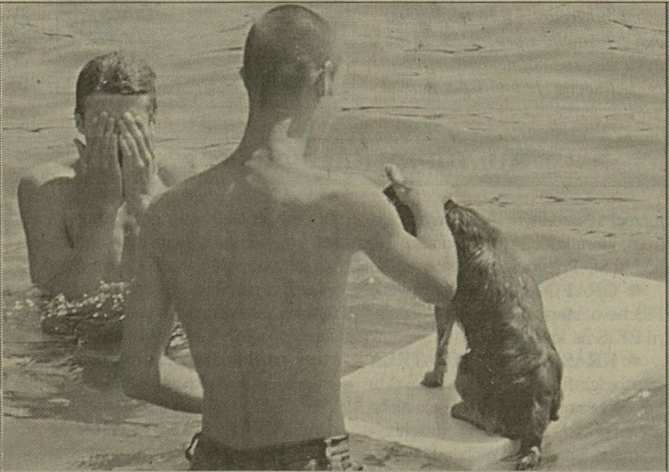

Články, recenzie, blogy, diskusie, sťažnosti, fotky, audio a video reportáže ...
Prevažná väčšina článkov je o Čunovských jazerách, avšak u niektorých prevažuje iná hlavná téma a Čunovské jazerá sú zmienené iba okrajovo.
Taktiež som tu uverejnil články o vodnom zdroji Ostrovné lúčky a neďalekých Rusovských jazier.
Dôvod je jednoduchý a to včlenenie Čunovských a Rusovských jazier/štrkovísk do ochranného pásma vodného zdroja Ostrovné lúčky,
ich blízkosť a vzájomné prepojenie a podobnosť.
Farba pomlčky a prvého písmena za dátumom uverenenia poukazuje na havný subjekt: - Prevažne Čunovské jazerá - Prevažne vodný zdroj Ostrovné lúčky - Prevažne Rusovské jazerá
11.06.1971 - Pribudnú do rodiny
autor: -pv-jt-jz
zdroj: Večerník č.137
Mestu sa bude na väčšej ploche voľnejšie dýchať.
Ďalších sedem prímestských obcí pričlenia k Bratislave.
Vyriešia sa staré problémy, ale vzniknú nové.
Noví Bratislavčania priložia ruky k dielu.
Keď poslanci Národného výboru hlavného mesta Slovenska na svojom tridsiatomsiedmom plenárnom zasadaní v máji t. r. rozhodovali o obciach, ktoré by bolo vhodné pripojiť k mestu, viseli vo vzduchu mnohé otázky, obavy a problémy, ktoré v týchto súvislostiach sú už dnes zapísané v kronike minulosti. Ktoré obce to budú? Ako sa postaví k tomu okres, čo na to funkcionári a obyvatelia vybraných dedín a s akými predstavami a zámermi ideme do nového rozširovania územia hlavného mesta? Rokovanie sa skončilo v súlade so záujmom Bratislavy, funkcionári obcí pochopili potrebu začlenenia ich územia do katastru hlavného mesta. Od 4. mája t. r. sú schválené na pripojenie k mestu obce doteraz patriace okresu Bratislava-vidiek. Sú to Podunajské Biskupice, Rusovce, Jarovce, Čunovo, Vrakuňa, Záhorská Bystrica a Devínska Nová Ves.
Iste nám nie je neznáma poloha spomínaných obcí, mnohí nimi prechádzajú, prípadne trávia v nich príjemný víkend. Keďže nás zaujíma, čo mesto dostane a čo bude musieť občanom dať, aby tieto zatiaľ menej exponované časti Bratislavy neboli z titulu svojej okrajovosti zanedbávané najmä v oblasti služieb, dopravy a ďalšieho vybavenia, zašli sme si do niektorých z nich, aby sme sa na tvári miesta mohli s tamojšími funkcionármi porozprávať a rozobrať, otázky, ktoré nie sú také jednoduché, ako to na prvý pohľad vyzerá. Pozrime sa preto trochu i do minulosti, obcí. Vzhľadom k svojej blízkosti k Bratislave majú tiež bohatú históriu, dajme preto slovo tým, ktorí si viac sľubujú od budúcnosti.
RUSOVCE
Hoci máme na zreteli bezprostrednú budúcnosť tejto prímestskej obce, nemožno na jej pôde nehovoriť o minulosti.
Tu stála predsa pred dávnymi stáročiami rímska Gerulata. Naši archeológovia vykopávajú z tmy zabudnutia jej bývalú nádheru, objavujú budovy, chrámy, cintoríny. Po dokončení archeologických vykopávok bude možné zriadiť na území
Bratislavy jedinečné múzeum rímskych pamiatok a vzdať tak hold mysliteľom, štátnikom a vojvodcom, ktorí dokázali pred dvoma tisícročiami obdivuhodne pružne spravovať obrovské územie. A pravdaže, hold tým mnohým bezmenným tvorcom, ktorí postavili budovy a chrámy, vykresali kamenné sarkofágy a zanechali nám jedinečné svedectvo vysokej výtvarnej kultúry. Tu pri Rusov- ciach bol predsa Limes Romanus, hraničný obranný val tiahnuci sa pozdĺž Dunaja. Tu bola veľká križovatka dejín, na ktorej sa stretali vojská, ale aj veľké myšlienky a prúdy.
V Rusovciach sídli Slovenský ľudový umelecký kolektív. Stretáme sa s ním skôr na koncertných pódiách alebo na televíznej obrazovke a do Rusoviec chodia za súborom nanajvýš zahraniční hostia alebo zainteresovaní odborníci. Sú- bor, rozvíjajúci nepreberné bohatstvo piesní, tancov a hudby nášho ľudu, vtlačil v predošlých dvoch desaťročiach výraznú pečať životu tejto obce. Pričlenením k Bratislave stanú sa nielen Rusovce súčasťou nášho mesta, ale aj SĽUK bratislavským súborom.
PODUNAJSKÉ BISKUPICE
sú pravdepodobne jednou z najstarších obcí na Slovensku. Už oddávna sú v čulom styku s Bratislavou. Myšlienka pripojiť Biskupice k mestu preto ani nie je nová. Podľa slov predsedu tamojšieho MSNV Imricha Mádliho o pričlenení obce k mestu sa uvažovalo už v roku 1950. Je samozrejmé, že vtedajší Okresný národný výbor nemal záujem vkladať investície do dediny, ktorá sa onedlho od- člení z okresu. Na vec sa medzičasom akosi zabudlo, Podunajské Biskupice po stránke investičnej už mali byť od okresu odlúčené a mesto pre nich ešte prostriedky nemalo. A tak sa stalo, že neďaleko Bratislavy existovala jedna z najzaostalejších dedín na Slovensku. Od roku 1984 sa ich obraz začal meniť. Postavilo sa 135 štátnych bytov, 48 družstevných. Od roku 1945 vyrástlo v obci vyše 1000 rodinných domov. Biskupice donedávna bez asfaltových ciest majú už dnes vy- asfaltovaných 70 percent všetkých komunikácií. Zriadili tri reštaurácie, obchodné stredisko, občania už nemusia pre základné potraviny chodiť do mesta. Mestská doprava umožňuje cestovať skoro 4700 pracujúcim do Bratislavy, ostatok pracuje v poľnohospodárstve.
Skutočnosť, že budeme pričlenení k mestu, sme v Biskupiclach uvítali, vraví predseda MSNV. Mestu s sme však adresovali niektoré požiadavky, ktoré považujeme za nevyhnutné u nás realizovať, ak máme uspokojiť občanov. Potrebovali by sme nové zdravotné stredisko, lekárov, budovu pre ZDS, telocvičňu. V Biskupiciach nemá kde cvičiť 1600 žiakov. Slovnaft nie je ďaleko a viac k tomu hádam netreba hovoriť. Prísľuby z Národného výboru hlavného mesta Bratislavy Biskupičania majú. Chceli by mať však aj istoty, ktoré by onedlho prejavili v živote obce v pozitívnom zmysle. A tomu sa netreba čudovať, veď funkcionárov si obyvatelia volia sami a tí sú povinní tlmočiť a presadzovať ich požiadavky. Biskupičanov čaká ešte veľa práce, treba len podporu a pomôcť im v ich sympatickom úsilí.
Príslušníci Verejnej bezpečnosti zastavujú naše auto niekoľko sto metrov pred hraničným prechodom v Rusovciach. Nie my do štatistiky vycestovaných k susedom zatiaľ neprispejeme, odbočujeme doľava a kochajúc sa na obrovskej zelenej ploche (vyše 160 ha) ovocných sadov končiacich až kdesi na obzore) vchádzame
DO ČUNOVA.
Družstvo je jedným z najväčších zásobovateľov našich obchodov broskyňami, marhuľami a jablkami. Tento rok zrejme veľa nenagazduje. Jarné mrazy prišli práve v najnevhodnejší čas. Pomrzlo asi 90 percent všetkej budúcej úrody. Na národnom výbore nás očakáva predsedníčka Mária Maurovichová. Nie je v tejto funkcii dlho, avšak žije roky v Čunove, dokonale pozná problematiku svojich ľudí a dediny. Opatrne sondujeme, ako to vyzerá u nich v dedine, či sa k nim okres nezachoval podobne macošsky ako k Podunajským Biskupiciam. Odvtedy sa veľa zmenilo vraví predsedníčka. Môžem zodpovedne povedať, že okres Bratislava vidiek nám pokiaľ mohol pomáhal. Vieme, že v okrese sú možnosti z hľadiska investícií a podobne ohraničené a čo mohli, to pomohli.
I keď máme problémov dosť, myslíme si, že po pričlenení k mestu, ktoré bude mat iste väčšie možnosti ako okres sa bude dať dačo zlepšiť. Mám na mysli najmä dodávateľsko-odberateľské vzťahy medzi JRD a obchodnými zložkami. Veď ovocie tak prepotrebné na našom stole dostanú obyvatelia čerstvé až na stôl.
Z hľadiska rekreačného sa pre budúcnosť skýtajú v Čunove pre Bratislavčanov veľké možnosti pri Dunaji a veľkom štrkovisku,
kde je kúpanie nemenej príjemné ako napríklad v Senci.
Vidno, že v Čuňove nie sú neskromní. Mali sme skôr dojem, že po pričlenení k mestu chcú viac dávať ako brať, preto ani ich požiadavky na Národný výbor hlavného mesta SSR Bratislavy neboli veľké. Chceli by však vybojovať aspoň základné potreby, ktoré sú pre život a spokojnosť občanov neodmysliteľné. Je priam zarážajúce, že niekoľko kilometrov od Bratislavy neexistuje v dedine žiadna kultúrna miestnosť. Kedysi mali v staršej budove kultúrny dom, bolo však treba niekde umiestniť materskú školu a od- vtedy už dlhé roky premietanie filmu v dedine nepoznajú, divadelné predstavenie ani netreba spomínať, jednoducho niet tam nič. Vedia, že v tejto päťročnici sa prostriedky investujú do výroby Hádam im však mesto pomôže zatiaľ aspoň minimálnym vybavením, ktoré by im umožnilo premietať v dedine film. A ešte niečo páli mladých v Čuňove. Ako všade inde aj tam sa ženia, vydávajú a zakladajú si rodiny. Potrebujú si, samozrejme, postaviť aj nové byty. A pre niekoľko záujemcov je iba jedno stavebné povolenie, ktoré okres mohol dať, navyše chodia žiadosti o prideľovanie pozemkov od občanov Bratislavy.
Dedinka, ktorú najstaršie listiny spomínajú už v 12. storočí, ostáva za nami. Do oblasti obsadenej pod nátlakom Turkov v 16. storočí chorvátskym obyvateľstvom patria aj
JAROVCE.
Obec leží dva kilometre od hlavnej cesty vedúcej z Bratislavy do Rusoviec. Na MSNV skoro nikoho niet, iba tajomníčka Alžbeta Karchesová nás ubezpečuje, že predseda bude o chvíľu tu. Vraj je na brigáde aj s poslancami, pracujú na úprave neďalekej škôlky. Anton Jaborek prichádza v montérkach so Štefanom Vareničom, podpredsedom tunajšieho MsNV. Nič sa nedá robiť, vravia, ak chceme, aby pracovali ostatní, musíme ísť príkladom.
Súdruh predseda, ako ste uvítali skutočnosť, že budete patriť k hlavnému mostu Slovenska?
Sme všetci za to, aby sme patrili k Bratislave. Sľubujeme si od toho, že po tejto úprave Ľahšie budeme prekonávať ťažkosti, ktoré máme.
Chcete tým povedať, že vás okres zanedbával?
-Nie naopak -S okresom Bratislava-vidiek sme nemali žiadne ťažkosti, vieme, že tam nám vychádzali pokiaľ mohli v ústrety. Myslím tým však to, že niektoré problémy nám nemohol vyriešiť ani okres, ktorý je do značnej miery obmedzený v investíciách, preto dúfame, že mesto bude na tom lepšie, čo pre nás znamená prínos.
Čo vás konkrétne najviac v obci páli?
Veľmi radi by sme mali vodovod, školu, doriešená otázku služieb, dopravy a obchodu. Tiež benzínové čerpadlo by malo v Rusovciach byt, aby sme nemuseli po benzín chodiť až do Petržalky. (To by malo byť samozrejmé už aj z hľadiska cestovného ruchu pozn. red.)
Ako je to u vás so záujmom o stavebné povolania?
-To je otázka, ktorá mesto bude môcť vyriešiť, lebo záujem je veľký aj zo strany Bratislavčanov mnohí by si radi postavili domček mimo exponované- ho územia v meste.
Ďalšou z pričlenených obcí je
VRAKUŇA.
Jej história je pomerne bohatá. Z písomných pamiatok vieme, že už oddávna inklinovala k Bratislave. V stredoveku patrila ako poddanská obec Bratislavské- mu hradu a mala dunajský prístav, ktorý v XIV. storočí používalo aj mesto Bratislava. Verekňa ako sa vtedy Vrakuňa volala - prekonala veľké zmeny, vyrástli v nej nové domy. Už v tomto roku majú vo Vrakuni začať stavať sídliská tzv. Medzi Járky a Dolné hony. V prvom sídlisku nájde domov 1300 rodín. Aj vo Vrakuni sa postavili k rozhodnutiu pripojiť obec k mestu kladne.
Smer nášho putovania sa obrátil na západnú stranu, z roviny sa uberáme k modravým horám strácajúcim sa v. smogu mesta. Bolo to už dávno, keď dvorany mocného Devína sa ozývali ľudskou vravou, smiechom a neraz aj rinčaním zbraní jeho dobyvateľov. Povesti,
historicky doložené správy prezrádzajú, že kedysi mocná Veľkomoravská ríša, ktorej vládol Svätopluk, vplývala aj na svoje okolie, jeho výrobu a život obyvateľstva.
DEVINSKA NOVÁ VES,
kde našli slovansko-avarské pohrebisko s veľkým sídliskom, nás oprávňujú domnievať sa, že Devínska Nová Ves bola už pred Svätoplukom oblasťou možno aj sídlom prvého slovanského štátu tzv. Samovej ríše. Prvý písomný doklad o obci je z roku 1435. Ako Čunovo, Jarovce a Rusovce, tak aj Devínsku Nová Ves osídlili v XVI. storočí Chorváti, utekajúci pred Turkami. Obec patrila v stredoveku devínskemu panstvu, svoje majetky tu však mali aj marietálski Paulíni a bratislavskí Jezuiti.
Ako vyzerá Devínska Nová Ves dnes? prezradil nám tajomník MSNV Tomáš Štepánek.
To viete, starosti a starosti. Aby som povedal pravdu, mali sme to u nás kedysi veľmi zlé. V päťdesiatych rokoch sa počítalo so zánikom obce, nik do nás nič neinvestoval a dnes vidíme, že náš dlhoročný boj o existenciu nebol zbytočný. K akcii pričlenenia našej obce do Bratislavy predchádzali mnohé rokovania s funkcionármi mesta i okresu, kde nás kompetentní činitelia oboznamovali so svojimi zámermi. Naše pripomienky k spomínanej akcii sme zaslali na Národný výbor hlavného mesta SSR Bratislavy, kde ich prerokovali na Rade NVB. V ďalšom nás oboznámili s pripravovanými akciami už konkrétnejšie. Boli už u nás zástupcovia Útvaru hlavného architekta, Komunálnych služieb a ďalšie faktory nám signalizujú, že pričlenenie k mestu znamená pre našu obec veľa pozitív.
Čo konkrétne myslíte?
Myslím na zlepšenie situácie v obci z hľadiska služieb, občianskej vybavenosti, zavedenia kanalizácie, plynofikácie a pod. Myslím, že výstavba autostrády a automobilky v našej lokalite bude mať ďalší pozitívny prínos pre naše dobre prosperujúce Jednotné roľnícke družstvo a rozvej podnikov ako je Textilianka, Omnia, Technické sklo v Dúbravke, tiež tehelne, ktorá je jedna z najväčších v republike.
Súdruh tajomník, my sme vás vyrušili z rokovania k problematike vody, ktorá vás teraz páli.
- Áno. Vodovod nám už toho času z kapacitných dôvodov nestačí, myslím si, že nedostatok vody spôsobili aj nedomyslené odvodňovacie zásahy, budovanie závlah a podobne. V budúcnosti sa budeme musieť aj s touto otázkou spoločne s mestom vážne zaoberať.
Našu cestu pretínajú násypy budúcej autostrády, celkom zreteľne už vidno rovnú čiaru, ktorá sa stráca v diaľke. Z betónu trčia železné tyče, budú držať oblúky, nadjazdy a súčasne reprezentoval cit a umenie našich architektov pri skĺbovaní stavieb s prírodou. Zo Stupavy do
ZAHORSKEJ BYSTRICE
je to len na skok. Na MSNV majú práve poradu. Voda zasa nechýba v prerokovávaných problémoch, za predsedom súdruhom Maškom chodia sa radiť a žiadať po- moc aj pracovníci na autostráde, slovom, o ruch a robotu nie je núdza. Prešli už časy, keď obyvateľstvo živiace sa poľnohospodárstvom chodievalo so svojimi výrobkami až do Viedne, ktorá bola po Bratislave najlepším odbytiskom zeleniny, najmä kapusty. Tou už sa Záhorská Bystrica preslávila. Dnes stavajú klimatizačný sklad o kapacite 92 vagónov, odkiaľ budú môcť vyexpedovávať pre mesto ovocie a zeleninu zachovalú a v požadovanom termíne.
Obec je veľmi stará, v listinách ju spomínajú už v roku 1256 pod názvom Biztrich. V roku 1337, keď už bola farnosťou, ju kráľ Ľudovít daroval kláštoru Paulínov v Mariánke, ktorým patrila až do XIV. storočia. Aj túto obec osídlili Chorváti a v poddanstve pajštúnskeho hradu bola až do konca feudalizmu. Na našu otázku, či okres pripravil obec pre pričlenenie k hlavnému mestu, hovoril predseda MNV pozitívne. Do Bystrice im však prichádzajú nedobré správy o problémoch mestskej dopravy v Bratislave. Doteraz ako-tak to so spojmi ČSAD šlo až na ranné špičky, kedy sa cestovanie do zamestnania v Bratislave stáva pre mnohých utrpením. Je samozrejmé, že aj v Bystrici potrebujú kdečo vylepšiť a od mesta požadujú len investície, ktoré sú pre obec nevyhnutne potrebné. Žiadosti o pridelenie stavebných pozemkov majú od občanov Bratislavy viac ako dosť, avšak zatiaľ ich nemôžu nikomu udeliť.
Ako vidno, problémy s individuálnou bytovou výstavbou aj v Záhorskej Bystrici si bude mesto musieť doriešiť samo.
Pričlenením spomínaných obcí získa Bratislava vyše 20 tisíc nových obyvateľov, to znamená, že v tomto roku nás už bude v meste žiť 300 tisíc. Z 19 tisíc hektárov vzrastie jeho plocha na 30 tisíc. To je plocha, ktorá vzhľadom na plánované úlohy päťročnice by mala stačiť. Bratislava bude mať plochu, obce sa stanú súčasťou veľkomesta. Kto bude s tým ako spokojný, to ukáže budúcnosť. Je známe, že okres Bratislava-vi diek má určité prostriedky, ktoré musí spravodlivo a podľa naliehavostí rozdeliť. Napriek tomu sa nezachoval k týmto obciam macošsky, vidno, že funkcionári ONV sa v rámci svojich možností snažili čo najlepšie pripraviť spomínané obce pre pripojenie k hlavnému mestu. Úlohy tejto päťročnice sú obrovské, jedine spojením všetkých našich síl a umu ich môžeme realizovať. Bratislavu očakáva veľkolepý rozvoj. Obce, ktoré k nej pričlenia, pomôžu vyriešiť dôležitý životný problém budúceho veľkomesta. V porovnaní s ním sú malé problémy budúcich okrajových častí mesta skutočne malými problémami. Pre tamojších obyvateľov sú to však problémy nemalé, pretože priamo ovplyvňujú ich život. Ako sa ich však podarí riešiť, to nebude závisieť iba od radnice. Všetci musíme priložiť ruku k dielu, aby sme z Bratislavy vytvorili a vybudovali skutočne moderné socialistické veľkomesto, dôstojné hlavné mesto Slovenska.
11.06.1972 - PREHĽAD ATOCAMPIGOV A MOTELOV
autor: -
zdroj: Technické noviny č.28
Slovensko dostupné z mototuristických trás.
Začína sa hlavná turistická i mototuristická sezóna. Zasa raz prírodné krásy Slovenska zažívajú inváziu najmä motorizovaných turistov, najmä takých, ktorí v krátkom čase, na jednej trase, chcú načrieť do klenotnice atraktivít Slovenska. V letnom období vyhľadávané sú prírodné krásy, najmä tie na brehoch riek, potokov a jazier - prírodných i priehradných, ale aj zaujímavé kultúrno-umelecké a historické pamiatky, predovšetkým, keď sú v príťažlivom prírodnom prostredí. Pri takejto exkluzívnej mototuristickej činnosti je veľmi ťažké a nevýhodné plánovať fixné, terminované ubytovanie na trase. Vtedy totiž mototurista stráca to najcennejšie, čo mototurizmus dáva možnosť podľa vlastnej nálady a chuti postáť kdekoľvek a kedykoľvek, tam, kde sa mu páči a koľko sa mu žiada. Keď mu je horúco, môže sa ísť osviežiť k vode alebo aspoň ochladiť do lesa, a nemusí mať nad sebou Damoklov meč, že keď sa neprihlási, povedzme, do 14. a či 16. hodiny, stráca rezerváciu hotelovej izby. Takto popri vlastnej turistickej činnosti človek vychutnáva voľnosť, možnosť okamžitého rozhodovania sa na základe vskutku vlastného ja. Také niečo je len ťažko možné niekde inde alebo inokedy, v dnešnom súkromnom i verejnom živote, neraz až stoicky viazanom na čas, povinnosti a stereotyp.
Aby sme našim čitateľom takúto voľnú mototuristickú jazdu za krásami, zaujímavosťami a atraktivitami Slovenska uľahčili, uverejňujeme na tejto dvojstrane stručný itinerár Slovenska, pri ktorom východiskovými bázami sú jestvujúce autocampingy a motely. Ta možno autom prísť kedykoľvek bez ohlásenia, v každom čase, ale - pravdaže - s vlastným ,,lôžkom", či už v prívesnom vozidle, v aute, v stane, no v priaznivom prípade nájdeme voľné lôžko aj v autocampingu (v chatách, stanoch atd.)...
Putovanie Slovenskom začíname v Bratislave. Motel a autocamping ZLATÉ PIESKY je komunikačne vynikajúco situovaný, a to priamo pri najdôležitejšej výpadovej ceste z mesta, pri hlavnej hradskej E 16. Pri autocampingu je aj čerpacia stanica na pohonné látky s nepretržitou prevádzkou a moderná automatická umyváreň áut. Autocamping je veľmi dobre situovaný aj čo do prírodných daností. Rozkladá sa na brehu 10-hektárového kúpaliska Zlaté Piesky. V autocampingu Zlaté Piesky je k dispozícii návštevníkom 545 lôžok. Stravovať sa možno v reštaurácii motela, ktorý je v areáli autocampingu, a prípadne i v bufetoch a kioskoch rekreačného strediska Zlaté Piesky. Lôžka v moteli (cca 60) bývajú zväčša obsadené. V areáli rekreačného strediska sú možnosti pestovať rozličné športy a hry, kúpať sa a člnkovať.
Druhý autocamping v Bratislave otvára sa v PETRŽALKE na Rusovskej ceste pri hlavnej hradskej č. 15. V blízkosti sú veľmi pekné terény na kúpanie sa a rekreáciu pri Dunaji
a na štrkoviskách na obvode Bratislavy pri Rusovciach a Čunove. Kapacita je 60 lôžok, campingový bufet má 80 stoličiek.
Bratislavské autocampingy možno využiť nielen na ubytovanie pri precestovaní cez Bratislavu, ale aj na poznávaciu turistickú, ale aj čisto rekreačnú činnosť
(kúpať sa možno na kúpalisku Zlaté Piesky, na štrkoviskách i na dunajskom nábreží).
...
13.04.1973 - Brána do republiky
autor: ZVAR
zdroj: Večerník č.74
Tak by sme mohli nazvať jednu zo ta dunajských časti Bratislavy, Rusovce, odkiaľ, dá sa povedať, kameňom dohodíš do Maďarska. A hovorí sa, že prvý dojem sa nesmie podceňovať. Ročne k nám prichádzajú stovky a stovky, tisíce a tisíce turistov, ktorí sa uberajú práve cez rusovecký hraničný prechod. Preto z hľadiska reprezentácie by sa malo dbať, aby táto mestská štvrť vyzerala skutočne ako sa patri.
Občania si najviac tažkajú na obchodnú sieť. Pravda, v Rusovciach majú potraviny, mliekareň, zelovoc, obuv, domáce potreby textil, ale to sú všetko pomerne malé a nevyhovujúce obchodné strediská. Najhoršie, že prakticky každé jedno je v súkromnom dome, kde nie si poriadne vyriešené sklady, priestory nie sú na hygienickej úrovni. Ide o budovy staré, majú sto i viac rokov a sú z nepálených tehál, takže na Miestnom národnom výbore sa oprávnene strachujú, aby sa im neprihodilo niečo, ako sa stalo budove bývalého národného výboru Raz stavba povolila a dom sa sčasti prepadol. Ten problém však šťastlivo zažehnali, dnes na tom istom mieste stojí nový národný výbor, kde majú aj prekrásnu svadobnú sieň, na akú by bol pyšný i nadriadený Obvodný národný výbor Bratislava IV.
Nuž bolo by na čase, aby sa tu postavilo dajaké nové obchodné stredisko. Doposiaľ však nemožno hovoriť, kedy k tomu príde. Situácia je zatiaľ dobre zamotaná. Uvažuje sa o predajni Jednoty, kde bude potravinársky obchod a priemyselný tovar.
V Rusovciach sa predpokladá širší rozvoj a s tým súvisí budúce zintenzívnenie individuálnej bytovej výstavby, často s pretriasa výstavba kultúrneho domu, avšak táto otázka je takisto otvorená... V tomto roku má sa zväčšiť tunajší motorest o 15 nových chát. Aj to súvisí s reprezentáciou našej republiky a nášho mesta. Dalo by sa povedať, že pohostinstvo je na uspokojivej úrovni. Skutočne slušný podnik je reštaurácia Jednoty; doplňujúcim prvkom sa stal i bufet na hraniciach. A v letných mesiacoch je otvorený ambulantný predaj pri Dunaji. Robí ho Jednota a chystá sa tu všeličo vylepšiť. Majú sem inštalovať lavičky, stoly, utvoriť tanečnú plochu, aby tu mohli bývať muziky, zábavy.
Voda. Rusovce sú s ňou v blízkom spojení. Dunaj je neďaleko a v ich katastri je mierna pláž, možno sa tu kúpať. Len motoristi neraz robia starosti. V budúcnosti sa má utvoriť väčšie parkovisko a do lesa autá chodiť nebudú. Komu sa chce do prírody, môže sa kúsok aj prejsť.
Najhoršie na motoristoch je to, že chodia aj k štrkoviskám , kde je čistá voda. Umývajú si svoje vozidlá, saponátmi znehodnocujú kúpalisko. Zákazy sú, ale oni nedbajú.
Mnohí zahraniční turisti len prechádzajú Rusovcami a priamočiaro sa uberajú k mestu. Človek má oči na to, aby sa obzeral aj vôkol, pozoroval... I toto mali Rusovčania na zreteli, keď sa rozhodli skrášliť okolie hlavnej cesty. Povedľa tejto dopravnej tepny sa vinie široký pás voľnej, nevyužitej zeme. Už v tomto čase tu možno vidieť hŕby navozenej zeme, postupom času dodá Záhradnictvo a rekreačné služby humus a potom v rámci akcie „Z“ Rusončania si vysúkajú rukávy, pustia sa do úpravy priestranstva. Zarovnajú povrch, zasejú trávu, vysadia kvety, okrasné kríky. Obvodný národný výbor im na to uvoľnil 350 tisíc korún, pričom sa predpokladá vytvorenie hodnoty za pol milióna.
Také sú dnešné Rusovce, to sú ich zámery, plány, predsavzatia. Rusovce - brána do republiky.
22.06.1973 - ELDORÁDO bratislavské
autor: Vlado Klobušnický
zdroj: Večerník č.122
Koniec týždňa je čas, ktorý by sme mali venovať odpočinku, a to, ako radia lekári, aktívnemu odpočinku. Nie každý má však možnosti športovať a nie každý má na to vekové alebo zdravotné predpoklady, a nie každý má nejakú tú záhradku, ktorú by mohol polievať alebo okopávať. Ale turistika je naozaj pre každého. Výhodná geografická poloha Bratislavy priam pobáda k výletom do bližšieho i vzdialenejšieho okolia.
Na prvom mieste by to mohol byť azda Devín a Devínska kobyla. O samotnom hrade toho veľa hovoriť netreba, veď jeho význam v našich najstarších národných dejinách spoznávajú už žiačikovia v ľudovej škole. Spomenieme toľko, že prvé písomné zmienky o ňom sú z roku 864, ale pôvod hradu je určite starší. Devínska kobyla má výšku 514 metrov nad morom a vidno na nej stopy neogénneho mora. Na južných svahoch rastie vzácna teplomilná kvetena, ktorej mnohé druhy sú chránené.
Dobre známym výletným miestom je aj Borinský hrad (Pajštún) nad obcou Borinka neďaleko Stupavy, ako i celé údolie Borinského potoka. Hrad stojí na 464 metrov vy- sokom vápencovom brale a prvý raz sa spomína v listine z roku 1237, teda nie je nijaký mladíček. Hrad je v ruinách od roku 1810, keď ho napoleonské vojská vyhodili do povetria. Z hradu je dobrý výhľad do Záhorskej nížiny i do údolia Borinky a dokonca, keď je dobré počasie, možno vidieť aj Alpy. Hoci je hrad v rozvalinách, v prípade nečakanej búrky sa možno pred dažďom ukryť v pivniciach, ktoré ako núdzový prístrešok dobre po- slúžia. Odtiaľto sa dá ísť na Košiarisko, Dračí hrádok (zrúcanina stredovekej strážnej veže) a na Medené Hámre.
Vráťme sa však trocha bližšie k mestu. Aj mladší obyvatelia Bratislavy, ako aj tí, ktorí sa prisťahovali do mesta len celkom nedávno, poznajú prechádzkovú alebo ak chcete výletnícku trasu od Červeného mosta na Železnú studienku a odtiaľ na Kamzík a na Kolibu k trolejbusu. Dnešný kovový most nad údolím Vydrice je tiež červený, ale toto miesto dostalo názov podľa klenutého mosta z červených tehál, ktorý vydržal od roku 1848 až do r. 1945, keď ho zničili ustupujúce fašistické vojská. Železná studienka dostala názov podľa liečivého železitého prameňa, ktorý býval pred budovou volakedajších kúpeľov. Na Kamzík, stredisko bratislavského lesoparku možno ísť pešo a pre tých pohodlnejších je k dispozícii sedačkový výťah.
Nemôžeme obísť Harmóniu a Zochovu chatu. Harmónia je dnes už husto zastavaná chatami, ale malebné údolie Kamenného potoka nestratilo nič na svojej kráse. Dostaneme sa ním k Zochovej chate, ktorá je jedným z najnavštevovanejších stredísk celej oblasti. Listnaté porasty okolitých lesov sú premiešané jedľou, takže to sú najnižšie miesta, kde sa tento strom u nás vyskytuje. Neďaleko chaty je priehrada s kúpaliskom, zaujímavé skalné útvary a miesta na táborenie. Odtiaľto vychádza niekoľko veľmi zaujímavých turistických trás. My sa vyberieme tou, ktorá vedie na hrad Červený kameň.
Je to štátny hrad a múzeum. Dala ho postaviť v rokoch 1220 až 1235 Konštancia, manželka kráľa Přemysla Otakara I. Neskôr bol majetkom grófa z Jura, potom Thurzovcov a Fuggerovcov. Ti dali starý hrad zboriť a blízka neho v tridsiatych rokoch šestnásteho storočia vybudovali dnešný renesančný hrad, ktorý neskôr prešiel do vlastníctva magnátskeho rodu Pálffyovcov. Im patril až do roku 1945. Pôvodný gotický hrad, nazvaný podľa červených kremencových skalísk, stál západne od neskorších hospodárskych budov. Dnešný renesančný zámok so štyrmi krídlami a nárožnými oválnymi baštami sa podobá na talianske kastellum. Dômyselné vetracie za- riadenie v delových baštách je robené podľa systému, ktorý vypracoval známy maliar a rytec Albrecht Dürer. Pálffyovci hrad niekoľkokrát prestavovali a dlho bol ich rezidenčným sídlom. Je jedným z mála podobných objektov, ktoré sa na Slovensku zachovali. Dnes je na hrade múzeum. Je tu cenné renesančné a barokové vnútorné zariadenie, keramika, umeleckoremeselné výrobky, zbrane, obrazy, lekáreň, salla terena. Zaujímavé sú pivnice a hradná studňa i mučiareň, nemý, ale o to výrečnejší svedok stredovekej justície. Prepychový a pohodlný kočiar ktorý používali páni grófi, pracovníci múzea ho nazývajú šesťstotrojkou. Na hrade sú dobré možnosti občerstvenia v Píle, dedine pod hradom, je kúpalisko i možnosti ubytovania.
No a keď sme sa už vybrali tým smerom, môžeme pokračovať o nejaké kilometre ďalej, na Jahodník. Je to rekreačné stredisko asi dva kilometre od Smoleníc a možno povedať, že leží uprostred jednej z najkrajších oblastí Malých Karpát. Neďaleko sú Záruby, Veterník, Čierna skala a jaskyňa Driny. Na Jahodníku (bývalý Škarbák) je kúpalisko a možnosti ubytovania v chatkách alebo i vo vlastných stanoch. Reštaurácia je zaujímavá tým, že voľakedy to boli stajne, kde gróf Pálffy choval osly. To však už bolo pred desaťročiami a dnes reštaurácia spĺňa i tie náročnejšie požiadavky.
Niekoľko minút cesty od Jahodníka je jaskyňa Driny. Patrí medzi najväčšie puklinové jaskyne. Jaskynné chodby v dĺžke 636 metrov majú bohatú kvapľovú výzdobu. Pre verejnosť je zatiaľ sprístupnených iba tristo metrov jaskynných chodieb.
Lesnou cestou sa dá prejsť na vrch Molpír, kde voľakedy bývala veľká predhistorická opevnená osada pri tzv. Českej ceste. Získané nálezy ju datujú do doby bronzovej. Neďaleký zámok, pôvodne strážny hrad, bol známy už v štrnástom storočí. V minulom storočí bol v ruinách. Začiatkom tohto storočia ho dal Pálffy prestavať na romantický zámok. Dnes je v ňom sídlo vedeckých pracovníkov SAV a verejnosti je neprístupný, ale aj pohľad zvonku stojí za to.
Cieľom diaľkových túr mnohých turistov je aj Pezinská Baba, sedlo na hlavnom hrebeni Malých Karpát vo výške 527 metrov nad morom. Baba má pekné a zaujímavá okolie. Je to Čmelek, Čertov kopec, Rybníček, Kamenná brána, Pernecké bane a Jastrabník. Na Babu sa možno dostať aj autobusom a odtiaľ podnikať kratšie či dlhšie túry.
V tejto oblasti je aj známe Slnečné údolie. Východiskovou stanicou k nemu môže byť Limbach. (Hlboké údolie sa v hornej časti pod Kolárskym vrchom rozširuje. Sú tu aj možnosti táborenia. Nezaškodí azda spomenúť aj známe limbašské víno, z ktorého si cestou domov možno kúpiť fľašku či dve.
Keď však hovoríme o možnostiach krátkodobej rekreácie pre obyvateľov hlavného mesta Slovenska, nemôžeme,
najmä teraz, keď máme, leto na krku, zabudnúť ani na možnosti kúpania a vodných športov.
Pre tých, ktorí neobľubujú miesta, kde sa to ľuďmi často hmýri ako v mravenisku,
možno odporúčať nové štrkoviská na pravom brehu Dunaja, za Starým Hájom alebo pri Čunove.
No a nemožno zabudnúť na samotný Dunaj. Lido a miesta poniže neho sú známe.
Menej ľudí už vie, že k Dunaju sa dá pomerne ľahko dostať aj z Podunajských Biskupíc.
Je tam menej ľudí a okrem toho pridunajské lužné lesy sú veľmi zaujímavé, najmä tým, že sú menej dotknuté
ľudskou rukou ako lesy, povedzme v Karpatoch.
Rovnako možno odporúčať
aj výletné stredisko Hrušovo. Najlepšie sa tam dá dostať loďou a možno povedať, že už samotná takáto cesta je veľmi príjemnou zmenou po rušnom pracovnom týždni. Povyše Hrušova je Čilistovské rameno, ktoré je menej navštevované, a odvážime sa tvrdiť, že neprávom. Komu sa nelení niekoľko minút ísť pešo, dostane sa do miest, aké ináč mohol vidieť len napríklad vo filme Čierny prápor alebo Zlozor. Teda kus romantiky, kus samoty, možnosť vykúpať sa i pomeditovať na brehu Dunaja alebo jeho ramena, na ostrove, uprostred húštiny pod starými stromami, na miestach, ktoré našincovi pripomenú prales.
O rekreačných možnostiach Bratislavy by sa dali napísať knihy. Skrátka, každý si tu príde na svoje.
01.07.1975 - BRATISLAVSKÝ LESNÝ PARK A JEHO GENERÁLNY PROJEKT VÝSTAVBY S PERSPEKTÍVOU DO ROKU 2000
autor: Eugen Riedl
zdroj: Pamiatky a príroda č.4(periodikum)
Na základe Smerného územného plánu rozvoja Bratislavy s koncepciou rozvoja do roku 2000 predložil ÚHA mesta Bratislavy návrh na rozšírenie územia prímestských lesov Bratislavského lesného parku.
Poradný zbor BLP po zvážení návrh prijal a predostrel túto požiadavku prostredníctvom NV hlavného mesta Bratislavy Ministerstvu lesného a vodného hospodárstva.
Toto ministerstvo po zistení skutkového stavu požiadavku NV hlavného mesta Bratislavy akceptovalo a svojím rozhodnutím v spise č. 188-22/73-130 zo dňa 1. II. 1973 vyhlásilo s platnosťou od 1. I. 1973 všetky lesy Lesného závodu Bratislava za účelové lesy II podľa písmena ..g" platnej vy- hlášky teda za lesy rekreačné.
Týmto rozhodnutím územie rekreačných prímestských lesov vymedzuje približne táto hranica:
Od styku rieky Moravy so železničnou traťou, z ktorej odbočuje východným smerom po katastrálnej hranici obce Stupavy, pretína Karpatský komplex a S od Jura pri Bratislave pokračuje na Slovenský Grob, kde sa lomí južným smerom a hranica prechádza východnými hranicami katastrálnych území obcí, ktoré sú na čiare Slovenský Grob Kalinkovo.
Na pravej strane Dunaja prechádza štátnou hranicou s MĽR a Rakúskom až po východiskový bod opisu, kde sa hranica uzatvára.
Súčasťou týchto vymedzených rekreačných lesov je i výbežok Malých Karpát (vrátane Devínskej Kobyly).
ktorý je súčasťou navrhovanej „,Chránenej krajinnej oblasti Malé Karpaty". Už tým, že tieto lesy sú vyhlásené za lesy účelové II, musí v ich oblasti (od 1. I. 1976) prebiehať celá lesohospodárska činnosť vzhľadom na ich účelové poslanie. Na zabezpečenie tejto požiadavky sú vy- pracované Rámcové smernice" obhospodarovania týchto lesov, a to podľa rekreačných zón I.-III.
Konkrétna lesná ťažba, manipulačno-dopravná činnosť a pod., sú za- kotvené v lesných hospodárskych plánoch, ktoré po schválení MLVH SSR a ZsKNV sú pre lesného hospodára záväzné.
Súčasťou krajiny sú však i rôzne iné momenty, ktoré vplyvom civilizačných potrieb devastujú alebo znehodnocujú krajinu, napr. kameňolomy, elektrovodné siete, chatové zástavby, komunikácie, exhaláty a pod. I tieto prvky sa v GPBLP v nadväznosti na rôzne opatrenia a uznesenia našich politických, správnych i hospodárskych orgánov zohľadňujú a pre ďalšiu činnosť sa navrhujú opatrenia (napr. zníženie exhalátov znamená väčšiu možnosť využitia ihličnatých drevín pre estetiku prostredia, zastavenie prevádzky kameňolomov do r. 1980, výstavba rýchlodráhy Záhorská Bystrica -Krasňany tunelom, obmedzenie dopravy v BLP, voľba dopravného prostriedku pre BLP v rámci miestnej hromadnej dopravy.
Treba však zdôrazniť, že prímestská zeleň v nijakom prípade nenahrádza malé, či veľké oddychové areály v meste a zeleň v sídliskách.
Celá oblasť rekreačných lesov spadá do správnej pôsobnosti národných výborov:
1. NV hlavného mesta Bratislavy a jeho obvodných národných výborov.
2. ZS KNV v Bratislave a jeho ONV Bratislava-vidiek.
Pod správnu pôsobnosť NV spadajú nasledujúce výmery lesov a lesného majetku LZ Bratislava:
Pôsobnosť
Porastná plocha
Lesná pôda ha
Úhrnná rozloha
1.
9 320,25
9 500,81
9 914,86
2.
7 383,93
7 444,37
7 597,75
Spolu
16 704,18
16 945,18
17 512,61
Z hľadiska potrieb a dynamického rozvoja Bratislavy ako hlavného mesta SSR vzišla veľmi naliehavá požiadavka zriadiť zariadenia pre od- dychovú a rekreačnú činnosť obyvateľov Bratislavy. Táto požiadavka má uspokojiť potreby pracovného oddychu a víkendovej rekreácie.
Projekt BLP vychádzal zo Smerného územného plánu rozvoja Bratislavy, v koncepcii ktorého sa ráta, že urbanistický rozvoj mesta sa bude realizovať v piatich urbanizačných pásoch; bol to jeden z veľmi dôležitých momentov pri posudzovaní smerovania návštevnosti do BLP a rozmiestnenia jednotlivých rekreačných- priestorov (RP) a rekreačných stredísk (RS). Pretože RP a RS tvoria zázemie oddychovej rekreácie predo- všetkým určitému sídlištnému zázemiu, veľmi dôležitú úlohu pri posudzovaní vhodnosti umiestnenia hráva dostupnosť a sprístupnenie týchto priestorov.
Vychádzajúc zo súčasného stavu potrieb, ako i postupu etáp výstavby jednotlivých sídlisk a sídelných pá- sov, výstavba RS a RP v BLP, bola rozdelená do dvoch etáp.
Prvá etapa výstavby sa má realizovať v rokoch 1976-1985 a zahrňuje výstavbu týchto RP a RS:
I. Rekreačné priestory na území pôsobnosti NV hlav. mesta SSR Bratislavy:
1. Devínska Kobyla - Prechádzky a politicko-kultúrno-výchovný zámer. Vybavenosť náučného charakteru bez technickej vybavenosti.
2. Dúbravka
3. Kráľova hora + Karlova Ves
4. Sitina - lesy s parkovou úpravou pre prechádzky
5. Kačín
6. Železná Studienka
7. Kamzík
8. Spariská
9. Biely kríž
II. Rekreačné priestory na území pôsobnosti ONV Bratislava-vidiek:
1. Stupava
2. Borinka
Druhá etapa sa má realizovať v rokoch 1986-2000 a zahŕňa výstavbu týchto RP a RS:
I. Rekreačný priestor na území pôsobnosti NV hl. mesta SSR Bratislavy:
1. Marianka (časť)
II. Rekreačné priestory na území pôsobnosti ONV Bratislava-vidiek: 1. Marianka (časť)
2. Košariská
3. Neštich - Salašky
Z uvedeného prehľadu vidieť, že v prvej etape by sa mala realizovať výstavba v jedenástich a v druhej etape v troch, teda spolu v štrnástich rekreačných priestoroch I. a II. re- kreačnej zóny.
Podľa predbežného určenia plôch I. rekreačná zóna má celková výmeru 821 ha, II. rekreačná zóna má celkovú výmeru 3512 ha; rekreačný priestor spolu má 4393 ha.
Jednou z najdôležitejších činností popri technickej výstavbe stredísk a priestorov rekreácie je biologická a esteticko-kompozičná prestavba po- rastov a priestorov v celej oblasti Bratislavského lesného parku. Je to dlhodobá činnosť, a preto ju nemožno dokončiť do roku 2000; je však neoddeliteľnou súčasťou Generálneho projektu BLP.
Ku všetkým RP a RS gravitujú priľahlé obytné štvrte a sídliská s maximálnou izachórou dostupnosti 1/2 hodiny. Všetky RP a RS sú v izochróne dostupnosti víkendovej poldňovej až jedenapoldňovej rekreácie, čím nadobúdajú celomestský charakter.
Sprístupnenie týchto stredísk re- kreácie a zotavenia je závislé od organizácie dopravy, ktorá nadväzuje na MHD. Celá koncepcia sprístupnenia BLP vychádza zo zásad vývoja MHD s prognózou stavu v roku 2000.
Predpokladá sa, že z uzlových bodov križovatiek MHD pri vonkajších okruhoch budú vychádzať prostriedky MHD do jednotlivých RP, v niektorých prípadoch ako napr. Železná Studienka, Biely kríž či Košariská i do RS.
Individuálna doprava sa v zásade povolí po okrajoch lesného prostredia alebo po vybudované parkoviská pri hlavných vstupných komunikáciách. V zimnom období sa predpokladá vpustenie individuálnej dopravy k rekreačným strediskám zimných športov.
Týmto členením a diferencovaním dopravy sa prostriedky miestnej hromadnej dopravy dostanú podstatne ďalej do priestorov BLP a umožní sa lepšie rekreačné využitie celého prírodného prostredia, napr. pri návšteve priestorov rodinami a deťmi. Návrh neuvažuje priebežným vzájomným prepájaním jednotlivých RS dopravnými prostriedkami.
Vybavenosť komerčného charakteru a služieb sa v zásade koncentruje v RS, prípadne v podstate menšom rozsahu v rekreačných základniach.
V RS sa pri využití všetkých prírodných daností uvažuje s vybudovaním športovo-rekreačnej vybavenosti, ktorá je závislá od technickej infraštruktúry, resp. si bude vyžadovať technickú úpravu plôch.
Na tento priestor nadväzujú ostatné rekreačné zariadenia, ktorých hustota klesá k okraju RS, resp. RP.
Teda RS je miestom maximálnej vybavenosti a sústredenosti návštevní- kov, pričom RP je jeho rozptylovým územím, ktoré priamo nadväzuje na zónu ticha (čiže zónu III).
Žiadúca biologická prestavba a esteticko-kompozičná úprava BLP, ako i dôsledná a kompletná vybavenosť oblasti BLP si vyžiadala mnohostrannú spoluprácu s rôznymi organizáciami, inštitúciami, výskumnými ústavmi, ako i s projektovými organizáciami. Tak vzniká návrh, ktorý neberie do úvahy iba súčasný stav potrieb, ale perspektívne sa zameriava na potreby vývoja veľkomesta a predovšetkým vychádza z potrieb rozvoja socialistickej spoločnosti.
Zariadenia navrhované pre výstavbu BLP budú pozostávať predovšetkým z týchto kategórií:
1. Stravovacie zariadenia a poskytovanie rôznych služieb.
2. Priestory a zariadenia pre letné hry a pozemné športy.
3. Vodné športy.
4. Zimné športy.
5. Turistika a prechádzky.
Pretože priestor BLP má slúžiť ako prímestská rekreačná oblasť pre od- dychovú a víkendovú rekreáciu, so zariadeniami dlhodobého dovolenkového pobytu sa neuvažuje. Chatové zástavby v BLP sa v zmysle „Koncepcie rozvoja rekreačných lesov do r. 1990", spracovanej MLVH SSR V Bratislave a schválenej radou vlády pre životné prostredie, považujú za negatívny prvok.
Veľmi dôrazné riešenie si vyžadujú tie lokality, resp. priestory, ktoré v rámci riešenia RS a funkčných plôch pre celospoločenské využitie slúžia v súčasnosti záhradkárskym účelom a chatovej zástavbe.
Pri doterajších prieskumoch sa zistilo, že v tejto oblasti je až neuveriteľne veľa prípadov nedodržania zákonných predpisov zo strany rozhodujúcich organizácií, resp. nerešpektovania rozhodnutí zo strany žiadateľov. Stalo sa tak preto, že sa nedodržiaval „Štatút BLP", vydávali sa stavebné povolenia na výstavbu chát bez úplnosti dokladov, resp. stavali a stavajú sa chaty načierno, alebo sa uzurpuje lesný fond.
Pri komplexnom riešení výstavby BLP súkromné a skupinovo-spoločenské záujmy musia ustúpiť záujmom celospoločenským, čo je jeden zo základných princípov rozvoja socialistickej spoločnosti.
Celková výstavba BLP však nebude spĺňať len požiadavky neorganizovaného individuálneho zotavenia, ale bude zázemím i pre organizovanú aktívnu rekreačná činnosť, pre rôzne politické i kultúrne podujatia, usporadúvané politickými zložkami a organizáciami NF. Zvlášť treba nutne zdôrazniť, že RS a RP budú v celom území vybavené športovo- rekreačnými zariadeniami tak, aby poskytovali bohatú škálu organizovanej činnosti pre pionierske organizácie, SZM, školy rôzneho stupňa, ale 1 pre Zväz pre spoluprácu s armádou, napr. usporadúvanie cyklokrosu, duklianskeho preteku a pod.
Zvláštnu pozornosť si vyžaduje plánovanie a využitie vodných plôch. ktoré vzniknú výstavbou vodného diela na Dunaji.
Z „Teoretických zásad pre budovanie BLP" spracovaných CUA v r. 1974 vyplývalo, že pre letnú rekreáciu pri vode s perspektívou k roku 2000 treba vytvoriť podmienky pre 28 500 návštevníkov, čo predstavuje rekreačnú plochu o rozlohe 650 ha.
Ak uvážime, že ľavo-brežná časť lesov Dunaja je veľmi silno postihnutá exhalátmi, spádom a zápachovým znehodnotením prostredia, táto oblasť je vylúčená z výstavby väčších rekreačných zariadení, až kým sa neozdraví tamojšie prostredie.
Teda celá váha a koncentrácia rekreačných zariadení sa presúva na pravý breh Dunaja.
Rozhodnutím o výstavbe vodného diela na Dunaji z rekreačných lesov tejto oblasti sa pre vodnú zdrž Hrušov vyčleňuje asi 1700 ha, takže v tejto oblasti ostane cca 1600 ha lesov. Podstatná časť ich ostane na Ľavom brehu Dunaja. Z pravej strany však les s miestnym názvom Starý háj po vybudovaní Petržalky má slúžiť ako sídlištná zeleň s parkovou úpravou, takže zo súčasného stavu. ubudne cca 250 ha lesa.
Vychádzajúc z tejto perspektívy Útvar hlavného architekta mesta Bratislavy spracoval návrh rekreačného využitia tejto oblasti. Návrh obsahuje nasledujúce riešenie rekreácie:
1. Jarovské rameno - veľký areál vodných športov celomestského charakteru.
2. Pretekársky kanál asi 2200 m dlhý. Má byť vybudovaný na úrovni, ktorá umožňuje usporadúvanie medzinárodných pretekov vodných športov. Má slúžiť ako reprezentačná báza týchto športov pre hlavné mesto Slovenska. Tento areál v SZ časti nadväzuje zariadeniami na Jarovské rameno a vodná plocha dráhy prebieha pozdĺž vonkajšej strany hrádze.
3. Rusovce ide prakticky o rozšírenie a nadväznosť na Rusovský park so zriadením športovo-rekreačnej vybavenosti.
4. Čunovské jazerá - využiť ako veľké rekreačné stredisko s vybavenosťou pre uspokojenie potrieb cestovného ruchu a pod.
Toto stredisko by zachytávalo tranzit rekreantov a turistov na trase sever -juh a opačne.
Pretože pri riešení tejto problematiky sa vyskytlo veľa nejasností, zvolal ÚHA hlavného mesta Bratislavy na 23. 5. 1975 pracovnú poradu zo zástupcov Hydroconsultu, Urbionu, Stavoprojektu, Výskumného ústavu pre cestovný ruch, NVB odboru poľnohospodárstva, lesného a vodného hospodárstva, zástupcov vodného hospodárstva a zástupcov OHOL, ako aj GPBLP. Uzáver uvedeného rokovania bol jednoznačný. Každá organizácia pracovala samostatne, riešila. iba vlastný problém, nebrala do úvahy. komplexné riešenie danej oblasti.
Tak sa stalo, že Hydroconsult svojím riešením hrádzí vodného diela v danej oblasti prakticky vylúčil možnosť rekreačného využitia prírodných daností. Jediná možnosť pre rekreačné využitie vodných plôch sa ponúka využitím, resp. vhodnou úpravou prispôsobených priestorových kanálov, ktoré prebiehajú z vonkajšej strany pozdĺž hrádzí..
Budovania ostatných zariadení pre vodné športy by si za daného stavu vyžiadalo ďalšie odlesnenie, resp. záber poľnohospodárskej pôdy.
Takéto riešenie z hľadiska GPBLP považujeme za neúnosné.
Je však ešte čas prehodnotiť projekt Hydroconsultu v tejto oblasti a vykonať jeho úpravy. Navrhovanou úpravou u samotného vodného diela investičné náklady sa nezväčšujú, ale berie sa do úvahy, že v Petržalke má žiť 150 tisíc ľudí, ktorí potrebujú príjemné prírodné prostredie.
Ďalší problém, ktorý prakticky úplne vylučuje rekreačné využitie oblasti Čunovských jazier, je stanovenie "ochranného pásma vodných zdrojov" v tejto oblasti.
Niet pochýb, že voda ako základný predpoklad života vôbec má čím ďalej tým väčší význam a tým dôležitejšia je i jej ochrana. Ukázalo sa, že medzi projektom vodného diela. (hlavne čo do situovania hrádzi) a zdrojmi čerpania vody sú nezrovnalostí. Dajú sa riešiť technickou cestou.
Domnievame sa však, že nie je možné výlučne a jednostranne riešiť takú zaujímavú frekventovanú oblasť.
Treba prehodnotiť výsledky výskumu, ktorý v tejto oblasti ešte stále prebieha.
Musí sa nájsť spoločná základňa, na ktorej bude možné rešpektovať hľadisko ochrany vodných zdrojov, ale i hľadisko rekreácie.
Rozpory sú závažné a vyžadujú si riešenie na úrovni MLVH SSR v Bratislave, pretože všetky tri rozhodujúce zložky sú v jeho pôsobnosti.
Výstavba vodného diela na Dunaji poskytuje však oveľa širšie možnosti rekreácie, ktoré budú súčasťou „Bio-projektu" diela na Dunaji. Ku komplexnému riešeniu rekreačného vy- užitia tejto oblasti na takej úrovni ako v Karpatskej oblasti sa bude môcť pristúpiť až po vyjasnení principiálnych otázok.
Práca na Generálnom projekte BLP sa má v zásade dokončiť do konca roku 1975. Snahou všetkých pracovníkov pracujúcich na GP je, aby Bratislava dostala projekt, realizáciou ktorého sa budú ešte vo väčšom rozsahu a na širšej základni uskutočňovať zásady tvorby a ochrany životného prostredia tak, ako to stanovujú zásady rozvoja socialistickej spoločnosti, socialistického človeka, tak, ako to stanovujú zásady uplatňované v politike našej KSČ.
27.02.1976 - Ladnosť na krídlach
autor:(rea)
zdroj: Večerník č.41
Básnici hovoria o labutej šiji, ornitológovia o dvadsiatich piatich krčných stavcoch oproti našim siedmim, ochrancovia prírody o osemnásťtisícovej pokute za jeden chytený alebo zabitý exemplár
ktoréhokoľvek druhu labutí. Obyvatelia Čunova vravia zasa o svojich nových stravníkoch, ktorí sa usalašili na hladine miestneho štrkoviska, keď im dakde v Rakúsku zamrzlo domovské jazero.
Vedno s Rusovčanmi ich Čunovčania denne vzorne kŕmia ako vidieť na snímke ,,poľná kuchyňa" má úspech. Stretnúť v prírode päť párov labutí veľkých, žijúcich sporne v jednom kŕdli,
nie je každodenným zážitkom a obyvatelia okolia sa chcú touto ozdobou jazera kochať čo najdlhšie. Zdá sa, že sa tu tieto krásne, hoci neveľmi bystré vtáky cítia dobre. Ostanú natrvalo?
Snímka: bre
01.03.1976 - Biele krásavice Neoddychovali
autor:
zdroj: Práca č.51
Už niekoľko dni lákajú pozornosť obyvateľov Bratislavy a okolia labute na jazerách pri
Čunove.
Cez sobotu a nedeľu prišlo k nim tiež neúrekom výletníkov. Nie div päť bielych
krásavíc je naozaj silným magnetom.
Pôvodne ich bolo desať no polovica už odletela. Kde?
Nikto nevie práve tak ani odkiaľ. Ak zostanú aspoň tieto, budú peknou okrasou blízkej prírody.
23.07.1976 - PROBLÉMY mokré až po uši
autor: Anndrea Smolková
zdroj: Večerník č.145
Kde sa kúpať smieme a nemôžeme a kde sa smieme a nemôžeme
Stredobod našej pozornosti je v týchto týždňoch takpovediac mokrý - k vode smerujú myšlienky poľnohospodárov, vodohospodárov, otcov mesta, správcov mestskej zelene i záhradníkov, záhradkárov, obyvateľov horných poschodí a napokon ešte raz všetkých tých, ktorým je teplo, nesmierne teplo v letnej kanikule.,
Voda je skrátka neodolateľným magnetom, je zdrojom osvieženia, ale aj konfliktov a mrzutostí. Tak to už býva, keď sa za horúceho leta rozkrúti kolotoč: občan-doprava-kúpalisko, kúpalisko-občan-hygienik, občan-bagrovisko-hygienik-zákaz kúpania, občan-nedostatok kúpalísk-nerešpektovanie zákazu.
Prezreli sme si možnosti a nemožnosti kúpania sa pekne rad-radom, podobne ako na začiatku sezóny, tak aj teraz, keď vrcholí.
TEHELNÉ POLE
nás privítalo špliechaním vody vo všetkých troch bazénoch, veselým jasotom detvákov okolo toboganu, tieňom líp, orechov, usychajúcimi trávnikmi, ktoré nemožno poliať pre nedostatok vody, a tečúcim hydrantom pred kúpaliskom. Vďaka tomu je aspoň v najbližšom kanáli vody dosť, lebo hydrant tečie už rok a urgencie záhradníkov zatiaľ nepriniesli nijaký výsledok, Vodárne a kanalizácie ešte nestihli obstarať nápravu. Nuž čo... čo je rok oproti večnosti?
Vráťme sa však do areálu! Práve sa robí projekt na jeho úpravu. Bude sa to diať po etapách, tak, aby nebolo treba prerušiť prevádzku v sezóne. Veď pri terajšom nedostatku kúpalísk v Bratislave je dobrý každý bazén a bazénik, čo môže ovlažiť teplom unavených obyvateľov mesta. A tí sa dožadujú kúpania, či je kúpalisko preplnené alebo nie. Vynára sa problém: od koho si dať vynadať - od občana či od hygienika? Odpoveď je jednoznačná. Občan nemôže správe kúpaliska uložiť pokutu, takže... Treba pochopiť, že dodržanie hygieny na kúpalisku je v záujme rekreantov samotných. Hoci voda sa chlóruje, predsa len pri veľkom dave jej čistota utrpí. A keď sme pri tom - práve počas našej návštevy sa ponáhľali záhradníci zháňať chlórové vápno až do Ústí nad Labem k výrobcovi, lebo jeho nedostatok hrozil narobiť im vážne problémy.
RUŽOVÁ DOLINA
tiež nemá núdzu o návštevníkov, lebo je priamo uprostred sídliska a radi sem chodia najmä mladí. Návštevnosť je tohto roku vyššia než vlani. Azda má na tom podiel aj lepšie počasie, azda aj niektoré zlepšenia, čo sa na kúpalisku pred touto sezónou urobili. Vlani v júni tu bolo 13 063, tohto roku za ten istý mesiac 21 377 návštevníkov. Bufet Reštaurácií II na terase, nápojový bufet a dva stánky zmrzliny patriace ZÁRES-u, sa starajú o občerstvenie mladších aj starších. Rady čakajúcich sme tu nevideli. Vodu v bazéne filtrujú nepretržite, niekoľkokrát za sezónu vypúšťajú.
ZLATÉ PIESKY
v tohtoročnej sezóne charakterizuje zákaz podávania alkoholických nápojov, nanajvýš dostanete pivo. Vzťahuje sa to na reštauráciu, samoobslužnú jedáleň, tri veľké a tri malé kiosky a na zrubový hotel, čiže na všetky zariadenia, ktoré obhospodarujú Záhradníctvo a rekreačné služby mesta Bratislavy. Zmyslom tohto opatrenia je znemožniť návštevníkom kúpanie sa v podnapitom a opitom stave, zabrániť nešťastiu. Veď tu, pri toľkej mase ľudí a pri toľkej ploche vody, po ktorej sa ľudia člnkujú, bicyklujú, cez ktorú plávajú z jednej strany na druhú, do ktorej skáču aj tam, kde nie je pláž, ťažko každého ustrážiť, je to vlastne celkom nemožné. Aký je však výsledok tohto dobre mysleného opatrenia? V. Moteli, ktorý patrí Interhotelom, sa dá piť, koľko hrdlo ráči, nocľažníci bývajúci v areáli si nosia fľaše so sebou, personál tie fľaše ráno nachádza v košoch i mimo nich. Nemožno na noc každého zamknúť v chatke a v stane, aby si nešiel hlavu rozpálenú alkoholom schladiť do jazera...
A voda je lákavá, burinu v nej zväčša zlikvidovali na to určené ryby, lavičky, čo do nej chuligáni pohádžu, personál vytiahne, smeti porozhadzované po celom okolí, pozbiera tiež každé ráno. Zdá sa teda, že návštevníci môžu byť celkom bez starostí; môžu šmariť hocičo, kam im napadne, veď je tu tristo ľudí vrátane brigádnikov, čo špinu odprace... veď je tu aj šestnásť plavčíkov strážiacich priestor ohraničený bójami. Môžeme teda rozhorúčení skákať do vody. Tohto roku sa zatiaľ predsa všetci vynorili okrem piatich...
LIDO
slúži Bratislavčanom tohto roku až od prvého júla, ako sme ešte v máji písali, boli problémy so starou studňou a stopami poslednej povodne. Iniciatívne tu pomohli zväzarmovci členovia potápačského klubu Octopus. Obetavo čistili studňu a zúčastnili sa na montáži nového potrubia, čo nebola práca ani ľahká ani bezpečná. Teraz opäť víta návštevníkov čistá voda bazénov, slúži 27 kabín a prezliekarne i 160 skriniek na odloženie vecí. Reštaurácia Veľké srdce tu má tri bufety, kto túži po pohybe na súši, môže si zahrať ping-pong alebo volejbal či nohejbal.
MATADORKA
si nielen zachováva pre túto sezónu svoju tradične veľmi dobrú úroveň, ale ešte ju aj zvyšuje, pomohli jej rozličné úpravy za pol milióna v akcii ,,Z". O tom, že sem návštevníci radi chodia, svedčí aj každodenný nával. Nechýba ani občerstvenie vrátane zmrzliny a dobre chladených nápojov, ktoré si rekreanti pochvaľujú. Hygienici sú zasa spokojní aj 8 kvalitou vody, ktorá, ako vravia, môže slúžiť za príklad.
Nazreli sme teda do oficiálnych" bratislavských kúpalísk, lenže tie dovedna majú kapacitu 27 000 rekreantov. AJ ostatným Bratislavčanom je však v lete teplo. Svedectvom toho je nával nielen okolo ostatných vôd mesta, ale aj priamo v nich, bez ohľadu na to, že tu nie je kúpanie sa povolené.
Hygienik mesta Bratislavy MUDr. Lev Kokolevský o tom hovorí: ,,Prírodné kúpalisko, kde by nemalo hroziť priveľké znečistenie vody kúpajúcimi sa, má mat okolo 200 hektárov. Už niekoľko rokov sledujeme situáciu. Iné možnosti majú bazény, kde sa voda vymieňa a chlóru- je, iné povrchové vody, kde to robiť nemožno. Samočistiaci koeficient jazera Zlatých pieskov je dosť veľký, preto pri dodržaní stanovenej návštevnosti sa voda nadmerne neznečistí. Ostatné vodné plochy majú s postupom sezóny čoraz horšiu vodu. Týka sa to i jazera na Šmidkeho ulici, Zrkadlového hája, Vajnor ...“
-- Aká je situácia na čunovskom štrkovisku? JRD Dunaj dostalo za úlohu obstarať tabule so zákazom kúpania a postarať sa o oplotenie areálu ostnatým drôtom.
„Tu je iný problém, je pravdepodobné, že štrkovisko bude ležať v ochrannej zóne budúceho zdroja pitnej vody. Keď budú hotové hydrogeologické prieskumy, bude možné vyhlásiť ochranné pásma a ak toto štrkovisko bude mimo ochranného pásma, dalo by sa uvažovať o úpravách. Ak sa definitívne ukáže, že tento priestor bude do ochranného pásma patriť, treba sa celkom rozlúčiť s myšlienkou, že by tu mohlo vzniknúť čosi na spôsob Zlatých pieskov.
Jediným východiskom pre Bratislavu by bolo urýchlene vybudovať ďalšie umelé kúpaliská, kde možno zabezpečiť zdravotne nezávadnú vodu a všetko ostatné, čo rekreant potrebuje."
21.07.1977 - VODA JE NIELEN ČÍRA
autor:RNDr. Božena Tržilová, CSc. Ústav experimentálnej biológie a ekológie SAV
zdroj: Večerník č.142
Nelichotivé zistenia ekológov
Ani tých málo vodných plôch nevieme udržiavať
Najlepšia voda v Senci
Rekreácia pri vode, najmä pri jazerách a štrkoviskách sa stáva stále viac atraktívnou. Nedostatok voľného času a výberu však vedie k tomu, že ľudia menovite v mestských aglomeráciách,
využívajú na rekreačné účely každú - či už vhodnú alebo nevhodnú - vodnú plochu. V Bratislave a v jej okolí existuje niekoľko miest, kam sa chodia ľudia v slnečných letných dňoch rekreovať.
Ani tabuľka „Zákaz kúpania" ich neodradí, ba sme svedkami toho, že veľa ľudí strávi práve na takýchto miestach svoje voľné chvíle.
Koho by však nezaujímalo, aká je kvalita vody, v ktorej sa kúpe? Na túto otázku sa rozhodli odpovedať pracovníci Sektoru limnológie Ústavu experimentálnej biológie a ekológie SAV v
spolupráci s Krajskou hygienickou stanicou.
V kolektívnom socialistickom záväzku sme vyšetrili v rokoch 1976 a 1977
PRED SEZÓNOU A V SEZÓNE niektoré vybrané vodné plochy v Bratislave a jej okolí po stránke fyzikálno-technickej, mikrobiologickej a biologickej.
Ako lokality sme vybrali jazerá v Senci, Čunove, na Zlatých pieskoch, vo Vajnoroch, na Štrkovci a na Trávnikoch a pre porovnanie aj kúpaliská na Tehelnom poli, v Ružovej doline a Rači.
Hlavným kritériom pre vyhodnotenie bolo hygienické hľadisko, aby jazerá a kúpaliská nepredstavovali zdravotné nebezpečie pre človeka.
Pokiaľ ide o čistotu a kvalitu vody, vyšetrované vody sme rozdelili
DO ŠTYROCH KATEGÓRIÍ:
1. kategória - voda veľmi dobrá
2. kategória - voda dobrá
3. kategória - voda vhodná na kú- panie s pravidelnou kontrolou
4. kategória - voda nevhodná
Podľa dosiahnutých výsledkov ako veľmi dobrá na kúpanie sa ukázala voda v Senci. Vzorku sme odobrali na tých miestach, kde je voda pomerne plytká, t. j. v areáli, kde sa zdržiavajú deti.
V Čunove bola voda odobraná na pravej strane jazera a výsledky, ktoré sme získali, ju dovoľujú označiť ako dobrú (2. kategória).
Podobná je voda na Zlatých pieskoch (vzorka je z pontónu pri hlavnej pláži).
Jazero vo Vajnoroch tiež využívajú Bratislavčania na rekreačné účely. Vodu sme odobrali zo strany autostrády. Svojou kvalitou sa radí t. č. medzi vody vhodné na kúpanie iba v prípade, že bude pravidelne dlhodobe kontrolovaná po hygienickej stránke.
Mimoriadne
VEĽKOU NÁVŠTEVNOSŤOU
počas letných dní sa vyznačuje jazero v areáli Radosť (Štrkovec). Jeho plochu kedysi využívali ako skládku odpadov a navyše ústil do neho kanál, ktorý odvádzal dažďové vody z okolitých ulíc. Biologický obraz upozorňuje na zvýšenú autrofizáciu jazera (rozvoj vodného kvetu), čo potvrdzuje vysoký počet zelených organizmov - rias. Tieto organizmy môžu fakultatívne zapríčiniť výskyt kožných ochorení. V súčasnosti voda na Štrkovci nie je pod pravidelnou hygienickou kontrolou a preto je
NEVHODNÁ NA KÚPANIE.
Počas slnečných dní najmä deti, ale aj dospelí sa chodia kúpať do jazera na Trávnikoch (bežne známe pod menom Rohlík). Už pohľad na vodu z brehu hovorí jasne v jej neprospech. Prítomné sú vo veľkom počte heterotrofné baktérie (svedčia o znečistení vody organickou hmotou), ale najmä črevné, výkalové baktérie. Okrem toho sme v tejto vode zaznamenali aj prítomnosť leptospír (tieto organizmy do vody zanášajú infikované zvieratá a cez poranenú kožu sa dostávajú do ľudského organizmu). Z toho vyplýva, že voda tu je nevhodná na kúpanie.
Čo sa týka kvality vody z troch vyšetrovaných
UMELÝCH BAZÉNOV,
značné znečistenie po stránke chemickej, mikrobiologickej i biologickej sme zistili na kúpalisku v Ružovej doline. Zaznamenali sme prítomnosť druhu Pseudomonas aeruginosa, ktorý je pôvodcom hnisavých a zápalových procesov. Zistené nedostatky poukazujú na nepravidelnú výmenu vody. Iba o trochu lepší obraz sme obdržali zo vzoriek vody z veľkého bazéna na Tehelnom poli a v Rači. Patogénne baktérie tam síce neboli, zato však ostatné parametre poukazujú na prítomnosť značného organického znečistenia a taktiež na nedostatočne často vymieňanú vodu. Obyvatelia veľkej Bratislavy
NEMAJÚ PRÍLIŠ VEĽKÝ VÝBER,
ak sa chcú kúpať v horúcich letných dňoch. Preto treba, aby aspoň tie zdroje, ktoré sú k dispozícii, sa udržiavali v bezchybnom stave z hľadiska technicko-prevádzkového i hygienicko-zdravotného. Pravidelná kontrola zo správy kúpalísk a hygienickej služby, ako aj využívanie spŕch pred vstupom do vody prispejú iste k eliminácii rizika nákazy z vody na minimum.
04.10.1977 - Retro noviny RTVS - Bager do šrotu - video
Vzácna reportáž z čias kedy vnikli Čunovské jazerá. S najväčšou pravdepodobnosťou snímky zachytávajú tieto jazerá.
Tomáš Pustai - filmový technik
Milan Antonič - emeritný archivár STV - RTVS
Martin Valkovič - skenerista
"Problém s likvidáciou odpadu sa týka nás všetkých a zahŕňa v sebe všetko od drobného odpadu až po
likvidáciu veľkých fabrík. Riešenie tohto problému bolo vždy náplňou života celej spoločnosti. A veru niekedy
museli prispieť aj naši spravodajskí kolegovia kritickou reportážou."
"Hoci ľudové príslovie, Čo môžeš urobiť dnes neodkladaj na zajtra pozná iste každý z nás, nie všetci však podľa toho konáme.
V opačnom prípade by dnes zodpovední pracovníci podniku Štrkopiesky v Bratislave nemuseli tuho rozmýšľať,
ako odstrániť zvyšky techniky použitej pri ťažbe štrku z jazera neďaleko Rusoviec, ktoré bude jedným zo zdrojov pitnej vody pre
obyvateľov Bratislavy. Veríme, že v krátkom čase problém vyriešia a nepoužiteľný bager na brehu i pontón a časť vodného bagra z vody
odvezú tam kam patria - do šrotu"
12.10.1977 - rekreačné využitie lužných lesov v petržalke
autor: Alexander Glaus
zdroj: Projekt č.8
Mestský sektor Bratislava-Petržalka sa buduje v bezprostrednej blízkosti rozsiahlych lesov v zalesnenej oblasti Dunaja. Veľkou prednosťou tohto zámeru - vybudovať na pravom brehu Dunaja novú časť Bratislavy - je možnosť prebudovať lužné lesy na mestské parky. Zmena vodného režimu - pokles hladiny spodných vôd - v dôsledku vodohospodárskych opatrení pred vysokými vodami Dunaja a bezprostredné susedstvo s novým, takmer 150-tisícovým mestským sektorom dostatočne naznačuje, že lužné lesy sa v ich súčasnej podobe nemôžu zachovať, ale že ich treba cieľavedome premeniť na mestské, prípadne na lesné parky. Biologická a ekologická premena, podmienená uvedenými faktormi, je podložená vedecky fundovanými materiálmi.
Areál mestského sektora Petržalka tvorí takmer polovicu pravobrežného územia Bratislavy. Lužné lesy pozdĺž Dunaja predstavujú celok, ktorý ako taký treba riešiť a hospodáriť s ním. Lužné lesy a vodné plochy na juh od vlastného, územia sektora sú pritom rekreačným zázemím Bratislavčanov, obzvlášť v jarnom období a budú najmä blízkym zázemím obyvateľov budúceho mestského sektora. Navyše ide aj o vzťahy ľavobrežnej časti mesta k novému sektoru a o celomestské rekreačné možnosti. Aj keď rekreačné priestory na pravom brehu Dunaja nie sú celkom doriešené so zreteľom na viacero rozporov,
ktoré sa prejavili v oblasti poľnohospodárstva, lesného a vodného hospodárstva, navrhuje sa v tejto oblasti 5 rekreačných priestorov: Starý Háj, Jarovecké rameno, oblasť Rusovce, oblasť Čuňovo a Na pieskoch (na ľavom brehu Dunaja).
Starý Háj - lokalita sa akceptuje s funkciou mestského parku ako požadovaná zeleň medzi zeleňou sídliskovou a lesným parkom. Náplň a vybavenie mestského parku sa určí podľa charakteru územia a počtu návštevníkov.
Jarovecké rameno - rozporná lokalita. Navrhuje sa tu rekreačno-športový areál pre vodné športy s lodenicami; rozporné je riešenie priehrady na Dunaji a kapacita výroby elektrickej energie.
Oblasť Rusoviec je reálna s pripomienkou, že treba rešpektovať ochranné pásma vodných zdrojov pitnej vody. Park pri rusoveckom kaštieli treba prispôsobiť väčšej návštevnosti.
Čuňovo - rozporná lokalita, pretože treba striktne dodržiavať predpisy o ochrannom pásme „Vodných zdrojov", čo pravdepodobne znemožní využitie čuňovského bagroviska na kúpanie.
Na pieskoch - navrhuje sa ako náhradná lokalita (pod Slovnaftom) za stratené rekreačné plochy pri Dunaji. Je však dosť nevýhodne položená oproti petržalským lokalitám.
Aj medzihrádzový priestor po pravobrežnej strane Dunaja je v rozpore s možnosťou budovať tu športovo-rekreačné zariadenia. Predpokladajú sa len voľné rekreačné lúky a chodníky.
V programe výstavby pre oblasť Bratislava I. a časť celomestského centra v Petržalke sa prízvukuje, že táto oblasť si pri riešení zelene vyžaduje osobitný prístup. So zreteľom na predpokladaný vzrast nárokov na zeleň a krátkodobú rekreáciu je v tejto časti územia potrebné: vytvoriť pešiu, prechádzkovú trasu pozdĺž Dunaja, ktorej súčasťou by bol aj Sad Janka Kráľa a plochy PKO. Podstatná časť uvažovanej trasy sa nachádza v inundačnom území Dunaja, a preto treba zeleň riešiť tak, aby nebola v rozpore s vodohospodárskymi predpismi a pritom vyhovovala danému účelu. Táto pešia trasa spojí mestské centrum s lužnými lesmi, respektíve s novými mestskými parkami a rekreačnou zeleňou na pravej strane Dunaja a bude veľkým prínosom pri vytváraní lepšieho životného prostredia. Potreba premeniť lužné lesy na mestské parky je v tomto prípade opodstatnená; nielen z hľadiska THÚ ako bezpodmienečná nevyhnutnosť nadokrskovej zelene, alebo z hľadiska zníženej hladiny spodných vôd, ale aj kvôli praktickým skúsenostiam devastovaním lesných porastov, ktoré nie sú pripravené na zvýšenú návštevnosť.
Návštevnosť lesa v okruhu 500 m od obytných domov dosiahla niekde aj 100 až 200 ľudí na 1 hektár, čím sa už bežný les môže bezprostredne ohroziť devastáciou. Odborníci z tohto dedukujú, že lesy v blízkosti sídiel musia mať parkovú úpravu a že sa v nich musia dodržiavať rovnaké predpisy, ako pri využívaní parkov. Rekreačný les sa musí sprístupniť sieťou spevnených cestičiek a chodníkov, musia v ňom byť ihriská a športové plochy, stánky na občerstvenie a patričné hygienické zariadenia. Trávniky a porasty musia byť v žiadúcom pomere, aby chránili pôdu. Podobné zásady sa budú aplikovať aj na lesy vrúbiace vodné plochy, jazerá a vodné toky do vzdialenosti 500 metrov od brehu.
Zachovať lužné lesy vo forme lesných parkov naráža na viaceré ťažkosti. Zníženie hladiny spodných vôd predpokladá zmenu spoločenstva lužných lesov na spoločenstvo lesostepné, čím dôjde pravdepodobne k ich postupnej premene. Mimoriadne zvýšená návštevnosť si vyžiada aj lepšiu vybavenosť z hľadiska športovania a celkového rekreačného pobytu návštevníkov.
Predpokladá sa, že návštevníkmi budú noví obyvatelia Petržalky a že ich športovo-rekreačná činnosť bude značne rozmanitá a bude si vyžadovať aj primerané zariadenia. Neslobodno zabúdať ani na niektoré negatívne javy, najmä na komáre, ktoré treba eliminovať. Čistota ovzdušia ani zďaleka nedosahuje najvyššiu normu prístupnosti (150 mg SO2/m3). Ovzdušie je navyše značne znečistené prachom, čo spôsobujú neupravené plochy, a plynnými exhalátmi, ktoré pochádzajú najmä z tepelných elektrární.
Nadbytok komárov sa bude riešiť samostatne, a to terénnymi úpravami i obmedzovaním biologickou cestou.
Urbanisticky doteraz doriešené zóny - Háje, Lúky, Dvory a rozpracované centrum, ktoré budú mať dovedna 143 693 obyvateľov, si vyžadujú okrem sídlištnej zelene i zeleň nadokrskovú (podľa THU je to 10,2 m2 na obyvateľa). Táto nadokrsková zeleň sa v tomto prípade získa zo súčasných lesných porastov na rozlohe 150,8 ha a ich premenou sa dosiahne 10,3 m2 nadokrskovej zelene na obyvateľa. Do uvedenej plochy nie je zarátaný Sad Janka Kráľa, ktorý sa pokladá za nadokrskovú zeleň starého mesta.
Podmienky vybudovať mestské parky a využívať ich na rekreačné účely sú na území mestského sektora Bratislava-Petržalka dané, je iba potrebné včas začať s realizáciou, aby nás po nasťahovaní prvých obyvateľov neprekvapili nežiadúce vplyvy na životné prostredie.
20.05.1978 - Možnosti rekreácie pri vode v oblasti Bratislavy
autor: Imrich Daubner, Božena Tržilová
zdroj: Životné prostredie č.2
Pre dnešného človeka prakticky trvale vystaveného pôsobeniu civilizačných tlakov, pracujúceho a bývajúceho nezriedka v nepriaznivom prostredí, predstavuje rekreácia pri vode jeden z dôležitých faktorov odpočinku a regenerácie síl. Je dokázané, že tento typ aktívneho oddychu patrí k najúčinnejším prostriedkom upevňovania zdravia a všestranného rozvoja fyzickej zdatnosti človeka. Simultánny efekt vody, vzduchu a slnka pôsobí pozitívne na fyziologické funkcie a celkovú odolnosť organizmu. Kúpanie a vodné športy (plávanie, veslovanie, jachting) možno preto považovať za vhodný spôsob, ako eliminovať negatívne vplyvy znečisteného prostredia a jednostranného, často nezdravého spôsobu života. Prirodzene, že takúto ozdravujúcu funkciu môže plniť len čistá, hygienicky nezávadná voda a rekreačná oblasť lokalizovaná v nedegradovanom prírodnom prostredí. Pobyt pri vode má totiž poskytnúť nielen fyzické osvieženie, ale aj psychickú relaxáciu, vymaniť človeka z monotónnosti všedného dňa.
V súčasnosti rekreáciu pri vode vyhľadáva čoraz viac ľudí, pričom sa navštevujú aj také miesta, ktoré nie sú určené, resp. vhodné na kúpanie. Zapríčiňujú to jednak limitované možnosti pri narastajúcom počte obyvateľstva, jednak často to, že človek si neuvedomuje alebo nevie doceniť možné riziko. Názory samých odborníkov sa síce rozchádzajú, pokiaľ ide o možnosť priamej infekcie alebo ochorenia z vody. Ide najmä o počet mikrobálnych jednotiek, ktoré sa môžu dostať do organizmu pri jednorazovom kontakte s vodou (napr. pri kúpaní).
Existuje však veľa literárnych a iných údajov o ochoreniach aj epidemického charakteru, pri ktorých bola príčinou kontaminovaná voda (Seeliger, 1961; Knorr a spol., 1965, Kadlecová, 1976 a i.). Ako potvrdili výsledky viacerých autorov a naše vlastné experimentálne práce, patogénne zárodky môžu vo vode dlhší čas nielen prežívať, ale v určitých teplotných a trofických podmienkach sa aj rozmnožovať (Adámek a spol., 1977). Viaceré kmene mikroorganizmov, ktoré izoloval Karolček a spolupracovníci (1974) z vody Dunaja na čs. úseku, javili podobné toxikogénne a patogénne vlastnosti ako kmene z klinického materiálu.
Riziko infekcie je najvyššie pri povrchových vodách (jazerá, rieky, vodné nádrže), ktoré sú permanentne vystavené akémukoľvek znečisteniu. Ide predovšetkým o odpadové vody komunálne, ale aj o poľnohospodárske a priemyslové vody, najmä z potravinárskeho priemyslu s vysokým obsahom mikroorganizmov. Určitou príčinou znečistenia môžu byť aj divé (resp. domáce) zvieratá a vtáctvo. Podľa výsledkov, ktoré získal Thompson (1943) z výskumu jazier v Kanade, vtáky môžu vniesť 1 črevný mikroorganizmus na 1 ml vody denne. V prípade kúpalísk a umelých vodných plôch (bazénov), najmä tých, ktoré sú nedostatočne technicky a hygienicky zabezpečené, narastá nebezpečenstvo tým,že mnohí z kúpajúcich sa môžu byť chorí alebo bacilonosiči. Treba si uvedomiť, že jeden človek vnáša do vody značné počty zárodkov, zvyšky výlučkov, fekálne baktérie, vajíčka parazitov, spóry kožných plesní atd.
Pri styku s kontaminovanou vodou prichádzajú do úvahy viaceré črevné ochorenia (salmonelózy, dyzentéria, v niektorých krajinách cholera), zápaly očných spojoviek, slizníc a kože, vonkajších zvukovodov a iných orgánov, ako aj vírusové infekcie. Sú známe prípady hromadných konjunktivitíd mládeže v Prahe pri kúpaní v bazéne, ktorý nemal hygienicky zabezpečenú vodu. Spomenúť možno aj infekciu meningitídy z vody krytého bazénu v Ústí nad Labem, pri ktorej viaceré prípady skončili smrtou (Daubner, 1975).
Paleta mikroorganizmov, ktoré môže prenášať voda ako infekčné agens, je pomerne rozsiahla. Z praktického hľadiska stoja na poprednom mieste enterálne baktérie z rodu Salmonella a Shigella. Z humánne medicínskeho a veterinárskeho hľadiska prichádzajú do úvahy aj pôvodcovia antraxu, brucelózy, tularémie, leptospiróz i tuberkulózy. Kontaminácia vody napr. leptospírami sa deje močom hlodavcov, ktoré si vytvárajú skrýše na brehoch, ako aj močom infikovaných domácich zvierat. Leptospíry sa dostávajú do organizmu cez nosnú a očnú sliznicu a cez nepatrné poškodenie kože. Takto u nás ochorelo r. 1970 na tzv. poľnú horúčku, zapríčinenú druhom Lept. grippotyphosa, 32 detí, ktoré sa kúpali v rybníku a v potoku (Mucha, 1974). Známe sú aj prípady, keď kúpajúci sa v krytých bazénoch ochoreli na žltačku vyvolanú leptospírami (L. icterohaemorrhagiae).
Okrem uvedených organizmov prichádzajú do úvahy aj kvasinky z rodu Candida, ako aj pôvodcovia niektorých mykotických a parazitárnych ochorení. Z infekcií vírusovej etiológie ide predovšetkým o infekčnú hepatitídu, ďalej o poliomyelitídu (najmä v minulosti pred zavedením povinného očkovania) a iné ochorenia črevného traktu, dýchacích ciest atď.
Zaujímavé je aj zistenie, že niektoré druhy fytoplanktonu (rody Anabaena, Aphanizomenon, Microcystis a i.) nielen negatívne ovplyvňujú kvalitu vody a prispievajú k eutrofizačným javom (tvorba tzv. vodného kvetu), ale produkujú toxické látky, ktoré sú nebezpečné aj pre človeka. Po kúpaní vo vodách, v ktorých sa masívne pomnožili uvedené riasy, pozorovalo sa tvorenie pľuzgierov na koži, silné erytémy, dermatitídy, zápaly očných spojiviek a i. Známe sú aj prípady uhynutia dobytka, hydiny a iných zvierat po použití takejto vody (Štěpánek a spol., 1964). Podľa amerických údajov druh Microcystis aeruginosa produkuje látky, ktoré môžu zapríčiniť dyzentériu event. i epidemického charak- teru (Water Newsletter, 1974).
V rámci valorizácie oblasti Bratislavy z biologického a hygienického hľadiska sme sledovali r. 1976-1977 9 vodných plôch: 6 jazier vzniknutých po ťažbe štrku, ktoré v súčasnosti oficiálne aj neoficiálne slúžia ako miesta krátkodobej letnej rekreácie najmä obyvateľov hlavného mesta SSR, a 3 umelé kúpaliská (bazény). Vyšetrovania sa robili z hľadiska fyzikálneho, chemického, mikrobiologického a biologického, pričom sme sa zamerali tak na všeobecné, ako aj na špecifické hygienické indikátory kvality vody. [Fyzikálne a chemické vyšetrovanie robili pracovníci Povodia Dunaja (dr. Kanala, CSc.), biologické analýzy pracovníci Krajskej hygienickej stanice v Bratislave (dr. Verešíková).] Pretože dosiaľ nie sú k dispozícii štandardné metódy na posudzovanie kvality vôd kúpalísk (bazénov), hodnotili sme výsledky predovšetkým podľa prítomnosti a počtu patogénnych a pod- mienene patogénnych, resp. iných hygienicky významných mikroorganizmov vo vzťahu k všeobecným mikrobiologickým a ďalším ukazovateľom. Prirodzene, že sme prihliadali na súčasné návrhy metód a kritérií na hodnotenie vôd tohto typu (Mucha, Daubner, 1973; Rolný, 1975; Amtsblatt, 1976 a i.). Kvôli porovnaniu vplyvu letného zaťaženia sa analýzy robili v jarných mesiacoch a v čase plnej letnej sezóny.
Ak si zoradíme získané výsledky podľa uvedených parametrov, zisťujeme, že relatívne najvyššie bakteriálne znečistenie javí voda jazera na Trávnikoch (tab. 1 a 2). Charakteristický je vysoký obsah heterotrofných saprofytických baktérií, ktoré svedčia o dostatku ľahko využiteľnej organickej hmoty. Tento záver podporujú aj chemické nálezy (najvyššia oxidovateľnosť zo všetkých skúmaných vodných plôch) a biologický obraz. Vysoký je obsah črevných baktérií z čeľade Enterobacteriaceae (tzv. koliformných zárodkov) a stafylokokov spôsobujúcich rôzne hnisavé a zápalové procesy.
V bakteriálnom obraze ďalších skúmaných lokalít (jazero vo Vajnoroch, na Štrkovci, na Zlatých pieskoch a v Senci) sme nezaznačili podstatnejšie rozdiely. Výkyvy v prítomnosti a počte jednotlivých ukazovateľov zrejme spôsobuje momentálna situácia v čase odberu vzoriek, resp. zvolené miesto (profil).
Relatívne naj- čistejšiu vodu má jazero v Čuňove, a to podľa všetkých ukazovateľov. V zmysle citovaných kritérií vyhovujú v zásade požiadavkám na kvalitu vody určenej na rekreáciu všetky uvedené kúpaliská (podľa sovietskeho návrhu, ktorý predpokladá maximum 1000 kolónií črevných baktérií v 100 ml, je neprípustne vysoký obsah týchto mikroorganizmov v jazerách na Trávnikoch a vo Vajnoroch). Pravda, vzhľadom na to, že ani vodná plocha na Štrkovci nepodlieha pravidelnej hygienickej kontrole, nemožno zatiaľ ani jednu z týchto troch lokalít odporúčať na kúpanie.
Zaujímavé je porovnanie kvality vody sledovaných prírodných kúpalísk mimo sezónya v letných mesiacoch. Aj v tomto prípade je síce relatívne najviac znečistené jazero na Trávnikoch, ale poradie ostatných lokalít sa zmenilo. Z hľadiska indikátorov fekálneho znečistenia sa najlepšie výsledky získali z jazera na Zlatých pieskoch, postupne horšie na Štrkovci, v Čuňove a v Senci. Tieto rozdiely zrejme súvisia s objemom vodnej plochy a s odkrytosťou uvedených lokalít voči rozmanitým znečisťujúcim vplyvom, pri ktorých hrá dominujúcu úlohu človek a zvieratá. Podľa očakávania je však kvalita vody mimo hlavnej sezóny lepšia a pohybuje sa v hraniciach la-Ib triedy (pri päťstupňovej klasifikácii, ČSN 83-0602). Niektoré výnimky s najväčšou pravde- podobnosťou zapríčiňujú spomínané faktory (miesto a frekvencia odberu vzoriek a pod.).
Pokiaľ ide o vodu umelých kúpalísk, relatívne najvyššie znečistenie sa zaznačilo v lokalite Ružová dolina. Okrem značného počtu saprofytických baktérií a tzv. koliformných zárodkov sa zistila aj prítomnosť druhu Pseudomonas aeruginosa, ktorý je podmienene patogénny pre človeka (zápaly očných spojoviek, zvukovodu a i.). Pomerne najlepšie výsledky sa získali z kúpaliska na Tehelnom poli, kde sa v skúmanom objeme vody nezistila prítomnosť enterobakteriaceí. Treba však poznamenať, že voda je tu silne chlórovaná. Z mikrobiologického hľadiska voda všetkých 3 skúmaných kúpalísk vyhovuje hygienickým požiadavkám (v niektorých prípadoch sú mierne prekročené hodnoty chemických ukazovateľov - obsah chloridov v bazéne na Tehelnom poli je v priemere vyšší ako 100 mg/l). Uvedené aj ďalšie nedostatky však možno bez veľkých nákladov odstrániť pravidelným, dosta- točne častým vymieňaním vody, kontrolou jej kvality a potreb- ným počtom spŕch, ktoré by návštevníci mali použiť pred vstu- pom do bazénov.
Je potešiteľné, že v žiadnej zo sledovaných vzoriek vôd sa nezistili patogénne zárodky z čelade Enterobacteriaceae alebo enterovirusy. Viaceré ukazovatele však svedčia o znečistení, ktoré by bolo možné eliminovať. Vzhľadom na význam rekreácie pri vode a relativny nedostatok takýchto miest v oblasti Bratis- lavy je žiadúce sanovať a hygienicky zabezpečiť všetky existujúce vodné plochy, aby mohli bez zdravotného rizika poskytnúť potrebné osvieženie i relaxáciu.
V závere treba aspoň v krátkosti spomenúť aj rieku Dunaj, ktorú mnohí v letných mesiacoch vyhľadávajú na rekreačné účely. V tomto prípade treba jednoznačne konštatovať že voda Dunaja na celom čs. úseku nie je vhodná na kúpanie, najmä kvôli vysokému obsahu črevných baktérií (priemerne 60 000 kolónií v 100 ml), prítomnosti patogénnych zárodkov, vrátane virusov, ako aj olejovému znečisteniu. Očakávame, že kvalita vody sa pod- statne zlepší po vybudovaní čistiacich staníc pre mestá Viedeň a Bratislavu a po sanovaní najdôležitejšich prítokov Dunaja. Potom bude možno uvažovať o jej využití aj na kúpanie a iné rekreačné účely, potrebné pre zdravý rozvoj našej spoločnosti.
Tab. I. Mikrobiologická charakteristika vody skúmaných kúpalisk v letnej sezóne 1976-1977
Lokalita (jazero, bazén)
Počet kolónii v 1 ml. heterotrof. baktérie
Entero- bact.
Počet kolónií v 100 ml
Prítomnosť
20 °C
37 °C
Entero- koky
Cl. per- fringens
P. aeru- ginosa
stafylokoky
Salmonella
leptospír
vírusov
Trávniky
2000
1350
1150
60
1
0
31 500
0
0
0
Vajnory
300
350
1200
90
0
0
2 000
0
0
0
Štrkovec
370
280
700
25
0
0
10 000
0
0
0
Zlaté piesky
200
125
500
28
0
0
3 000
0
0
0
Senec
400
300
100
17
0
0
3 500
0
0
0
Čunovo
100
90
80
3
0
0
500
0
0
0
Ružová dolina
2600
2700
600
60
0
16
-
0
0
0
Rača
200
100
40
1
0
0
2 000
0
0
0
Tehelné pole
200
65
0
12
0
0
500
0
0
0
Tab. 2. Mikrobiologická charakteristika vody prírodných kúpalisk mimo sezóny (1976-1977)
Lokalita (jazero, bazén)
Počet kolónii v 1 ml. heterotrof. baktérie
Entero- bact.
Počet kolónií v 100 ml
Prítomnosť
20 °C
37 °C
Entero- koky
Cl. per- fringens
P. aeru- ginosa
stafylokoky
Salmonella
leptospír
vírusov
Trávniky
460
275
1100
87
2
0
6700
0
+
0
Senec
200
135
250
33
0
0
5900
0
0
0
Čunovo
100
50
120
67
0
0
1500
0
0
0
Štrkovec
300
100
70
25
0
0
2400
0
0
0
Zlaté piesky
110
45
40
10
0
0
350
0
0
0
Literatúra:
Adámek, R., Daubner, I., Johnová, V., Tržilová, B., 1977: Vorversuche über den Einfluss von Abwässern aus Zuckerfabriken auf den Gehalt an Darmbakterien im Vorfluter. Zbl. Bakt. Hyg. I. Abt. Orig. B, 164, p. 340-351. 1976: Amstblatt der Europäischen Gemeinschaften. L 31, 5-7. Daubner, I., 1975: Infekčný potenciál vody a potreba jeho zisťovania. Čs. Hyg., 20, 9, p. 453-458.
Kadlecová, O., 1976: Sledovanie znečistenia Dunaja baktériami zo skupiny salmo- nel. Záv. správa, KHS Bratislava.
Karolček, J. a kol., 1974: Štúdium bakteriálneho osídlenia Dunaja so zreteľom na prítomnosť zárodkov z čeľade Vibrionaceae. Záv. správa, VÚEM Bratislava. Knorr, M., Selenka, F., Oppelt, O., 1965: Über Fundorte und Verdriftung von Salmonellen durch Plankton und Watten im Bodensee. Arch. Hyg. Bakteriol., 149, p. 288-293.
Mucha, V., 1974: Die Beziehung der Limnologie und Wasserhygiene. 16. Arbeits- tagung der IAD SIL, 17.-23. 9. 1973 in der ČSSR, II. Teil: Festrede und Haupt- referate, Bratislava.
Mucha, V., Daubner, I., 1973: Gewässerhygiene und Wasserversorgung. Arch. Hydrobiol. Suppl., 44, p. 162-176.
Rolný, D., 1975: Hygienické zabezpečenie vody pre rekreáciu. Záv. správa, VÚH Bratislava.
Seeliger, H. a kol., 1961: Jahresbericht über die Salmonellosen in der Bundes- republik Deutschland und West-Berlin 1958, Zbl. Bakt. I. Orig., 182, p. 357-403. Štěpánek, M. a kol., 1964: K problému vodních květů v hygieně vod. Čs. Hyg., 9, p. 209-212.
Thompson, R. E., 1943: The water works world. Water and Sewage Works 2. 1977: Water newsletter (Water Information Center Inc.), 16, 8.
01.09.1978 - Nie je auto ako auto?
autor: K.Matková
zdroj: Večerník č.172
Cez prvý augustový víkend, teda 5. a 6. sme sa aj s priateľkou rozhodli zacestovať do Čunova k jeho Štrkopieskovým jazerám. Nakoľko som tam bola prvý raz, zašla som až do obce Čunovo, odkiaľ ma obyvatelia nadirigovali poľnou cestou, ktorá nás doviedla k jazerám.
No netrvalo dlho a okolo jazera začali premávať hliadky VB, ktorej osádky si pozapisovali čísla parkujúcich vozidiel. Na otázku „prečo“ sme odpoveď nedostali. Je pravda, že z hlavnej cesty vedúcej k štátnej hranici je pri odbočke osadený ,,Zákaz vjazdu". Ale na cestách z Rusoviec i Čunova, ktoré vedú k jazerám, nie sú zákazy vjazdu osadené. Je tu teda iba jeden zákaz, ale tri možné spôsoby. Ako možno dokázať, ale aj dokazovať, že motorista porušil práve stredný, označený dopravnou značkou?
23.06.1979 - DEŇ S POTÁPAČMI
autor: Viera Kurtova
zdroj: Práca č.146
TAJOMSTVÁ POD VODOU
V ten deň boli prvým rybárovým úlovkom ľudské vlasy. Akosi to tomu tichému ránu nepatrilo. Slnko už zoširoka rozhodilo na vodu tisíce zrkadielok pod ktorými sa skryli nemé tiene rýb v korunách stromov vtáci dávali generálku piesňam na dnešný deň a z diaľky ako jediné svedectvo toho že niekde na tomto svete sú rušné križovatky náhlenie ciele povinnosti nervozita drnčanie budíkov sem dolietlo štartovanie auta. Rybár sedel na brehu a neveriaco sa pozeral na zlepený chumáč vlasov. Boli to dlhé tmavé vlasy a podľa všetkého patrievali nejakej žene. Hoci sa v takom ráne dalo iba ťažko uveriť v ľudskú tragédiu rybár vstal a odišiel celú vec ohlásiť.
RYBÁROV NÁLEZ
O nejakú chvíľu potom pozoroval na brehu hlúčik zvedavcov muža v čiernom neoprénovom obleku so žltými pásmi na bokoch ako s kyslíkovými prístrojmi na chrbte mizne pod vodou.
Rybár, ktorý medzitým vytiahol z vody ešte trochu vlasov na dôkaz pravdivosti svojho objavu zasekol znova, ale nechal háčik v bahne.
Potápač, ktorý už vytiahol z vody všeličo ale ešte nikdy utopeného sa pokúšal v bahnistom dne nahmatať háčik a to o čo bol zaseknutý.
Prežíval pritom najrozličnejšie pocity len nie strach či odpor. Skôr bol zvedavý na objav možno to chcel mať v kútiku mysle už za sebou.
Po dlhej príprave vedel že v takých prípadoch neprichádza pomáhať ale len uviesť veci do poriadku.
Najhoršie na tom bolo, že v zamútenej vode vôbec nič nevidel, ale ani prebudená fantázia neubrala jeho rukám nič na istote. I po hmate poznal, že to čo práve drží v prstoch sú vlasy.
Nič iné len vlasy. Skúsil to o kúsok ďalej, zasa nič ako vlasy. Celé zástupy utopených, by museli byť v bahne, aby tu bol pre také množstvo vlasov reálny a vysvetliteľný dôvod.
To že do týchto miest, kedysi vy vážalo miestne kaderníctvo svoj odpad nemohol vedieť ani rybár ani potápač. Znie to ako vtip ale človeka prejde smiech v okamihu, keď si predstaví sám seba na mieste potápača.
Svoje ruky tápajúce v bahne, svoje myšlienky, očakávanie a prebudenie prastarých pudových hrôz pred mŕtvym, ktoré nemajú nič spoločné s rozumom a tým menej s tým ako to nakoniec dopadlo. A o to práve ide
RIZIKOVÉ POVOLANIE
Momentálne boli všetci pod vodou. Bola to priezračná voda Čunovského štrkoviska a okrem rýb v nej boli ešte
nadstrážmajster Milan Slovák veliteľ čaty potápačov riečneho oddielu Mestskej správy VB v Bratislave ďalej podpráporčík Tibor Gutay pracovne najstarší a jeden z najlepších potápačov,
potom nadstrážmajstri Milan Marko, Július Truban, Zdenko Kostrub, Ladislav Bárta a Jozef Bott.
Okrem toho, že celý rok hliadkujú na Dunaji a udržiavajú na jeho vodách i okolo nich poriadok, patrí k ich práci aj to, že vyťahujú z vôd najrozličnejšie vecí, ktoré do vody nepatria a ktoré sa
musia dostať na suchú zem buď ako predmet usvedčujúci niečí majetok alebo záležitosť pre pitvu a hrobára.
Je deň výcviku potápačov, niekoľko hodín preverovania si vlastných síl a obratnosti z vody nemá byť vytiahnutý nijaký nález, nijaké corpus delicti a mám podozrenie že, neoprénový oblek a výlet ku dnu mi ponúkli len preto, aby si
vyskúšali záchranu topiaceho sa na ostro. V každom prípade si však obliekam takmer 40 kilogramový výstroj vrátane okuliarov a plutiev a vedená pevnou potápačovou rukou
klesám k nehlbokému dnu. Zubami kŕčovito zvieram náustok dýchacieho prístroja, pred sklom okuliarov sa mihne rybka.
A potom sa ma zmocňuje pocit veľkej opustenosti, strach z neznáma, strácam prehľad o tom čo je hore a čo dole, vydaná vode na milosť a nemilosť.
O niekoľko okamihov už vykašliavam na brehu vodu a vyhováram sa na neutesnené okuliare nič sa nedá robiť, človek je tvor suchozemský a môžem povedať len to,
že práca potápačov je nadmieru ťažká a pre väčšinu tvorov ktorým príroda odoprela žiabre absolútne nezvládnuteľná. So šoférom sa počas jazdy hovoriť nesmie,
s potápačom sa pod vodou hovoriť nedá. Na brehu však ostal ešte poručík Sabo, ktorý sa ako vidieť nemieni zatiaľ ponoriť. Ich práca, ukáže na pokojnú hladinu,
je prísne dobrovoľná. Ktorýkoľvek z členov oddielu ju môže kedykoľvek prerušiť, ich fyzický i psychický stav úzkostlivo kontrolujeme, pretože toto je vskutku riziková práca.
Musia nájsť čo je hľadané predmety ktoré súvisia s trestnou činnosťou či už boli odcudzené, alebo došlo k odcudzeniu s ich pomocou havarované autá, motocykle, utopených ľudí,
ktorí boli do vody hodení alebo sa utopili sami. Ale predovšetkým sa musia potápať v oveľa horších podmienkach ako vidíte dnes. V zime pod ľad do veľkých prúdov, do bahna, rybníkov a ramien riek.
Do dvadsaťmetrových i väčších hĺbok. Niekedy idú naisto hlavne keď je svedok, ktorý ukáže miesto, inokedy prehľadávajú dno celé dni. Ich rajónom nie sú iba vody okolo Bratislavy,
volajú ich do každého okresu na Slovensku, kde je potrebná ich pomoc a kde nemajú aspoň dvoch potápačov, potápač nesmie ísť pod vodu sám to patrí k ich desatoru.
Jeden zo Zväzarmu kedysi tento predpis porušil a dokonca si so sebou nevzal pod vodu ani nôž, stalo sa to pri Šamoríne na štrkovisku, zaplietol sa tam pri dne do nejakých lán a už nevyplával.
Je to jedno z mnohých nebezpečenstiev, počkajte tam je nadstrážmajster Slovák skúsený a výborný potápač on vám toho povie viac.
SKÚSENOSTI M. SLOVÄKA
Tridsaťdvaročný Milan Slovák vyšiel z vody,
koľký raz sa už dotkol dna a len človeku zasvätenému je jasné že sa mu vtedy nestalo nič, čo by sa mohlo prihodiť každému potápačovi, ktorý by svoje remeslo úplne neovládal, ktorý by nevedel, kde a ako urobiť dekompresné zastávky, ako vyrovnávať tlak vody, že sa pri výstupe nesmie zadržiavať dych, že v okamihu, keď sa necíti dobre, musí z vody vyplávať. Nebezpečenstvá majú rôzne mená od mozgovej mŕtvice, ochrnutia, cez otravu kyslíkom alebo kysličníkom uhličitým, až po pretrhnutie ušných bubienkov, alebo koniec s lyrickým názvom hĺbkové opojenie. Preto tá absolútna dobrovoľnosť, preto táto práca neznesie nijaký príkaz. Potápač si musí byť presne vedomý svojich síl a ich hraníc, svojej obetavosti, odvahy, správnosti voľby. Jeho práca musí mať pre neho samého konkrétny zmysel, dôvod, prečo podstupuje riziko. Potápam sa už 13 rokov, nadstrážmajster Milan Slovák si sadá na breh iba na chvíľu, kým pôjde znova pod hladinu, z toho tri roky u bezpečnosti. Najhlbšie som bol zatiaľ v 25 metrovej hĺbke, ale v podstate ide o to, aby človek dokázal prekonať kritickú hĺbku desiatich metrov. Potápanie je veľmi pekný šport, ale toto už nemá so športom nič spoločné. Spomínam si ako sme hľadali v Malom Dunaji predmet, ktorým sa páchateľ vlámal do jednej vysokej školy. Hodil to do Malého Dunaja a myslel si, že to nik nenájde. Páchateľa chytili, ale dôkaz bol pod vodou. Vtedy bol veľmi silný prúd vody, pravda to ani nie je voda čo v koryte Malého Dunaja tečie a Milana Marka sme museli držať na lane. Kúsok po kúsku prehľadával tú špinu na dne, bola tam hromada šrotu každý kúsok železa priložil k okuliarom a zasa vyhodil stále to nebolo ono. Musel sa ustavične jednou rukou pridržiavať tyče zapichnutej do dna, prúd mu strhával okuliare, keď zdvihol hlavu, hodilo ho to o kus ďalej. Iný by sa bol toho vzdal, ale on vraj z vody nevylezie, kým usvedčujúci predmet nenájde. Skúste si predstaviť, že vás niekto za jasného dňa strčí do temnej miestnosti, kde si nevidíte ani na špičku nosa ešte vás rozkrúti a potom hľadajte. To je iba mierne prirovnanie. Ešte šťastie že tú vec nakoniec našiel, inak by hľadal asi dodnes Každý má svoje príbehy o ktorých hovorí buď s úsmevom alebo radšej v nedopovedaných vetách zväčša však príbehy, ktoré by každý z nich najradšej vrátil späť času, v ktorom sa odohrali. Tou zlou stránkou veci je, že oni prichádzajú zvyčajne až na konci príbehov, že musia podliezť pod oponu spustenú pred tromi dňami alebo pred tromi mesiacmi a na to čo tam zbadajú sa niekedy len ťažko zabúda.
AJ TAKÉ SÚ PRÍBEHY
Hoci som sa stretol na ceste aj s rozbitými telami po havárií povedal nadstrážmajster Zdenko Kostrub, ktorý začínal u dopravárov a odvtedy s ním hneď tak niečo neotrasie. Hneď v prvých dňoch ho vtedy poslali k havárii, kde zahynulo päť ľudí, mal jedinú túžbu utiecť čo najrýchlejšie preč, nechať všetko na mieste a utekať čo najďalej od hrôzy povedal potom. Človek je tak ľahko zraniteľný stačí len chvíľa neopatrnosti, len nejaká náhoda bez zmyslu a s jeho životom je koniec, raz navždy koniec. Dieťa, ktoré po troch dňoch vytiahli z vody a jeho otec na brehu nechcel uveriť, kým mu ho neobrátili mŕtvou tváričkou hore. Oní museli byť pri tom. Auto aj s vodičom, kto už dnes vie kam sa tak ponáhľal, na čo sa tešil na konci svojej cesty, na čo myslel sekundu pred nehodou. Oni ho potom vyťahovali. Odrezaná hlava lodníka telo sa dodnes nenašlo, pootvorené oči a napuchnuté pery. Oni ju držali v rukách. Opustené šaty na brehu komu asi patrili. Šaty na brehu, to mi pripomína podporučík Tibor Gutay, začal rozprávať o šatách, ktoré našli na brehu i s občianskym preukazom majiteľa. Tri dni ho hľadali v práci i doma, tri dni hľadali jeho telo na dne jazera. Takmer už oplakaný sa zatiaľ majiteľ šiat schovával u známych a preberal sa z opilosti, ktorú si zadovážil za cudzie peniaze. Za peniaze z vrecka šiat jedného cudzinca, ktoré ukradol pri vode. Svoje tam nechal a to bola jeho smola. Bol by som ho na mieste roztrhol, usmial sa Tibor Gutay, ale bol som rád, že je ten naničhodník nažive.
Opodiaľ sa na brehu zastavilo niekoľko ľudí a zvedavo sa k nám pozerajú. Nadstrážmajster Július Truban, nováčik v čate ide pod vodu, nadstrážmajster Jozef Bott ho zaisťuje lanom, ostatní zaťahujú zdrhovadlá na oblekoch pokrikujú, smejú sa. Nadstrážmajster Milan Marko, prvý najobetavejší potápač čo dokázal už vtedy v Malom Dunaji a dnes tým, že ma vzal dva metre pod hladinu, mizne vo vode prvý, ostatní hneď za ním.
Je deň ako vymaľovaný a prizerajúci sa ľudia si najskôr hovoria, akú to majú títo chlapi od bezpečnosti výbornú prácu.
Čo by aj nie, ešte je ďaleko do zimy, keď Ich musia ostatní vyťahovať z vody, pretože sa nemôžu od kŕčov strnulými prstami zachytiť ani o okraj člna, nieto si zapáliť cigaretu.
Ktovie, ako ďaleko je deň, keď sa v rannom výpise udalostí dozvedia, že niekde niekto skočil do vody a už nevyplával, alebo, že musia v hektároch bahna na dne jazera nájsť ukradnutú pokladničku,
ale najprv musia vysekať dieru v ľade.
Dnes len ako po každý raz v deň výcviku pokúšajú hĺbku, od teplej hladiny až k mrazivým vodám pri dne a z diaľky to vyzerá skôr ako zábava, než ako práca.
Ale ja viem, že to ani dnes nemajú ľahké a to som bola iba dva metre pod hladinou.
01.02.1980 - Uhasia smäd Petržalky
autor: Ľubomír Lenoch
zdroj: Nedeľná Pravda č.5
Ak by básnik zavítal v týchto dňoch k pravému brehu Dunaja v katastri obce Čunovo celkom
Istotne by napísal ódu na vodu. Na vodu čerpanú spod zeme a odvádzanú za dunajské
hrádze z neďalekých len pred krátkym časom vyvŕtaných zdrojov. Na vodu, ktorá už o pár
mesiacov začne uhášať smäd obyvateľov Petržalky. Žiaľ v deň našej návštevy v druhej
polovici januára 1980 nebol s nami v týchto miestach básnik. Niekedy však aj obyčajná próza
sa môže javiť ako báseň. Najmä vtedy ak jej riadky opisujú konanie takých ľudí s akými sme
sa stretli na týchto podunajských miestach. Ostrovné Lúčky miesto v čunovskom chotári pri
Dunaji zatiaľ nič nevraviace občanovi Bratislavy hoci sem z hlavného mesta nie je ďaleko. O
rok o dva však o nich bude počuť viac a častejšie. To pre vodu, ktorá odtiaľto bude prúdiť do
vodovodných kohútikov. Predtým však treba zavŕšiť všetky prieskumné práce Práve kvôli nim
sú teraz Ostrovné Lúčky kráľovstvom pracovníkov bratislavského podniku Vodné zdroje.
Zaujali tu bojové postavenia v maringotkách pravidelne vysielajú hliadky k studniam i pozorovacím miestam a hodnotia situáciu v teréne Ako na skutočnom bojisku Vybrali sme sa
ich navštíviť
PRACUJE SA V TERÉNE
Sychravý závan zimy sneh siahajúci vyše členkov výmole na cestách také sú naše prvé
dojmy keď vchádzame do čunovského chotára. Medzi štyrmi pasažiermi v aute sú traja z
mladej garnitúry hydrológov SSR nasledovníkov niekdajších priekopníkov slovenskej
hydrológie. Za volantom sedí RNDr. Anna Pechočiaková vedúca úseku hydrologického
prieskumu v n p Vodné zdroje. Je zodpovedná za prieskumné práce a na Ostrovných
Lúčkach je ako doma. Promovaný geológ Ivan Valušiak vedúci skupiny z toho istého podniku
a hosť dr Vladimír Hanzel z Geologického ústavu Dionýza Štúra v Bratislave obaja sediac
vzadu ani v najmenšom neprejavujú strach pri nebezpečnej ceste po klzkom snehu a
výmoľoch. K povolaniu hydrológa už zákonite patrí aj zručnosť pri riadení auta v teréne.
Posledné rondo slabšie zakolísanie v hlbšom záveji snehu a auto sa vyšvihne na dunajskú
hrádzu. Naša zimná rallye sa končí. Tu pri vyústení troch hrubých rúr prevŕtaných cez hrádzu
a naplno chrliacich vodu zurčiacu ako mohutný vodopád na nás kýva čerpač Baltazár
Glenba. Zastavujeme sa. Nesiete fľašky pýta sa ho dr. Pechočiaková. Súdruh Glenba prikyvuje.
Žena vystupuje z auta, prezerá fľašku po fľaške a ukladá ich späť do škatule. Súdruh Glenba
bol po fľašky v Rusovciach. Naplnia ich vodou zo všetkých navŕtaných studní a z
pozorovacích miest a pošlú do laboratórií zistiť aké chemické a bakteriologické vlastnosti má
čerpaná voda. Dá sa voda piť pýtame sa nezasvätene. Je čistá ako krištáľ. Nebojte sa
ochutnajte z nej odvetí súdružka Pechočiaková sadajúc opäť do auta. Schádzame k
neďalekým maringotkám. Zablúdiť sa nedá. Vodidlom sú tri rúry vedúce od studni. Maringotky
s osádkou majstra Františka Suchého, jednej zo štyroch osádok, ktoré tu majú Vodné zdroje
sú neďaleko poslednej z desiatich studní. Osádku zastihujeme pri práci. Najskôr sme trocha v
rozpakoch. Nijakí mladíci. Všetci traja okrem majstra Suchého majú za sebou šesťdesiatku.
Prišli sem pracovať ako dôchodcovia. Zahryzli sa do roboty, ktorej ťažiskom je pravidelne
obchádzať zverené úseky, odmeriavať výšku hladiny vôd, odoberať vzorky. V službe sa
striedajú vo dne v noci bez prestávky. Len tak budú výsledky prieskumu studní z celého
vodného režimu presné, len tak budú môcť prieskumníci povedať ako a koľko vody z tohto
územia sa bude môcť odoberať. I to akú bude mať voda kvalitu. Podávame si ruky s čerpačmi
Bedŕichom Hošekom i s Ondrejom Maťašom. Čerpač B Hošek sa práve vrátil z pochôdzky s
čerstvými údajmi z pozorovacích staníc. Má ich zapísané v bloku a prepisuje ich do knihy.
Súdruh Glenba ukladá fľašky na stôl aby s nimi o chvíľu vyšiel k studniam. Na studne sme
zvedaví aj my. Skôr však ako sa k nim vyberáme súdruh Hošek nalieva z práve prinesenej
vody do pohára. Podáva nám ho aby sme ochutnali. Najskôr zodvihneme pohár oproti svetlu.
Voda je číra. Odpíjame z nej. Chutí ako z lesného prameňa. Na prehliadku studní idú spolu s
nami aj dr. Pechočiaková, súdruhovia Valušiak a Hanzel i čerpač Baltazár Glenba. Ten berie
so sebou aj meracie pásmo s píšťalou na konci. Ním merajú pri pochôdzkach výšku hladiny
vody v studniach i v pozorovacích vrtoch. O chvíľu, keď sa zastavujeme pri pozorovacom
objekte číslo jeden so štyrmi navŕtanými otvormi siahajúcimi do rôznych hĺbok podložia, máme
možnosť píšťalu vyskúšať. Súdruh Glenba spúšťa plátené meracie pásmo do jednej z rúr. Čakáme
zapísknutie. Štyri metre, päť metrov, šesť metrov. Pásmo sa odvíja z kotúča a píšťala na jeho konci
klesá nadol. Počúvajte. O chvíľu sa ozve, hovorí súdruh Glenba. Spomaľuje spúšťanie centimeter po
centimetri. Z rúry sa ozve ostrý hvizd. To píšťala dosiahla vrchol hladiny vody. Pozeráme sa na
vyznačenie metráže na pásme. Rovných 630 centimetrov. Aj toto meranie potvrdzuje, že čerpanie
vody z neďalekých studni, neovplyvňuje výšku hladiny na tomto mieste. Je už dlhší čas takmer
rovnaká. Tam sú studne, ukazuje nám dr. Pechočiaková, na výsek lesného porastu. Takmer v zákryte
tu postavili desať studní. Jednu od druhej vždy vo vzdialenosti sto metrov.
PRI STUDNIACH O STUDNIACH
Desať studni a k nim asi 4 300 metrov zvarovaných rúr cez ktoré sa teraz v čase čerpacích skúšok
nepretržite dňom i nocou valí voda do Dunaja. V takom množstve aké plánujú odoberať aj neskôr,
keď prúd vody zmení smer a namiesto do Dunaja potečie smerom k Petržalke do vodovodnej siete.
Môžeme zisť do šachty 7 oslovujeme dr. Pechočiakovú. Súhlasne prikývne. Schádzame po schodíkoch
do studne. Ponorný čerpací agregát hučí a vedno s nim počuť sykot vody v rúre. O zamrznutie rúr
netreba mať obavy. To preto, že teplota vody, súdruh Glenba ju práve odmeral, je okolo 11
stupňov Celzia. Tu pred poslednou z desiatich studní sa rozpriada rozhovor. My dávame
otázky. Odpovedajú tí, čo tu už prežili a ešte prežijú stovky hodín, tí čo sú odhodlaní odovzdať
precízne výsledky výskumných prác. Ako vlastne a kedy sa prišlo na to, že v týchto miestach by sa
mohlo získať také množstvo vody pýtame sa na začiatku. Prvú štúdiu vypracoval dr. Anton Porubský
CSc z Geografického ústavu Slovenskej akadémie vied v Bratislave hovorí dr. Pechočiaková bolo to v
šesťdesiatych rokoch. Doktor Porubský prvý upozornil na túto oblasť keď vyslovil názor, že sú tu veľké
zásoby kvalitnej podzemnej vody Hydrologický prieskum sme začali potom robiť roku
1966 v oblasti Bažantnica medzi Rusovcami a Jarovcami Tam sú štrkopieskové horizonty v ktorých sa
nachádza voda plytšie s mocnosťou asi dvadsať metrov. A prečo sa tam voda nečerpá? Nevyhovovala
z chemického hľadiska. Obsahuje veľa dusičnanov. Vybrali sme teda miesta o niečo južnejšie na
Ostrovných Lúčkach. Medzi Rusovcami a Čunovom neogénne podložie prudko klesá. To značí že
vrstvy štrkopiesku presiaknuté vodou majú mocnosť v priemere šesťdesiat metrov. Ba južnejšie od
Čunova sme pri prieskumných vrtoch zistili mocnosti ešte väčšie okolo osem desiat až sto metrov. Od
šiesteho decembra minulého roku tu čerpáte prieskumnú vodu zo všetkých desiatich studní. Je to
nemálo. Myslíte, že ju v takom množstve bude možné čerpať aj v budúcnosti naostro. Máme tú
výhodu, že overujeme odber práve pri najnepriaznivejších hydrologických podmienkach, keď je veľmi
nízky stav hladiny vody v Dunaji. To značí že to čo teraz čerpáme budeme môcť pre
Bratislavu dodávať aj pri minimálnych stavoch vody v Dunaji. Vaša prognóza určená teraz pri
prieskume by teda mala byť spoľahlivá. Ako znie? Z jednej studne sa bude môcť čerpať okolo sto
litrov vody za sekundu. Také bude pravdepodobne naše odporúčanie. V duchu rýchlo rátame
a porovnávame. Z desiatich studní to bude dodávka tisíc litrov vody za sekundu. To je vodné
bohatstvo ktorého hodnotu len tak ľahko nijaký ekonóm nevypočíta. Ide do astronomických čísel.
Hlavné mesto SSR Bratislava v súčasnosti odoberá pre svoju potrebu vodu zo Sihoti v minimálnom
množstve osemsto litrov za sekundu z Kalinkova takisto minimálne osemsto litrov. Ak sa k tomu
priráta minimálny odber tristo litrov za sekundu zo studní v Pečenskom lese a minimálnych sto litrov
za sekundu z Kapitulského poľa tak je to dovedna za sekundu minimálne dvetisíc litrov. To slovko
minimálne značí, že niekedy, keď sú priaznivé podmienky vystúpi odoberané množstvo až do 2 500
litrov za sekundu. Nuž a teraz k tomu pristúpi vodný zdroj zatiaľ najväčší s minimálnymi
tisíc litrami za sekundu. To však ešte nie je posledné slovo Ostrovných Lúčok. Stavba, teraz
overovaných a skúmaných desiatich studní, je iba prvou etapou. V druhej etape sa má pokračovať
vŕtanie ďalších desiatich studní južným smerom s takou istou výdatnosťou.
POSTUP PRÁC ZA POCHODU
Celá akcia na Ostrovných Lúčkach má o veľa rýchlejší priebeh oproti tradičnému postupu pri
vyhľadávaní a overovaní nových vodných zdrojov Za zvyčajných okolností by bol postup nasledovný:
najskôr výskumné práce, potom vyhľadávací prieskum, po ňom podrobný prieskum a napokon
exploatačný prieskum. Keďže času nebolo nazvyš a rozširujúca sa Petržalka potrebuje vodu rýchlo
zlúčili posledné tri etapy prác do jednej čím získali čas. Postupujú ako sa povie za pochodu
alebo aj inak so zdravým rizikom. Ešte presne nevedia čo majú v hrsti a už sa ide stavať vodovod.
Zatiaľ vám prognózy vychádzajú. Dr. Pechočiaková kvôli tomu aby sme si nemysleli že tu robia práce
naslepo na našu otázku odpovedá. Zo začiatku sme v týchto miestach urobili širokopriemerný vrt
hlboký šesťdesiat metrov. Dával nám až dvestoštyridsať litrov vody za sekundu To bolo pred desiatimi
rokmi. Po tejto akcii urobili na Katedre inžinierskej geológie a hydrológie Prírodovedeckej
fakulty UK v Bratislave konkrétne dr. Igor Mucha model. Podľa tohto modelového riešenia sa ukázalo,
že z tejto oblasti bude možné exploatovať 2380 litrov vody za sekundu. Dnes už máme vlastne
prenesený tento model do prírodných podmienok a overujeme ho.
Kedy ste vyvŕtali poslednú z desiatich studní? A kedy ste začali z nich čerpať vodu?
Posledný vrt na desiatej studni sme ukončili na jar roku 1979. Vodu zo studní čerpáme od 6
decembra minulého roku. Čo ešte potrebujete zistiť kým výsledky svojich prác odovzdáte budúcim
užívateľom podniku Vodárne a kanalizácie v Bratislave? V rámci prieskumu budeme musieť
jednoznačne povedať koľko vody sa bude môcť zo studní ťažiť tak aby sa nenarušili dynamické zásoby
podzemných vôd. Prislúcha našim vedcom preskúmať akej kvality je voda i to čo sa stane potom, keď
sa na Dunaji vybuduje vodné dielo. A okrem toho nevyhnutne musíme upresniť hranicu ochranného
pásma a vypracovať podrobné pokyny pre budúceho užívateľa zdroja. Poberáme sa späť
k maringotkám. Iba teraz si uvedomujeme, že sme vlastne svedkami poslednej etapy prieskumných
prác na prvých desiatich studniach tohto vodného zdroja najväčšieho pre Bratislavu. Z takéhoto
veľkého zdroja sa zatiaľ v ČSSR pitná voda nečerpá a ani sa nečerpala a v dohľadnom čase sa ani
čerpať nebude zdôrazňuje jeho význam súdruh Valušiak. A to ešte čaká na realizáciu druhá etapa
vrtov.
OCHRÁNIME PODZEMNÉ BOHATSTVO
Po takejto informácii sa priam núka otázka
Budeme vedieť zabezpečiť dôslednú ochranu tohto podzemného bohatstva. Vyhlásili už toto
územie za chránenú vodohospodársku oblasť. Čo by mohlo podzemné vody ohroziť. Návrh
vyhlásiť územie za chránenú vodohospodársku oblasť je vypracovaný. A ohrozenie. Nuž voda
by sa mohla znehodnotiť napríklad vtedy, ak by poľnohospodári predávkovali hnojenie pôdy. I
vtedy, ak by tu mal byť priemyselný závod. A čo petržalské sídlisko s rozširovaním Matadorky.
Všetky investičné zámery v Petržalke sú technicky riešiteľné, tak že ani v najmenšom
nemusia ohroziť podzemné vody. Na príklade Ostrovných Lúčok sa potvrdzuje, že ku každej
akcii výstavby na území kde sa v podzemí nachádza kvalitná pitná voda musia sa vyjadriť
vodohospodári. Po tomto konštatovaní si spomíname na našu poznámku uverejnenú v
Nedeľnej Pravde vlani 30 novembra. V súvislosti s výstavbou smetiska vzdialeného od
vodného zdroja približne päť kilometrov, sme sa v nej verejne pýtali bratislavského Investingu
či je stopercentná záruka že niekedy v budúcnosti nebudú odpadové látky zo smetiska
prenikať do podzemných vôd. Odpoveď sme zatiaľ nedostali. Nemal by sa niekto iný
napríklad orgán národného výboru pozrieť na vec s plnou vážnosťou. Pri ceste nazad som si
ako laik uvedomil, že nájsť a pripraviť vodný zdroj na užívanie nie je ľahká vec. Aj tento si
vyžiadal a ešte žiada prácu mnohých pracovníkov SAV, limnológov, hydrológov a hydraulikov,
pracovníkov Výskumného ústavu vodného hospodárstva v Bratislave, hygienikov z
Výskumného ústavu preventívneho lekárstva a podniku Vodárne a kanalizácie a najmä
pracovníkov Vodných zdrojov, s ktorými sme tu prežili jeden januárový deň. Všetci pracujú
ochotne. Najmä vďaka tým posledným terajšie čerpacie skúšky sú v plnom prúde. Všetko
nasvedčuje tomu že dopadnú dobre. Je to prijemné konštatovanie a prijemný pocit. S nim
sme odchádzali z týchto podunajských miest.
04.04.1980 - ODPOVEĎ NA OTÁZKU NEDEĽNEJ PRAVDY Voda plakať nebude
autor: Ľubomír Lenoch
zdroj: Nedeľná Pravda č.14
Ešte v novembri sme uverejnili na tomto mieste v rubrike Nedeľná Pravda sa pýta poznámku v
ktorej sme vyslovili obavu o osude podzemných vôd v Ostrovných Lúčkach. Pýtali sme sa
vtedy bratislavskej organizácie Investing či umelá vyvýšenina s domovým odpadom
postavená neďaleko studní v Ostrovných Lúčkach podzemné vody neznečistí. Tu je odpoveď
riaditeľa Investingu súdruha Petra Časnochu. Umelá vyvýšenina je od vodného zdroja
Ostrovné Lúčky vzdialená vzdušnou čiarou 6-7 km. Nie je v pravom slova zmysle smetiskom.
Ide o aktivovaný domový odpad ukladaný asi do roku 1950-1955 do jám v miestach terajšej
bytovej a občianskej výstavby v zóne Háje mestského sektoru Bratislava Petržalka.
Stanovisko hygienika k projektovému riešeniu tejto zóny bolo - Domový odpad sa musí zo
staveniska pred začatím stavebných prác odstrániť. Realizovaný spôsob z navrhovaných
riešení a daných možností je optimálny. Odpad v umelej vyvýšenine sa ukladá sendvičovým
spôsobom tak, že vrstva odpadu hrúbky 1 m sa prekrýva vrstvou zeminy alebo stavebného
šitu. Celé podložie je dokonale odizolované biologickou vrstvou zeminy tesniacou vrstvou ílu
a fóliou z PVC. Plošná drenáž zaústenia do kanalizácie po celom obvode umelej vyvýšeniny
vyúsťuje do biologického septiku. Celý povrch umelej vyvýšeniny je zatrávnený. Povrchové
vody, ktoré sa v minimálnom množstve dostanú cez teleso umelej vyvýšeniny až do septika,
kontroluje Hygienická stanica. Odobraté vzorky neboli závadné. Pokiaľ vodné zdroje
neznečistia iné zdroje znečistenia, ako napríklad intenzívne chemické hnojenie
poľnohospodárskej pôdy, živočíšna výroba JRD Dunaj, či nečistota v ramenách Dunaja,
budúci odberatelia vody zo zdroja Ostrovné Lúčky môžu byť bez obáv. Umelá vyvýšenina
podzemné vody neznečistí. To potvrdzujú výsledky vyhodnotenia prieskumu možnosti
znehodnotenia podzemných vôd umelou vyvýšeninou. Prieskum realizácie a vyhodnotenia
urobil n. p. v Žiline IGHP organizácia pre inžiniersku geológiu a hydrogeológiu závod
Bratislava.
K problému možného znečistenia podzemných vôd v tejto oblasti sme dostali list
od M. Javorkovej z Rusoviec. V ňom píše. Najväčším problémom v našej obci je otázka
kanalizácie. Ležíme v ochrannej oblasti vodného zdroja robia sa prísne opatrenia v oblasti
štrkovísk, ale nikto nevie alebo nechce vedieť kam ide odpad zo žúmp z Rusoviec. Povinné
sú pevné dná v žumpových jamách. No kto si ich ponechá pevné. keď nie je zabezpečený
paušálny poplatok a pravidelný odvoz tekutého obsahu. Prosiť šoférov fekálnych vozov aby
za 100 či za 150 korún do svojho vrecka odviezli obsah žumpy sa nám nezdá správne. A
kam ten obsah vyvážajú. Vylejú ho buď hneď za dedinou, alebo do jarkov smerom k Čuňovu.
Kto ich kontroluje. Pritom v Rusovciach je dosť verejných objektov a bytoviek, odkiaľ sa tekutý
obsah musí pravidelne odvážať. Kam Toľko z obsahu listu našej čitateľky. Radi by sme
uverejnili odpoveď Miestneho národného výboru v Rusovciach na nadhodené otázky. Za
redakciu ĽUBOMÍR LENOCH.
22.06.1981 - Voda pre Bratislavu
autor: Nela Stenchláková
zdroj: Práca č.145
Nove zdroje zlepšia situáciu v zásobovaní. Z Ostrovných lúčok do Petržalky i mesta. Hospodárne s každou kvapkou. Voda patrí k prírodným zdrojom s ktorými treba efektívne hospodáriť, lebo ona na rozdiel od iných je nenahraditeľná. Rieky pretekajúce mestami a dedinami sú zvyčajne jediným zdrojom vody, ktorý zásobuje obyvateľstvo. Okrem nich máme ešte aj podzemné vodné zdroje. Keď klesne voda v Dunaji obyvatelia Bratislavy zaznamenajú tento prírodný jav, berú ho ako fakt no pre pracovníkov vodární je signálom k pohotovosti. Nepriaznivý je už stav 250 cm. Ak klesne na 150 cm je situácia kritická pre všetky čerpacie stanice najmä vtedy ak už aj za normálnych podmienok kapacitne nestačia.
ODKIAĽ ČERPÁME VODU
Z ostrovčeka Sihoť v Karlovej Vsi dodávajú Bratislavčanom 1200 l vody z Pečeňského lesa na pravom brehu Dunaja odkiaľ zásobujú predovšetkým Petržalku 350 l vody a z Kapitulského poľa 60 litrov údaje predstavujú priemer litrov za sekundu. Devín zásobuje vodný zdroj Sedláčkov ostrov, samostatné vodné zdroje majú Rusovce, Čuňovo, Devínska Nová Ves a Záhorská Bystrica. Pre plynulú dodávku vypomáhajú Bratislave zdroje v Šamoríne 500 l/s a v Kalinkove 800 l/s. Bratislave na pravom brehu Dunaja pribudol nový veľký bytový komplex dnes už so 60 tisíc obyvateľmi čím sa požiadavka na pitnú vodu znásobila. V kritických situáciách postihoval nedostatok vody nielen vyššie poschodia obytných domov v meste na ľavom brehu ale aj toto nové mesto v meste.
NOVÉ STUDNE NA PRAVOM BREHU
Posledné domy Rusoviec zostali za nami. Z auta sledujeme cestu, ktorú z jednej strany lemujú lužné lesy z druhej rovina. Zabočíme do lesov prechádzame popri pekne sfarbenom jazere bývalom bagrovisku. V lete sa sem ľudia chodievali kúpať vysvetľuje Ing Vojtech Marek z bratislavských Vodární a kanalizácií. Dnes je tu prísny zákaz kúpania kvôli neďalekému vodnému zdroju. Je nám ľúto jazera i pekného prostredia, ale príčiny ktoré nám vzápätí Ing V Marek predkladá presviedčajú, že z hygienických dôvodov z hľadiska kvality vody je dodržiavanie zákazu veľmi dôležité.
Prichádzame na voľné priestranstvo medzi listnatými stromami. Vládne tu ešte stavbársky ruch. Pred nami vyrastá budova vyrovnávajúcej nádrže, oproti v dlhom rade za sebou sa ťahá sústava desiatich studní s hĺbkou 60 metrov. Hĺbka studní tohto podzemného zdroja zaručuje, že ani nízka hladina Dunaja neovplyvní plynulú dodávku vody hovorí Ing Karol Kučera a do tretice sa k pracovníkom bratislavských Vodární a kanalizácií pridáva aj Ing Boris Štefanek, ktorý nás pozýva prezrieť si technologické zariadenia umiestnené v osobitnej budove. Tieto spolu so studňami a vyrovnávajúcou nádržou vytvárajú jeden celok. Sústava citlivých prístrojov presne a spoľahlivo dávkuje množstvo chlóru do vody podľa nariadení hygienika. Ak si pri slove studňa predstavíte ten klasický typ iste sa zmýlite tu ju tvorí vlastne menšia budova so samostatným technologickým zariadením, ktoré je schopné vyťažiť sto litrov za sekundu. Pri desiatich dokončených studniach to znamená tisíc litrov vody, z ktorých polovica putuje do vodovodnej siete. Aj keď komplex Rusovce-Ostrovné lúčky ešte nie je celkom hotový, prvá sústava studní zásobí mestský sektor Petržalku spomínaným množstvom vody. Po úplnom dokončení bude prúdiť voda z Ostrovných lúčok nielen v Petržalke ale cez potrubia ktoré vedú mostom SNP a v budúcnosti diaľnično-železničným mostom aj pre obyvateľov na ľavom brehu. Po dokončení výstavby bude v Petržalke žiť okolo 140 000 obyvateľov, preto perspektívne rátajú s rozšírením ťažby z tohto dostatočne bohatého podzemného zdroja.
PRE ZLEPŠENIE SITUÁCIE
zásobovania hlavného mesta SSR vodou však Ostrovné lúčky nie sú jediným riešením. Od Ing Antona Lacku výrobného námestníka bratislavského podniku Vodárne a kanalizácie sa dozvedáme, že stavba vodojemu na Bôriku so svojimi 48 tisíc m3 vody tiež podstatne pomôže odstrániť problémy so zásobovaním rastúceho mesta. Aj nová čerpacia stanica v Podunajských Biskupiciach by mala zlepšiť situáciu najmä vo východnej oblasti mesta hovorí Ing A Lacko. Stanica v Podunajských Biskupiciach sa stane dôležitým bodom na spojenie s vodnými zdrojmi Šamorín a Kalinkovo a na druhej strane zasa s Pečenským lesom, Kapitulským poľom a Ostrovnými lúčkami. Pracujúci Vodohospodárskych stavieb by mali čerpaciu stanicu Biskupice odovzdať v roku 1985.
PLYTVAŤ VODOU SI NEMÔŽEME DOVOLIŤ
V rozhovore s Ing A Lackom sme sa zaoberali aj aktuálnou otázkou šetrenia a hospodárneho zaobchádzania s vodou. Okrem najčastejších prípadov napríklad umývanie riadu pod tečúcou vodou, kúpanie sa v plných vaniach a pod pripomína Ing Lacko i ďalší závažný problém, ktorý často zapríčiňuje zbytočné unikanie vody. Pri každej staršej či novej potrubnej sieti sú na určených miestach ulíc poklopy. Majú byť viditeľné a dostupné aby ich v prípade potreby mohli otvoriť a tak sprístupniť poškodené miesto. Stáva sa však, že pri nových úpravách ciest stavbári jednoducho poklopy zalejú asfaltom. Spôsobujú tým zbytočné komplikácie - presné miesto sa ťažšie hľadá a samozrejme treba zbytočne kopať často aj úplne nový povrch cesty. K zbytočnému unikaniu vody dochádza pri poruchách inštalácie batérií. Pri splachovaní si možno ani neuvedomujeme, že z nádrže odchádza 10 litrov vody hoci na novších typoch páčkou či piestom môžeme množstvo vody regulovať. Iste príkladov nešetrnej manipulácie s vodou je oveľa viac. Netreba ich ďalej vymenúvať dôležité je uvedomiť si, že záleží iba na nás aby sme sa zbavili egoizmu a väčšmi sa riadili slovami všetko s mierou.
08.06.1982 - Horúčavy nevyparili vodu
autor: --bety--
zdroj: Večerník č.111
Zásobenie Bratislavy je plynulé
S uľahčením sme privítali síce krátky, no o to výdatnejší dážď, ktorý po niekoľkých dňoch úmorných horúčav zapôsobil ako osviežujúci balzam nielen na smädnú zem, vegetáciu, ale aj na ľudí. Po dlho očakávanej spŕške dažďových kvapiek však dnes - na Medarda - opäť vysvitlo slniečko. Všetko nasvedčuje tomu, že v najbližších dňoch svoju páľavu nezmierni. Zem si teda bude žiadať vodu, ktorú jej budeme môcť dopriať jedine z vodovodného kohútika, ako tomu bolo v uplynulých dňoch.
Aká je v súčasnosti situácia v zásobovaní vodou v našom meste, o tom nás informoval vo Vodárňach a kanalizáciách vedúci prevádzky vodovodov v Bratislave Ing. Vojtech Marek.
Zásobovanie Bratislavy vodou je v súčasnosti pomerne dobré. Najmä vďaka provizórnej prevádzke vodného zdroja Rusovce-Ostrovné lúčky, ktorý dodáva do vodovodnej siete okolo 500 litrov vody za sekundu. Napriek tomu nesmieme obísť skutočnosť, že vysoké teploty sa dosť výrazne odrazili na odbere vody. Napríklad v piatok bol odber až 270 tisíc a v nedeľu 250 tisíc kubických metrov vody, hoci priemerný odber sa pohybuje okolo 240 tisíc kubických metrov vody za deň. Občania doteraz ešte nemali dôvod sťažovať sa na nedostatok vody, i keď nie je vylúčené, že pri zvýšenom odbere, najmä vo večerných hodinách, sa na rozhraní tlakových pásiem môže znížiť tlak vody,"
No predsa je tu čosi, s čím vo vodárňach a kanalizáciách nie sú spokojní - nedisciplinovanosť občanov.
I napriek prísnemu zákazu sa chodia kúpať na bagrovisko v blízkosti vodného zdroja Rusovce - Ostrovné lúčky.
A keby sa tu len kúpali! Horšie je, že podaktorí využívajú toto miesto na údržbu svojich vozidiel a vymieňanie oleja(!!),
ktorý vypúšťajú, kde im zíde na um. Uvedomujú si vôbec, čo znamená ich počínanie pre podzemné vody?
Alebo je im úplne jedno, že sa voda v studniach znehodnotí a vodný zdroj bude treba uzavrieť?
Bola by to naozaj nesmierna škoda, a nielen preto, že práve vďaka tomuto vodnému zdroju aj cez najväčšie horúčavy tečie z našich vodovodov prúd osviežujúcej tekutiny.
29.07.1983 - Jazerá liekom na prepchatosť kúpalísk
autor: Alena Damašková
Snímky: J. Černý
zdroj: Večerník č.148 (7646)
PONUKU PRÍRODY V PETRŽALKE TREBA VYUŽIŤ
S počtom a kvalitou rekreačných zariadení a kúpaliskami v našom meste sme síce nikdy nemohli byť stopercentne spokojní, avšak v porovnaní s dneškom obstojí aj voľakedy akokoľvek natrieskané Tehelné pole či Lido. Dnes sa totiž nechodí za takouto rekreáciou pokojne, vtedy, keď sa Bratislavčan do ružova vyspí, všeličo si povybavuje alebo poleňoší. Víkend, najmä taký poriadne horúci, znamená pre neho naštartovať s plným elánom hneď od rána. Narýchlo nakúpiť, zbaliť rodinu a utekať CHYTAŤ MIESTO. Najlepšie je byť tam tesne potom, ako kúpalisko otvorí brány. Vtedy si človek ešte vyberie, dokonca si poriadne môže rozložiť svoje veci. Ak náhodou príde neskôr, je koniec. To znamená, že sa musí vtesnať do niektorej medzierky medzi dekami a statočne sa miesiť medzi ostatnými na kúsku miesta, ktoré je vzácne ako soľ. Je to tak, hoci je to mrzuté, mnohých ľudí to otravuje, iných zase odpudzuje no a mnohých aj nectí. Máme konkrétne na mysli tých, čo akosi zabudli na to, že mesto, rozmáhajúce sa širokými tempami, nemôže poskytnúť obyvateľom iba bývanie, ale aj priestor na oddych, relaxáciu. Nuž a k nemu bezpochyby patrí aj letné kúpanie, ktoré aj keď sa v ostatných rokoch bazénmi v Dúbravke a v Rači vylepšilo, kríva stále na obe nohy, narieka na prepchatosť, nedostatočnú rozloženosť, pýta viac, najmä v nových častiach mesta. A pri tom...
Nevie to iba starý Bratislavčan, či Petržalčan, že Dunaj na svojom druhom brehu odveky necháva stopy aj v podobe rôznych ramien, kanálov, no i jazier. Nie je teraz dôležité, ako sú: nim prepojené, dôležité je, že sú. Ak sme už povedali, že o spomínaných vodách vie veľké množstvo ľudí tak preto, lebo práve tieto jazerá vo všedný deň. no najmä v sobotu a v nedeľu, suplujú mnohým z osemdesiattisícovej rodiny Petržalčanov, ale aj iným obyvateľom chýbajúce kúpaliská. Divoká príroda, štrkové brehy objímajúce na pohľad (niekde) čistú vodu, v nej drobné rybičky - najlepšia zábava pre decká. Ak to tam nepoznáte, možno poviete v poriadku, nech nahrádzajú chýbajúce kúpaliská, napokon prírodné kúpalisko má čosi do seba a Zlaté piesky v tomto smere absolútne nevládzu s dychom. Lenže nie tak chceme postaviť otázku, veď s využívaním jazier aj my naprosto súhlasíme. Skôr sa nám žiada spýtať sa, či za toľké roky existencie jazier nebol nikto schopný urobiť z nich čosi viac. Možno ani nie oplotiť, ale aspoň upraviť bývalé bagroviská štrku, postaviť zopár sociálnych zariadení, bufetov.
ALE TAKTO?
Jazero zvané Veľký Draždiak, prakticky na okraji sídliska Lúky, ponúka 30 hektárovú plochu. Okolie je upravené len čiastočne, z tej strany, kde stoja obytné bloky. Dno i ostatné okolie je tak, ako si to zariadila príroda. Voda podľa vyjadrenia hygienikov dnes o stupeň horšia ako vlani. Ale napriek všetkému sa tu ľudia kúpu, rybári lovia ryby, pobehujú tu prázdninujúce deti. Aj keď zariadenia patriace ku každému kúpalisku chýbajú, hoci priamo nad plochou jazera vedie energetický koridor, teda vysoké napätie, ktoré by v prípade havárie mohlo narobiť obrovské škody, o nebezpečenstve najťažších úrazov ani nehovoriac...
Neďaleko odtiaľ trochu viac zasunutý v lese, sa nachádza Malý Draždiak, s desaťhektárovou vodnou hladinou. Jeho dno i brehy sú tiež neupravené, nad nim vedie nízke napätie, po zariadeniach napĺňajúcich kritériá kúpaliska zase ani stopy.
Rusovecké jazerá, o ploche dvanásť hektárov, sa tak isto nemajú čím pochváliť. Akurát že majú najbližšie k bufetu pri Dunaji, ktorý nielenže za roky existencie nie je vybavený ešte elektrinou, ale jeho ponuka sklame zákazníka ešte aj v také vypichnuté dni, ako je sobota a nedeľa. Preto ten, kto neodolá túžbe občerstviť sa, šliape radšej pätnásť minút rovno do Rusoviec, kde si bohatou ponukou získal dobré meno bufet U starého sladovníka. Tieto jazerá sa však po ostatných predsa čímsi líšia. Začali sa k nim sústreďovať vyznávači pestovania kultúry nahého tela, a tak náhodný návštevník, ktorému takáto forma kúpania nevyhovuje, ba doslova prekáža, musí stiahnuť svoje dočasné letovisko o kus ďalej. Hoci tabule, či iné názorné vyznačenie tohto ,,Ostrova" naháčov chýba.
Špeciálne postavenie medzi spomínanými zdrojmi osvieženia v letnej páľave má Čuňovské jazero. Prekrásna čistá voda, čo aj neupravený breh a poriadne zjazvené dno. Na prvý pohľad teda ako stvorené aj veľkosťou, aj prostredím na kúpanie. Pravda, keby na jeho charakter neupozorňovala malá tabuľka pri vjazde. Ono sa totiž nachádza v druhom ochrannom pásme vodného zdroja Ostrovné Lúčky, čo mu vyslúžilo prísnu nedotknuteľnosť zahŕňajúcu
AJ ZÁKAZ KÚPANIA SA.
Obraz, ktorý tam však poskytuje každý voľný deň, absolútne nenasvedčuje tomu, že by sa dodržiaval. Nielenže nie je nijako ohradené, aby sa prípadne zabránilo nejakému väčšiemu znečisteniu, ale veselo sem chodia napriek zákazu aj motorizovaní návštevníci, ktorí stavajú svoje vozy ďaleko za značku zakazujúcu vjazd...
Keby sme chceli byť dokonalí pri výpočte všetkých rekreačných možnosti na petržalskej strane Dunaja, museli by sme pospomínať ešte ďalšie, avšak menšie a nie natoľko atraktívne jazierka, či väčšie mláky". Zostaňme ale iba pri oných štyroch, ktoré keby slúžili tak, ako majú, zaplátali by poriadnu dieru na rekreačných možnostiach Bratislavčanov. Aká je teda ich perspektíva, bude sa dať s nimi v budúcnosti rátať naplno a tak, ako sa patrí?
Pravda, k tomu majú čo povedať aj národné výbory na všetkých stupňoch, ochranári prírody a vôd, hygienici, ale i ostatné organizácie zabezpečujúce služby v rekreačnej sfére. A ti všetci sa už zišli v ostatných dňoch, rozdelili si úlohy, ktoré smerujú k tomu, aby sa tento zaspatý problém čím prv vyriešil. Veľmi stručne povedané, dá sa predpokladať, že už v budúcej sezóne by mal byť v poriadku Malý Draždiak, aj s upraveným okolím jazera, aj so sociálnymi zariadeniami a službami, potom, začiatkom ôsmej päťročnice príde vraj rad na Rusovecké jazerá a
NAPOKON SA ROZLÚSKNE ORIEŠOK
týkajúci sa Veľkého Draždiaka. Tam zohrá obrovskú úlohu spomínané vedenie vysokého napätia.
Najviac otáznikov zostane pri Čuňovských jazerách. V ich prípade sa totiž žiada jednoznačné stanovisko ochranárov a to si pochopiteľne pýta aj iný spôsob ochránenia vodného zdroja, ako tomu je doteraz.
- Ľudia po celotýždňovej práci či počas dovoleniek skutočne potrebujú miesto na oddych. Aj v prírode, pri vode.
Dnes ich nemôže od toho odradiť ani neupravená plocha okolo jazier, ani zákazy vjazdov s motorovými vozidlami. Parkujú na zakázaných miestach i napriek hrozbe pokuty, na hrádzach,
kde nemajú čo robiť, stanujú vo voľnej prírode, pretože jediné miesto, kde sa v našom meste stanovanie povoľuje - Zlaté piesky - je stále preplnené. Dá sa vôbec vyrátať, koľko tŕňov z päty by sme
vytrhli nášmu hlavnému mestu, kam chodia za oddychom aj cezpoľní, keby sme petržalské, rusovské a čuňovské možnosti rekreácie dotiahli do stavu áno či nie a podľa toho sa chopili roboty?
Alebo budeme naďalej zožínať povesť, že možnosti sú, ale nevieme, ako ich využiť, či dokonca vieme a nechceme?!
Takéto nenápadné tabulky zakazujú vjazd a vstup, ako i kúpanie sa v Čuňovských jazerách. Napriek tomu tu každý víkendový deň parkujú desiatky áut a kúpu sa stovky Bratislavčanov.
Pri Rusoveckých jazerách vzniklo obrovské parkovisko rovno na okraji lesa, hoci zákazov tu stojí neúrekom. Čo však s autami, keď pre ne nie je vyhradená plocha...
10.08.1983 - Byť či nebyť
autor: bub
zdroj: Práca č.187
Byť či nebyť táto hamletovská dilema sa čoskoro môže stať aj dilemou nejedného obyvateľa bratislavskej Petržalky.
Nemusí. Ale môže ak nevezmeme rozum do hrsti a i naďalej nebudeme rešpektovať zákazy, ktoré sa nám na prvý pohľad zdajú nezmyselné.
Azda práve takýto sa javí zákaz situovaný pri vstupe na odbočku z hlavnej cesty medzi Rusovcami a Čuňovom. Zakazuje vstup do objektu neďalekých jazier Ostrovné lúčky a samozrejme tiež kúpať sa v nich. Prečo.
Veď jazerá svojou čírou vodou a nádherným okolím priam lákajú návštevníkov. Nejeden neodolá tomuto pokušeniu a bez výčitiek svedomia si rozloží pri jazerách deku ba aj stan.
To že voda v ktorej sa kúpe kontaminuje zdroj pitnej vody zásobujúci celú Petržalku, dnes už 90 tisícové mesto, to buď nevie ba čo je možno ešte horšie ani ho to nezaujíma.
Vodný zdroj Rusovce Ostrovné lúčky má kapacitu 2350 až 3000 litrov pitnej vody za sekundu. Má zásobovať Petržalku a prebytok zdroja je určený pre sídliská na ľavej strane Dunaja. Ide teda o dôležitý vodný zdroj s bohatou výdatnosťou a s veľkou perspektívou čo do množstva zásob.
Práve preto celá oblasť v ktorej sa nachádza je v hygienickom ochrannom pásme čo znamená, že porušenie čistoty okolitého prostredia úzko súvisí s čistotou pitnej vody, ktorá sa odtiaľto čerpá.
Preto tu napríklad platí zákaz výstavby, používanie organického i umelého hnojenia a samozrejme akéhokoľvek znečisťovania. Nuž po takomto vysvetlení sa dúfajme tí ktorí sa v jazerách kúpu bez toho aby si svoje správanie uvedomili spamätajú.
A čo tí, ktorí nemajú výčitky svedomia i keď dobre vedia, že zákaz má svoje opodstatnenie. Objekt je pod stálou kontrolou Verejnej bezpečnosti a opatrenia, ktoré príslušníci robia dnes budú zajtra azda ešte prísnejšie. Napriek tomu, že sa v tejto poznámke prihovárame predovšetkým tým, ktorí obchádzajú zákazy chceli by sme pár slov venovať aj Slovenskému rybárskemu zväzu a Národnému výboru mesta Bratislavy. Pretože je stále viac tých, na ktorých zákaz neplatí a všemocná kartička - výnimka pre povolenie vstupu im umožní beztrestne sa dopraviť až na parkovisko, ktoré je len niekoľko metrov od jazera. Nezaškodilo by keby sa tabuľky so zákazom kúpania objavili aj na brehoch jazera. A to najmä teraz, keď dlhotrvajúce suchá vyradili už nejeden zdroj pitnej vody na Slovensku a do častí niektorých miest už dovážajú vodu cisterny, Bratislavská Petržalka zatiaľ nedostatkom netrpí. Niekoľko nedisciplinovaných občanov, plavcov, motoristov a rybárov však túto situáciu môže zvrátiť. A tomu treba predísť aby zajtra nebolo už neskoro.
06.08.1984 - NAHÁ EXPANZIA
autor: Vlado Kalina
zdroj: Práca č.184
V minulých rokoch sa o nich po Bratislave len tak šuškalo. Dobrým známym sa dávali
zaručené tipy, odovzdávali sa skúsenosti. Keď však čuňovské štrkovisko vyhlásili za
rezervoár pitnej vody pre hlavné mesto Slovenska, ich podstatná časť sa presťahovala do
Rusoviec. Najprv len na špicu polostrova zasahujúceho až do prostriedku jazera. Keď sa však
ich rady začali a to pomerne búrlivo rozširovať, stalo sa akýmsi nepísaným zákonom, že
polostrov je len pre nich. Nudistov, či azda po slovensky by bolo presnejšie označenie
naháčov. Ich expanzia bola taká silná, že v minulom roku im v horúcej sezóne kolegovia zo
Smeny venovali po dva razy celú novinovú stranu. Z ich sondy bolo jasné, že návštevníci
rusoveckého štrkoviska sa rozdelili do troch táborov. V prvom stále sa rozrastajúcom boli
naháči. V druhom zrejme najväčšom ignoranti, ktorým to bolo jedno. A zvyšok tí, ktorým
prekážali. Tohtoročná sezóna našťastie pre nedovolenkujúcich tak trochu zaostáva
minuloročnými horúčavami. Naháčom to však nevadí. Od prvých aprílových týždňov naberajú
bronz plným priehrštím či presnejšie celým povrchom tela akoby chceli dokázať silu a prínos
slnečného kúpeľa. Nič proti tomu.
Naopak, preto že sme za zdravie našich ľudí, využil som nedávne stretnutie s riaditeľom
Správy telovýchovných a rekreačných zariadení Ľ Kadnárom, na otázku Prečo napríklad
nevyhradia kúpalisko Lido, ktoré dosť stratilo na svojej dávnej popularite pre síce čistú ale
studenú vodu pre naháčov. Však tí sa radšej opaľujú ako kúpu. A rozvinula sa široká debata.
Žeby aj radi, ale ešte nedozreli podmienky. Ani na úradoch, ani v samotných ľuďoch. Všetko
chce svoju úroveň. I kultúra ľudí. Radi by si zobrali príklad z NDR, kde pláže FKK freie körper
kultur sa stali normálnou súčasťou takmer každého kúpaliska a podobne.
14.08.1984 - DISKUSNÁ TRIBÚNA. Niet vhodnejšieho riešenia
autor: Imrich Kolárik, Bratislava
zdroj: Práca č.191
Nahá expanzia
K Nášmu týždňu
Patrím medzi viacerých Bratislavčanov a ďalších, ktorí si obľúbili tráviť slnečné dni na jazere
v Rusovciach po nudisticky. V tlači napr. Smena 10. a 11.8.1983, Mladá fronta 23.8.83, Práca 6.8.84 sa objavili názory pre aj proti. Ja som začal tento spôsob rekreácie zo zdravotných dôvodov a dnes by som ale aj bez nich pokračoval v opaľovaní a kúpaní bez plaviek, pretože je to príjemné, človek sa cíti uvoľnene a zabudne na všetky predsudky, keď si raz zvykne. Isteže, sú ľudia, ktorých to poburuje, ktorí predsudky nedokážu nechať bokom. Do Rusoviec chodili nudisti i nenudisti. Jedni i druhí si našli svoje miesta a navzájom si neprekážali. Nám nudistom nikdy neprekážalo, ak medzi nás prišiel niekto v plavkách je to predsa každého osobná vec, či sa vyzlečie alebo nie. Chodili sem vyše troch rokov ľudia všetkých kategórií a nikdy nedošlo k žiadnej mimoriadnej situácii. Pochvaľovali sme si, že
nemusíme za týmto typom rekreácie cestovať za drahé peniaze do cudziny, že aj naša
spoločnosť ak práve nevytvára špeciálne podmienky aspoň naše záľuby toleruje. A naše
rady sa čím ďalej tým viac rozrastali. Až do nedele 5.8.1984, keď sa v Rusovciach objavili
tabule ZÁKAZ KÚPANIA A NUDIZMU MNV RUSOVCE a stovky nič netušiacich nudistov i
nenudistov malo rozmýšľať nad iným programom v horúcom počasí. Iste zakazovateľ mal problémy s
odporcami nudizmu, ktorý sa rozvinul práve na jeho území. Iste dlho uvažoval, aké opatrenia
urobiť a jeho rozhodnutie nebolo ľahké. Azda by sa však našlo aj vhodnejšie riešenie. Stačilo
by napríklad dať tabule odkiaľ - pokiaľ v plavkách a odkiaľ - pokiaľ bez. Veľkorysejším riešením
by bolo vybagrovanie nového jazera, stačilo by aj menšie na mieste, ktoré by bolo
vzdialenejšie od obytných priestorov, sa ale dalo dosiahnúť mestskou bolo hromadnou dopravou. Nudisti by si na svoje miesto došli aj keby to malo trvať pol hodinu pešo. Tým sa zamedzilo aby boli
tŕňom v oku ostatným. A keby to niekto zorganizoval zaiste by sme si brigádnicky zriadili
svoje kúpalisko. Veď keď je to možné v NDR, v Maďarsku, v Rumunsku, v Juhoslávii keď môžu
byť pre nudistov vyhradené solária pri mori v Bulharsku i v Sovietskom zväze prečo nie u
nás.
11.04.1985 - Chráňme si VODU
autor: MUDr. Jindra Romančiková Obvodný hygienik Bratislava IV
zdroj: Večerník č.77
V porovnaní s niektorými inými veľkými mestami u nás i v zahraničí má Bratislava jednu veľkú výhodu na svojom území má bohatstvo v podobe zásob pitnej vody výbornej kvality.
Zatiaľ čo do iných miest sa privádza voda nákladným spôsobom zo vzdialenosti niekoľko desiatok až stovák kilometrov, alebo sa zložitým spôsobom upravuje pre pitné účely voda povrchová a v suchých obdobiach sa obyvatelia podrobujú prísnym úsporným opatreniam, Bratislavčania môžu v každom čase odobrať z kohútikov vodovodnej siete životodarnú tekutinu v ľubovoľnom množstve.
Množstvo zásob pitnej vody sa t. č. javí ako dostatočné s ohľadom na rozvoj mesta. Chcela by som ale na tomto mieste pripomenúť, že kvalita týchto podzemných vodných zásob nie je neohroziteľná a pre jej udržanie je
NEVYHNUTNÁ POMOC VŠETKÝCH
závodov, organizácií obyvateľov, pôsobiacich v okolí vodných zdrojov.
Podzemná voda sa vyskytuje v rôznych hĺbkach pod povrchom zeme. V dunajských nánosoch v okolí našej veľrieky je to iba niekoľko metrov priestupných pokryvných vrstiev, ktoré ochránia jej hladinu pred znečistením.
Pretože podzemná voda nie je stojatá, ale prúdi, môže sa k miestu odberu znečistená voda dostať aj zo vzdialenosti niekoľkých kilometrov.
Najzávažnejšie dôsledky pre vodné zdroje máva znečistenie ropnými produktmi, ktoré nedokáže voda samočistiacimi pochodmi od- búrať. Je všeobecne známy údaj o tom, že jeden liter ropy stačí na znehodnotenie 1-10 miliónov litrov pitnej vody. Bratislavčania si určite pamätajú haváriu vo vodovodnej sieti spôsobenú znečistením vodného zdroja v Po- dunajských Biskupiciach podzemnými výron- mi ropných látok z n. p. Slovnaft.
PERSPEKTÍVNE NAJVÄČŠOU
ZÁSOBÁRŇOU
pitnej vody v Bratislave bude vodný zdroj Rusovce Ostrovné lúčky, ktorý má po dobudovaní a rozšírení z 20 studní dodávať do vodovodnej siete vyše 2000 litrov kvalitnej pitnej vody za sekundu. Na jeho zabezpečenie boli vytýčené dve pásma hygienickej ochrany, prvé pásmo oplotené, druhé vyznačené tabuľkami so zákazom vstupu a vjazdu. A práve v tomto pásme sa najčastejšie porušujú zásady ochrany podzemných vôd pred znečistením.
Územie sa nachádza na juhovýchod od mestskej časti Rusovce smerom na Čunovo, Je pokryté lužnými lesmi a rozkladajú sa na ňom aj dve štrkoviská. Napriek tomu, že celé územie láka k jarným prechádzkam, rodinným výletom i rekreačnému využitiu, chcem touto cestou apelovať na všetkých Bratislavčanov, aby rešpektovali tabule so zákazom vstupu a najmä vjazdu motorových vozidiel do týchto lokalít a upozorňovali aj ostatných, pretože ich priestupky môžu mať ďalekosiahle následky v podobe zhoršenia vlastnosti pitnej vody a tiež negatívne ovplyvniť súčasné i budúce zásobovanie Bratislavy touto nenahraditeľnou tekutinou.
09.08.1985 - Budú Rusovce rekreačnou oázou?
autor: Alena Damašková
zdroj: Večerník č.155
Zašli sme bližšie k vode na pravom brehu Dunaja
Žlté stuhy na kmeňoch stromov avizujú, že sme práve prekročili hranice areálu kúpaliska Veľký Draždiak. Nik nás nezastavuje, ideme teda pokojne ďalej, až priamo k bazénom v jazere. Drevené ležadlá sú už obsadené, takže napriek naliehaniu detí, že treba ísť najskôr obzrieť kolotoče, rozkladáme sa. Stihli sme sa raz ponoriť do chladivej, čistej vody, keď sa pri nás zastavil mladík.
- Môžete mi ukázať lístky? Prekvapenie, potom vysvetľovanie a z peňaženky vyberáme po dve koruny za dospelých, po korunke za deti. Za ležadlo sme dve ušetrili. Vieme si predstaviť, že to nie je dvakrát príjemné obchádzať ľudí a vymáhať" od nich vstupné. Oplotenie neexistuje a tak skoro ani nebude a prístupov na kúpalisko je neúrekom. A nie každý je ochotný zaplatiť. Vraj za čo?!
Predsa za čistú vodu mimochodom, listy a plávajúce páperie zbierajú pracovníci STARZ každý večer - za upravené brehy, za sprchy, prezliekarne, sociálne zariadenia, ale aj za hojdačky, preliezačky, čistý piesok... Skrátka - za pohodu a detský raj. ktorý sa tu pokúsili „starzáci" vytvoriť. A kolotoče k tomu - to je skutočne paráda!
Neznalí pomerov si zobrali zásoby so sebou. No, aj tak je pred dvoma stánkami ľudí neúrekom. V jednom sa varia klobásy. párky, pečie sa cigánska. Kúpiť si tu môžeme aj cigarety a sladkosti pre deti, či pre svoje maškrtné jazýčky. To všetko vo 4. cenovej skupine s prirážkou. Lenže - beda, na bratislavskú desiatku, čapovanú kofolu (inak dobre vychladené), mirindu, pepsi a kávu sa musíme postaviť znovu. A to na dobrej nálade veru vonkoncom nepridá. Ale minca má aj druhú stranu. Ťažko totiž chcieť, aby sa v pomerne stiesnených priestoroch stánkov predávalo všetko. Veď okrem tovaru a šiestich pracovníkov treba rátať so zariadením. Treba však pochváliť pracovníkov predajne potravín na Buďonného ulici za iniciatívu. Sami prišli s návrhom, zabezpečili stoly, stoličky, slnečníky so zdrojárskym emblémom. Ale stále to nestačí. Azda by sa zišlo, aby tu pre sedemtisíc ľudi (toľko sa ich tu nájde počas teplých dní) predávalo občerstvenie viac organizácií.
Ale je tu výborne. Traja plavčíci sa starajú o to, aby sa deti príliš nezatárali vo vode, dvaja potápači a záchranný čln dnes opäť, našťastie, nemali robotu. Pomaly sa blíži záverečná, teda siedma večer. Končí sa prevádzka, zatvárajú sa bufety, zajtra ráno sa začína odznova. Ak nebude pršať, prídeme.
Pravdaže prídeme. Veď prírodné kúpalisko Veľký Draždiak je tým miestom, kam najmä Petržalčania radi prichádzajú vtedy, keď sa slniečko prudšie oprie o zem. Jednak preto, že Bratislava ešte dostatočným počtom kúpalísk zďaleka neoplýva (a najmä nie v Petržalke, ktorá sa stala už doslova veľkým mestom) no a určite aj preto, že vlani toto jazero dostalo nový šat. Je skultúrnené a vybavené všetkým, čo rekreujúci sa návštevník potrebuje. Opäť teda pochváľme myšlienku, ktorá sa tu mimoriadne rýchlo zrealizovala. Veď pred troma rokmi sme ešte na brehoch jazera smútili, že takáto pekná a atraktívna lokalita
JE VYDANÁ NAPOSPAS DIVOČINE.
Vlani sa ale dobré dielo uviedlo, tento rok vylepšilo a veríme, že sa ešte aj drobné chybičky krásy odstránia.
Lenže Petržalčania, Rusovčania, Čunovčania, ale nielen oni dobre vedia, že takýchto plôch sa na druhej strane Dunaja nájde viac. Z tých väčších spomeňme aspoň Čunovské jazero a veľké Rusovské jazero.
Ak sa máme spýtať, prečo sa aj tieto nepremenia na oázu oddychujúcich obyvateľov Bratislavy alebo jej návštevníkov, musíme obmedziť aj tento výpočet len na rusovské. Prečo?
Spýtajú sa určite tí, ktorí napriek prísnemu zákazu, predsa len chodia namáčať svoje telá do čunovskej vody. Čistulinkej, blankytnej, ktorá láka už na prvý pohľad. Viacerí z nich sa rozčuľujú, že si práve sem ktosi trúfol osadiť zakazujúce tabule, že sem chodia príslušníci VB a poznačujú si štátne poznávacie značky zaparkovaných áut (je tam zákaz vjazdu), čo ich stojí potom nielen cestu na národný výbor, ale aj sto korún. Považujú to za schválnosť, rozmar domácich, či dokonca za ,,trucpodnik" rybárov ktorí jediní, samozrejme s platným rybárskym lístkom, majú povolený vstup. Lenže.
V blízkosti Čunovského jazera sa nachádza vodný zdroj, ktorý zásobuje pitnou vodou veľkú časť mesta. Preto nie je žiadúce, aby sa toto miesto hmýrilo návštevníkmi, ktorí by rôznym spôsobom mohli čistotu vody ohroziť. Predovšetkým je treba myslieť na to, že všetci potrebujeme v prvom rade kvalitnú vodu v kohútikoch, až potom vodičku, v ktorej môžeme osviežiť svoje rozhorúčené telá.
Lenže ľudia sú nedisciplinovaní, egoisti a na záujme celej spoločnosti im zrejme vôbec nezáleží. Preto by určite bolo potrebné, aby sa Čunovské jazero oplotilo a prísne strážilo. Veď
IDE O VEĽMI VÁŽNU VEC,
s ktorou si netreba zahrávať.
Rad teda prichádza na veľké Rusovské jazero. Aj o ňom sme už v minulosti písali. Nielen v súvislosti s tým, že tam vznikla nudistická pláž. Aj ono je totiž v peknom prostredí, schopné poskytnúť oddych do slova v lone prírody, tiež je však až dodnes spustnuté, takýto bol predminulú sezónu Veľký Draždiak. Ak pravda nerátame tie tisícky návštevníkov, ktorí sem chodia najmä cez víkend. Pravdou je tiež totiž to, že jazero je vlastne bývalé bagrovisko, nemá teda upravené dno a kúpajúcim sa tu hrozí nebezpečenstvo, že sa môžu zamotať do aký do kadejakých zvyškov, čo súviseli s ťažbou. To je však skutočnosť, ktorá môže poslúžiť aj ako výhovorka, pretože času na jeho vyčistenie už bolo neúrekom.
Aj v súvislosti s Rusovským jazerom sa ozvali hlasy, že v jeho okolí nie sú sociálne zariadenia, ba aj rôzne odpadky by mohli narobiť z hygienického hľadiska poriadnu šarapatu. Čo na to? Navštívili sme Rusovské jazero v pondelok ráno. Po sobote a nedeli, ktoré vytvorili všetky predpoklady na to, aby sa tu zrekreovali tisícky ľudí. Boli sme prekvapení. Nie že by sa kdesi v kríčku nenašiel žiadny papierik, ale napríklad v porovnaní zo Zlatými pieskami, (kde skoro ráno nastupuje čata brigádnikov a pracovníkov a zhŕňa odpadky)
OBSTÁLA TÁTO LOKALITA NA VÝBORNÚ.
Návštevníci totiž odpadky sústreďujú na niekoľko miest, vytvárajú kopy, ktoré, žiaľ, nemá kto odviezť. Pokiaľ máme hovoriť o vode, je tiež pekná a čistá, no pri brehoch nemá kto zbierať napadané lístie.
Kvalitu má aj ona (rovnako ako čunovská a na Veľkom Draždiaku) takú, že takmer spĺňa kritériá pitnej vody. Tak nás informovali hygienici, ktorí všade robia pravidelné kontroly. Piesok a štrk na ich dnách majú teda skutočne obrovskú samočistiacu schopnosť.
Starosti tu okrem nudistov, ktorým sa ešte nevytvorila osobitná zóna, hoci ich býva vraj neúrekom, robia vodiči motorových vozidiel. Z hlavnej cesty majú už síce zákaz odbočiť na prístupovú, takže neparkujú rovno v lese alebo až priamo pri jazere. O to viac vrások na čele prirábajú Rusovčanom. Sú nútení kdesi odstaviť svoje vozy, nuž ich pichnú v dedine aj do zelene. Do tej, ktorá sa veľkými nákladmi a v akcii,,Z" roky budovala. Lenže parkovisko na námestí je príliš skromné, v uličkách, ktorými sa dá dostať k jazeru je zákaz zastavenia. Takže čo?
Parkovisko skutočne chýba ako soľ. Potvrdil nám to nielen práporčík Jozef Bott, ktorý nás sprevádzal na tejto obhliadke, ale aj predseda Miestneho národného výboru Rusovce Alojz Veselovský. Ale čo ďalej, to sa skutočne ešte nevie. Aj oni, Rusovčania, by boli radi, keby jazero slúžilo naozaj tak, ako sa patrí. Teda aj so sociálkami, občerstvením a všetkým,
ČO K ODPOČINKU PRI VODE PATRÍ.
Zatiaľ ho však má pod palcom Lesná správa, takže sa nerobí nič. A plány? Na naše veľké prekvapenie, vybral predseda zväzok náčrtov nadpísaný titulom Areál voľného času v Rusovciach, ktorý spracoval kolektív z Fakulty architektúry SVŠT pod vedením K. Kattoša. V ňom sme našli skutočne všetko, čo by si táto lokalita, samozrejme aj vzhľadom na mnohopočetnú Petržalku, zaslúžila mať: športoviská, motel, park, v ktorom by sa dalo poprechádzať i zabehať po vyznačených trasách, amfiteáter, vyhliadkovú vežu, dokonca si trúfa aj na obnovenie rusovského kanála, ktorým by sa dalo na pltiach dostať až k parku Sľuku, Geruláte. Je to skutočne veľkolepý zámer. Dnes je pravda ešte v kojeneckom veku a k jeho realizácii bude musieť všelikto povedať svoje slovo. Dúfajme však, že sa aspoň jeho časť zrealizuje a najmä v dohľadnom čase. Tisícky Bratislavčanov, ktorí predsa potrebujú aj oddych, si to určite zaslúžia.
01.12.1985 - ČO VÁS ZAUJÍMA - OSTROVNÉ LÚČKY
autor: RNDr. Z. Pospíšilová
zdroj: Bratislava: časopis Národného výboru hlavného mesta SSR č.4
Štrkovisko na Ostrovných lúčkach
Na pravom brehu Dunaja, medzi Rusovcami a Čunovom, sa rozprestiera lokalita Ostrovné lúčky, ktorá je významným náleziskom vstavačovitých rastlin, predovšetkým vstavača ploštičného a pokruta jesenného, ktoré sú v zozname vyhynutých, endemických a ohrozených taxónov vyšších rastlín flóry Slovenska (Maglocký, 1983) zaradené medzi kriticky ohrozené druhy.
Územie je súčasne ochranným pásmom blízkeho vodného zdroja. Pravdepodobne v dôsledku obmedzeného používania dusíkatých hnojív a pesticídov, na ktoré sú vstavačovité rastliny veľmi citlivé, sa v stepných častiach a v priľahlých presvetlených úsekoch lužných lesov zachovali vhodné podmienky pre ich existenciu.
Vstavač ploštičný (Orchis coriophora) patri k našim najvzácnejším orchideám. V minulosti bolo na území Československa známych asi 150 lokalít, v Čechách však vyhynul už v 50-tych rokoch. Na Slovensku sa zachovali len asi 2% nálezísk a ich počet sa neustále zmenšuje.
Pokrut jesenný (Spiranthes spiralis) je najneskoršie kvitnúcim druhom našich orchidei, kvitne koncom augusta a v septembri. V Čechách vyhynul na 95%, najmä v dôsledku intenzifikácie poľnohospodárstva. Na Slovensku je situácia priaznivejšia, ale aj tu sa prejavuje postupný úbytok jeho lokalít.
V pomerne hojnom počte sú na Ostrovných lúčkach zastúpené aj ďalšie druhy vstavačovitých rastlín, napríklad vstavač obyčajný (Orchis morio), vstavač vojenský (Orchis militaris), kruštík širokolistý (Epipactis helleborine), vemenník dvojlistý (Platanthera bifolia). Z ďalších vzácnych a chránených druhov sa tu vyskytuje plavúnka švajčiarska (Selaginella helvetica), fialka nízka (Viola pumila), fialka vyššia (Viola elatior), mliečnik Sequierov (Tithymalus sequierianus).
Spolu zistili botanici na tomto pomerne malom území vyše 600 druhov rastlín, z toho 56 druhov je zaradených do zoznamu vyhynutých, endemických a ohrozených taxónov vyšších rastlín flóry Slovenska. Keďže sa jedná o botanicky veľmi cennú lokalitu, biologickú hodnotu ktorej zvyšuje i výskyt mnohých vzácnych a chránených druhov živočíchov, Mestská správa pamiatkovej starostlivosti a ochrany prírody pripravila návrh na vyhlásenie Ostrovných lúčok za štátnu prírodnú rezerváciu.
09.06.1987 - Možnosti rekreácie využité i nevyužité. Čo s bratislavskými jazerami
autor: Danuša Dragulová
zdroj: Práca č.132
Ktoré z miest sa môže pochváliť takými darmi prírody, že priam medzi panelákmi či inde v
centre mesta alebo jeho blízkosti sa lesknú vodné hladiny jazier. Bratislava tieto danosti má.
Ale jej obyvateľom sa predsa javí, že nie sú dostatočne využité. A právom. Veď ten zlomok z
nich kde si môžu zaplávať alebo aspoň začlnkovať je skutočne veľmi malý. Pre takmer
polmiliónovú metropolu nedostačujúci. Prirodzene v Bratislave sú viaceré kúpaliská a
rozhodne nemožno povedať že by v nich bývalo málo ľudí. Naopak. Ale mnohých to jednako
akosi viac láka v lete k prírodným vodám. I keď sú investície na úpravu jazier pre rekreačné
účely podstatne menšie, tendencie sa javia ružovšie práve pre budovanie umelých kúpalísk.
Na letné rekreačné účely slúži dlhšie iba jazero Zlaté piesky. Má kapacitu pre pätnásťtisíc ľudí. Návštevník tu nájde pláž, autocamping, hotel, reštaurácie, bufety, športoviská, golf, detské
Ihrisko, hracie automaty, malú výpožičovňu lodiek, pri pláži časť vyhradenú na surfovanie.
Takto upravený a vybavený však zostáva len jeden breh. Bez možnosti porovnania je situácia
na tom protiľahlom. Rovnako na ostrovčeku kde by sa medzi stromami určite našlo miesto
aspoň pre hygienické zariadenie. Omnoho mladší je športovo rekreačný areál Kormorán pri
jazere Veľký Draždiak v Petržalke. Tu sa vytvorili možnosti oddychu s niečo menšou
kapacitou než na Zlatých pieskoch. I jazero na Štrkovej dopĺňa športový a rekreačný areál
ale povolené je len člnkovanie nie kúpanie.
A čo ostatné jazerá: Vajnory, Pasienky, Železaná studnička, Čunovo, Rusovce. Slúžia na iné účely.
Nedajú sa kombinovať s rekreováním. Kúpanie v nich nie je ani povolené ani zakázané. Potvrdil to i lekár oddelenia všeobecnej a komunálnej
hygieny Hygienickej stanice hlavného mesta SSR Bratislavy MUDr. Stanislav Duba. Povedal nám Ak má jazero slúžiť na rekreačné účely treba aby boli splnené aspoň dve podmienky:
vybudovanie sociálno-hygienického zariadenia a dostačujúca samočistiaca schopnosť vody. Ak chýbajú sociálno-hygienické zariadenia zvyšuje sa znečistenie, čo pri malej
samočistiacej schopnosti znamená jej nedostatočnú kvalitu.
Jazerá v Čunove a Rusovciach sú v pásme ochrany vodného zdroja. Rohlík ako krajinotvorný prvok je súčasťou areálu Nemocnice s
poliklinikou na Šmidkeho ulici, na Železnej studničke lovia ryby a člnkujú sa. V niektorých prípadoch by sa azda dalo využitie rozšíriť a vybudovať rekreačné objekty.
Veď i tak sa vo väčšine ľudia kúpu načierno. Podľa slov MUDr. Stanislava Dubu by v malých štrkoviskách pri veľkej návštevnosti
nemusela stačiť samočistiaca schopnosť vody. To by sa však dalo usmerňovať počtom
predaných vstupeniek. Sú i ďalšie možnosti ako udržať kvalitu vody, vysadiť rastlinožravé
ryby ako urobili na Zlatých pieskoch, upraviť brehy a dno. Tam kde sa na brehoch usídlili
labute prípadne iné vodné vtáky možno predpokladať výskyt salmonel alebo iných baktérií.
Podľa výsledkov hydrobiologických a biochemických testov sa dá zhodnotiť situácia i
prognózy na základe toho určiť čo v ktorom jazere treba urobiť. Spravia v najbližšom čase
niečo pre využitie bratislavských jazier? Od vedúceho plánovacieho odboru Národného
výboru hlavného mesta SSR Bratislavy Ing. Mariána Jenisa,CSc. sme sa dozvedeli, že v pláne
sú investície i na to aby v slovenskej metropole bolo viac príležitostí príjemne prežiť letné
horúčavy. Pri vajnorskom jazere sa má na rekreačné účely v 1987-88 investovať 1,6 milióna
korún a v tom istom období sa upraví za dva milióny korún i okolie Pasienkov. V rokoch 1987
až 1990 počítajú s úpravou brehu jazera na Zlatých pieskoch v akcii „Z“ nákladom 8 miliónov.
Takže predsa niečo. Čo nie je bude a čo už existuje sa upraví a rozšíri. Aspoň sčasti. O športovo
rekreačné areály sa stará Správa telovýchovných a rekreačných služieb. Organizácia, ktorá
neexistuje dlho a možno i preto slúžia dosiaľ pre oddych prírodné vody Bratislavy len v
nepatrnej miere. Hoci investície na túto päťročnicu nie sú veľké menšie než na úpravu a
výstavbu umelých kúpalísk predsa si Bratislavčania budú môcť zaplávať tam, kde sa dosiaľ
môžu kúpať len na vlastné riziko. Bude aspoň o niečo menej tých jazier pri ktorých
rekreovanie nie je ani povolené ani zakázané.
31.05.1988 - Voda nad sol'
autor: -rea-
zdroj: Večerník č.105
Prečo treba rešpektovať ochranné pásmo studní na Ostrovných lúčkach
Vo vode život vznikol a bez nej nemôže jestvovať. Ona transportuje látky pre život nepostrádateľné. Tak isto však transportuje látky životu škodiace. Vode je to jedno. Navyše je veľmi neposedná. Musíme dobre poznať jej cestičky, aby sme si uchránili zdroje vody pitnej, ktorej je na svete čoraz menej. O ochrane veľkokapacitného vodného zdroja Rusovce - Ostrovné lúčky Mokraď, ktorý v podstatnej miere zásobuje obyvateľstvo mestskej časti Bratislavy-Petržalky pitnou vodou, hovorí vedúci odboru poľnohospodárstva, lesného a vodného hospodárstva NVB ing. Oto Krajčovič:
„Znečistenie, pred ktorým chceme vodný zdroj ochrániť, môže zapríčiniť rôzna činnosť človeka. Obrábanie poľnohospodárskych a lesných pozemkov, ale aj využívanie okolitého územia na šport a rekreáciu. Máme na mysli parkovanie motorových vozidiel, ktorými sa prídu ľudia okúpať, chytať ryby, poprechádzať sa. Nielen občania z priľahlých obci Jarovce, Rusovce a Čunovo, ale aj obyvatelia mesta z ľavej strany Dunaja, ktorí si zvykli túto lokalitu v hojnom počte navštevovať z nedostatku priestorov na kúpanie sa v prírode a preto, že dosiaľ bolo prakticky možné tunajšie obmedzenie nerešpektovať. Neuvedomujú si však, aký
VÝZNAM PRE ŽIVOT PETRŽALKY
a v ďalšom období aj pre celú Bratislavu má tento vodný zdroj, ktorý v súčasnosti dobudovávame na plnú kapacitu.
Po dobudovaní v roku 1991 sa ráta s dodávkou 2600 litrov pitnej vody z tohto zdroja za sekundu. Jeho znečistenie by spôsobilo v meste oveľa horšiu situáciu, než aká bola po odstavení II. vodného zdroja pre Bratislavu v Podunajských Biskupiciach v roku 1971, ktorú si obyvatelia juhovýchodnej časti mesta veľmi dobre pamätajú.
Odbor poľnohospodárstva, lesného a vodného hospodárstva NVB na základe žiadosti prevádzkovateľa - Vodární a kanalizácii Bratislava a na základe výsledkov hydrogeologického prieskumu určil pre tento vodný zdroj rozhodnutím č. Vod. 489/405-1988 zo dňa 25. 2. 1988 vnútorné a vonkajšie pásma hygienickej ochrany I. stupňa.
Ochranné pásmo 1. stupňa je v blízkosti studňového radu. Je oplotené, s prísnym zákazom vstupu. Vnútornú časť ochranného pásma II. stupňa tvorí medzihrádzový priestor za pravým brehom Dunaja spolu s priesakovým kanálom, pravostrannou ochrannou hrádzou, čunovskými a rusovským jazerom. Po obvode jazier dáme osadiť tabule označujúce ochranné pásmo so zákazom kúpania sa. Vonkajšia časť ochranného pásma II. stupňa má rozlohu 3447 hektárov. Zahŕňa takmer celé územie medzi Janíkovým dvorom, štátnou hranicou s Rakúskom, MĽR a pravým brehom Dunaja.
V ZÁUJME OCHRANY
tohto vodného zdroja a dodržiavania citovaného rozhodnutia zvolal odbor poľnohospodárstva, lesného a vodného hospodárstva NVB druhého mája tohto roku aktiv za účasti pracovníkov Mestskej správy pamiatkovej starostlivosti a ochrany prírody, členov zástupcov Slovenského zväzu ochrancov prírody a krajiny, príslušníkov útvaru Pohraničnej stráže, Pomocnej stráže VB, rybárskej, lesnej a poľovníckej stráže. Cieľom aktívu bolo dohodnúť postup kontrolných orgánov pri dozore nad územím pásma hygienickej ochrany najmä s ohľadom na letnú sezónu.
Vodohospodárski odborníci, ku ktorým sa pripájame i my prostredníctvom Večerníka, vyzývajú širokú verejnosť striktne dodržiavať zákazy stanovené pre túto oblasť. Ide nielen o to, aby vynaložené prostriedky a sily nevyšli nazmar pre nedisciplinovanosť občanov, ale najmä o to, aby sme sa vyhli situáciám, ktoré prinášajú starosti a nepopulárne opatrenia v obmedzení dodávky pitnej vody.
VEĽKÉ RIZIKO
pre jej čistotu predstavujú čierne skládky veľmi rozmanitého odpadu v blízkosti ochranného pásma vodného zdroja. Navezená zemina ich síce cudne skryje pred očami okoloidúcich, ale čas i voda sú neprestajne v pohybe. Pracujú."
28.06.1988 - Prečo sa nekúpať v Rusovciach
autor: (rea)
zdroj: Večerník č.125
Okolo niekoľkých holých tiel sa naozaj svet nekrúti
Na rozhovor s vedúcim odboru poľnohospodárstva, lesného a vodného hospodárstva NVB Ing. Otom Krajčovičom, ktorý sme priniesli v tejto rubrike 31. mája pod názvom „Voda nad soľ”, sme dostali aj takýto ohlas:
..Škoda, že si autor článku nedal tú námahu a nešiel sa pozrieť na rusovské jazero To, čo by tam našiel, nemá nič spoločné s ochranou vôd. Okolo jazera sa usilovne pracuje, celé je znečistené. Najhoršie však, že sa vyrubujú aj lesy okolo. Akáže je to teda ochrana vôd? Myslím si, že ide o útok na nudistov, ktorí tu nachádzali pekné prostredie. A vôbec naše úrady si s touto otázkou radšej nepália prsty. Je im jedno, že ide o formu oddychu, ktorá je dnes vo svete veľmi rozšírená a populárna a dokonca už aj v Čechách nadobudla oficiálne formy..."
Nemienime tu teraz rozoberať otázku nudizmu. Opatrenia, ktoré podráždili pisateľa listu a podľa predošlej pošty aj telefonátov i viacerých ďalších, nie sú namierené proti ľuďom, ktorí si radi opekajú telesné detaily, čo sú slnečnými lúčmi najzraniteľnejšie. Čomu teda slúži zákaz kúpania sa v rusovskom jazere? Ing. Krajčovič rozložil mapu:
„Lužné lesy sa vyrubujú preto, lebo v tejto lokalite sa buduje priesakový kanál ako súčasť vodných diel na Dunaji. Ráta sa s tým, že po naplnení zdrže v Hrušove dôjde k priesakom vody, ktorú má tento kanál zachytiť.
Jazero leží v ochrannom pásme vodného zdroja Rusovce-Ostrovné lúčky ide nám o hygienu spodnej vody. Pri jazere nie je vhodná hromadná rekreácia, nie sú tu vytvorené hygienické, zdravotnícke ani záchranárske služby. Len vlani sa tu utopilo šesť ľudí. V jazere aj na okolí zanechávajú rekreanti fekálie a odpadky.
Sem aj do Čunova sme inštalovali brány na zamykanie. Toto územie majú v správe Vodárne a kanalizácie Bratislava. Majú presnú evidenciu, ktorá organizácia má právo ta vstúpiť.
Mimo územia ochranného pásma medzi Rusovcami a Petržalkou sa buduje rekreačný areál s prírodnou vodou na kúpanie. V budúcnosti aj v priesakovom kanáli bude spodná, čiže prirodzene prefiltrovaná voda. Mimo ochranného pásma bude ešte dosť dlhá časť kanála. Vodný zdroj Ostrovné lúčky treba chrániť o to viac, že po napustení hrušovskej zdrže po roku 1990 stúpne spodná voda a môže dôjsť k jej ďalšiemu znečisteniu cudzorodými látkami. To by mohlo vyvolať potrebu jej nákladnej úpravy."
22.07.1988 - Vodná polícia (Vízi rendészet)
autor: János Németh
zdroj: Ujszó č.29 (29 szám)
Prudký rozvoj vodných športov, zvýšenie riečnej dopravy a výstavba vodného diela Gabčíkovo - Nagymaros si vyžiadali, aby v rámci bratislavskej mestskej polície vznikol
samostatný odbor vodnej polície - vysvetľuje veliteľ odboru, nadporučík Milan Slovák.
„Dozorujeme úsek Dunaja od 1850. do 1872. riečneho kilometra, ale pod nás spadá aj kúpalisko Zlaté piesky a Veľký Draždiak, množstvo mŕtvych ramien v okolí miest a ďalšie
vodné plochy. Každý člen nášho zboru je nielen dobrý plavec, ale aj potápač. Minulý rok sme, bohužiaľ, museli vyhľadať a vytiahnuť šestnástich utopených ľudí. V lete máme vždy
veľa práce.“
Lodný práporčík Ján Honek a nadrotmajster Róbert Frantenberger idú do služby. Skontrolujú si vysielačku, nahlásia začiatok služby dispečerovi. Ideme s nimi. Policajné auto zastaví pri
základni dunajskej hraničnej stráže. O niekoľko minút neskôr opúšťame prístav motorovým člnom. Pri predbiehaní riečnych lodí veliteľ čaty, lodný práporčík, opatrne manévruje, aby
nedošlo k nehode. Zastavíme pri bagri, vytiahne sa dychová skúmavka, ale nezmení farbu. „S námorníkmi nemáme zvyčajne veľa problémov, o to viac s milovníkmi vodných športov,
pretože niektorí z nich si sadnú do vodného vozidla pod vplyvom alkoholu. Snažíme sa pristihnúť páchateľov,“ hovorí námorný práporčík a pritom pridáva plyn.
Cestou stretneme niekoľko motorových člnov, kajakárov a dokonca aj windsurfera, ktorý keď uvidí policajný čln, snaží sa rýchlo zmiznúť v jednom z mŕtvych ramien. Vie, že windsurfing a
vodné lyžovanie na Dunaji je zakázané, a tak sa ospravedlňuje, že si len chcel vyskúšať nové vybavenie pred dovolenkou, ale jeho výhovorky nepomôžu a pokute sa nevyhne.
„Na vedenie motorového člna s výkonom viac ako 4,5 konských síl je potrebný vodičský preukaz, ktorý vydáva štátna plavebná správa,“ poznamenáva nadrotmajster Frantenberger.
„Napriek tomu sa občas stane, že si do člna sadnú aj tí, ktorí vodičský preukaz nemajú. Pritom bez znalosti riečnych predpisov je plavba po Dunaji riskantná. Niekoľko nešťastí sa
stalo preto, že menšie vodné vozidlá nedodržali pri obchádzaní lodí potrebnú vzdialenosť a čln sa prevrhol. Často až po nešťastí zistíme, že dotyčný nevedel plávať a ani si neobliekol
povinnú záchrannú vestu.“
Hliadková loď spomalí. V mŕtvom ramene, do ktorého sme práve zavítali, sedí v malom gumovom člne dvanásťročný chlapec a vesluje rukami. Jeho rodičia sedia na brehu a
mávajú. Že aj mŕtve rameno je bez vesiel nebezpečné, im ani nenapadne. Keď sa vraciame, vidíme chlapca na vode znova. Zdá sa, že ani on, ani jeho rodičia si neuvedomujú
nebezpečenstvo.
Potom stretneme kajakárov, športovcov, potom vymeníme motorový čln za
terénne vozidlo a pokračujeme až po Čunovo, resp. až k jazeru na jeho okraji. Z toho
dostáva petržalská časť mesta časť pitnej vody. Vstup je zakázaný, je to chránené územie, tu sa smie len rybárčiť. Napriek zákazu stretneme niekoľko kúpajúcich sa. Členovia hliadky
si zapíšu ich údaje a potom sa vyberieme po cestičke za malým motocyklom. Keď ho dobehneme, zistíme, že jeho vodič nemá vodičský preukaz, vozidlo nemá evidenčné číslo.
Chlapec tvrdí, že stroj si doma sám vyrobil. Po zdokumentovaní skutočnosti ho pustia, ale musí si motocykel odtiahnuť až domov.
„Je škoda, že sa zamračilo, pretože tu pri rusovskom jazere je raj pre nudistov,“ objasňuje námorný práporčík Ján Honek. „Tí, čo pri pohľade na hliadkové auto rýchlo skočili do vody, k
nim určite patria. Aj tu je kúpanie zakázané, ale zbytočne sú tam zákazové tabule. Bolo by treba konečne urobiť poriadok a rozhodnúť, čo sa s týmto jazerom bude diať.“
Hliadka si dáva povinnú prestávku, keď príde veliteľ. Po podaní hlásenia povie: „Naša práca je rozmanitá, pretože okrem toho, čo ste doteraz videli, musíme plniť aj iné
úlohy na inom úseku Dunaja a v prístave. Naše povinnosti zahŕňajú prevenciu a objasňovanie hospodárskych trestných činov. Zvlášť veľkú pozornosť venujeme okoliu
Slovnaftu: Sme málo, ale spolupracujeme s dunajskou hraničnou strážou, zamestnancami dunajskej plavebnej spoločnosti. Nedávno sa nám podarilo zriadiť aj pomocnú policajnú
jednotku. Mimochodom, naši potápači v prípade potreby pôsobia v celom západnoslovenskom kraji, ale pomohli už aj vo východoslovenskom kraji.“
Objaví sa nadporučík Tibor Gútai, ktorý za záchranu dostal vyznamenanie Záchranca. Keď na to prejdem, stručne opisuje, čo sa stalo:
„Oddychoval som s rodinou a priateľom lekárom na brehu. Sedemnásťročný chlapec sa ponoril pod vodu. Našťastie sme mali so sebou ľahké potápačské vybavenie, za šesť až
sedem minút sme ho vytiahli na breh. Robili sme masáž srdca, umelé dýchanie, pomaly sa k nemu vrátil život. To je v našom povolaní zriedkavý prípad. Bohužiaľ, z vody vyťahujeme
viac mŕtvych ako živých ľudí. Vyhľadávanie a vyťahovanie predmetov alebo nástrojov použitých pri páchaní trestného činu je tiež našou úlohou. Pre poučenie mladých ľudí si
vedieme aj denník.“
„Máme vlastného pyrotechnika, ktorý je rovnako dobrý odborník ako potápač. Pokiaľ ide o potápanie, u nás každý člen zboru absolvuje okrem dôkladného lekárskeho vyšetrenia aj
pravidelný výcvik. Majú vodičský preukaz na osobné a nákladné autá, jednoducho sú to všestranní ľudia,“ pokračuje nadporučík Jozef Hudák, jeden z najlepších potápačských
inštruktorov.
Človek, ktorý si prečíta služobný denník, uvidí smutné obrázky a texty. Malý chlapec sa utopil medzi dospelými kúpajúcimi sa, prevrhol sa čln a jeden z chlapcov prišiel o život.
Čítame mená detí, tu a tam sa spomína, že príčinou nešťastia bol alkohol. „Už tento rok museli naši potápači vytiahnuť šesť mŕtvych tiel. Mnohí túto prácu robia už
roky, ale vždy je ťažké zmieriť sa s tým, že neopatrnosť, nedbalosť stála niekoho život, že pri svojej práci musia čeliť smrti,“ zhrňuje názory ostatných veliteľ.
Odbor vodnej polície vznikol pred dvoma rokmi. Veľa robí pre ochranu verejného poriadku, prevenciu kriminality, dodržiavanie predpisov na Dunaji a vodných plochách a prevenciu
znečistenia vody a životného prostredia. Je tu leto, hlavná turistická sezóna, zapĺňajú sa kúpaliská, bohužiaľ aj tie, kde je kúpanie zakázané. Nebuďme ľahkovážni, pretože leto, rieky a jazerá skrývajú mnohé
nebezpečenstvá.
(Fotografie autora)
"Motocykel som si zhotovil doma"
Nadrotmajster Róbert Frantenberger hlási nástup na službu
Vízi rendészet - pôvodný článok v maďarskom jazyku
A vízi sport rohamos fejlődése, a folyamiszállítás megnövekedése, a Gabőikovo-Nagymarosi vízlépcsőrendszer építéseszükségessé tette, hogy a szlovák főváros rendőrkapitányságán belül önálló vízi rendészeti osztály jöjjön létre - magyarázza Milán Slovák főhadnagy, az osztály parancsnoka.
- A Dunán az 1850 és 1872 folyamkilométer között tartunk ügyeletet, de hozzánk tartozik az Aranyhomok és a Veľký Draždiák fürdőhely, számos város környéki holtág és más vízterület is. Az állomány minden egyes tagja nemcsak jó úszó, hanem egyben búvár is. Tavaly sajnos tizenhat vízbe fulladt embert kellett megkeresnünk és kiemelnünk. Ilyenkor nyáron mindig bőven akad tennivaló.
Ján Hőnek alzászlós és Róbert Frantenberger főtörzsőrmester szolgálatba indul.
Ellenőrzik az adó-vevő készüléket, az ügyeletesnek jelentik a szolgálat megkezdését. Velük tartunk. A rendőrségi gépkocsi a dunai határőrség bázisánál áll meg. Néhány perc múlva motorcsónakkal elhagyjuk a kikötőt.
A folyami hajók előzésénél az alzászlós, a járőr parancsnoka elővigyázatosan manőverez, nehogy baj történjen. Megállunk egy kotróhajónál, előkerül az alkoholszonda, de nem színeződik el.
- A hajósokkal általában nincs sok bajunk, annál több a vízi sportok kedvelőivel, egy részük ugyanis néha ittasan ül a vízi járműbe.
Igyekszünk a szabálysértőket kiszúrni - mondja az alzászlós, miközben gázt ad a motornak.
Útközben néhány motorcsónakkal, kajakozóval találkozunk, sót egy széllovassal is, aki amikor meglátja a rendőrségi motorcsónakot, igyekszik úgy manőverezni, hogy gyorsan eltűnhessen az egyik holtágban. Tudja, hogy a szörf és a vízisí tilos a Dunán, mégis vízre szállt. Mentegetőzik, hogy szabadság előtt csupán ki akarta próbálni új felszerelését, de nem segít a magyarázkodás, a bírságolást nem kerüli el.
- A négy és fél lóerősnél nagyobb motorcsónak vezetéséhez jogosítványra van szükség, amelyet az állami hajózási felügyelőség ad k i- jegyzi meg a főtörzsőrmester. - Ennek ellenére néhanapján előfordul, hogy olyanok is csónakba ülnek, akiknek nincs jogosítványuk. Pedig a folyami szabályok ismerete nélkül kockázatos a Dunán hajózni. Nem egy szerencsétlenség abból adódott, hogy a kisebb vízi járművek nem tartották be a hajók mellőzésekor a kellő távolságot, és a csónak felborult. Nemegyszer a zerencsétlenség után állapítjuk meg, hogy az illető úszni sem tudott, sőt a kötelező mentőmellényt sem öltötte magára.
Lassít a járőrcsónak. A holtágban, amelybe éppen befordultunk, egy kis gumicsónakban ülve tizenkét év körüli fiú evez, kézzel. Szülei a parton ülnek, integetnek. Hogy evező nélkül még a holtág is veszélyes, eszükbe sem jut. Amikor visszafelé tartunk, ismét a vízen látjuk a gyereket. Úgy látszik sem ő, sem a szülei nem tudatosítják a veszélyt. Aztán kajakozókkal, sportolókkal találkozunk, majd a motorcsónakot terepjáróra cseréljük fel és meg sem állunk Cunovóig, illetve az annak határában lévő tóig. Ebből kapja a petrzalkai városrész az ivóvíz egy részét. Tilos belépni, védett terület, csupán halászni szabad itt.
A tilalom ellenére több fürdózóvel találkozunk. A járőr tagjai felveszik adataikat, majd elindulunk az ösvényen egy kis motorkerékpár után. Amikor utolérjük, kiderül, hogy vezetőjének nincs jogosítványa, a járműnek rendszáma. A fiú állítja, hogy a gépet otthon barkácsolta. A tényállás felvétele után elengedik, de hazáig tolnia kell a motorkerékpárját.
- Kár, hogy beborul, mert ez itt a nudisták paradicsoma - világosít fel az oroszvári (Rusovce) tóhoz érve Ján Hőnek alzászlós.
- Akik a járőrkocsi láttán gyorsan a vízbe ugrottak, bizonyára közéjük tartoznak. Tilos itt is a fürdés, de hiába a tiltó tábla. Ideje volna rendet teremteni, véglegesen dönteni, mi tegyen ennek a tónak a sorsa.
A kötelező pihenőjét tartja a járőr, amikor megérkezik a parancsnok. A jelentéstétel után ezt mondja:
- Munkánk sokoldalú, hiszen azon kívül, amit eddig látott, más feladatokat is el kell látnunk a Duna másik szakaszán és a kikötőben is. Kötelességeink közé tartozik a gazdasági bűncselekmények megelőzése, felderítése. Főleg a Slovnaft környékére fordítunk nagy figyelmet: Kevesen vagyunk, de együttműködünk a dunai határőrséggel, a dunai hajózási vállalat dolgozóival. A közelmúltban sikerült létrehozni egy segédrendőregységet is. Egyébként búváraink, ha a szükség úgy kívánja, az egész Nyugat-szlovákiai kerületben tevékenykednek de segítettek már a Kelet-szlovákiai kerületben is. Előkerül Tibor Gútai főzászlós, aki helytállásáért megkapta az Életmentő kitüntetést.
Amikor erre terelem a szót, röviden így vázolja a történteket:
- A vízparton pihentünk családommal és orvos barátommal. Egy tizenhét éves fiú a víz alá merült. Szerencsére nálunk volt a könnyűbúvár felszerelés, hat-hét perc alatt a partra húztuk. Szívmasszázst, mesterséges légzést alkalmaztunk, lassan visszatért bele az élet. Ritka eset ez a mi foglalkozásunkban. Sajnos, több halottat húzunk ki a vízből, mint élő embert. A bűncselekményekből származó tárgyak, vagy az elkövetésnél használt eszközök megkeresése, kiemelése is a mi feladatunk. A fiatalok okulására naplót is vezetünk.
- Van saját tűzszerészünk, aki éppen oly jó szakember, mint búvár. Ami az utóbbit illeti, nálunk az alapos orvosi vizsgálat mellett rendszeres kiképzésben részesül az állomány minden egyes tagja. Személy- és teherautó vezetésére van jogosítványuk, egyszóval sokoldalú emberek - viszi tovább a szót Jozef Hudák alhadnagy, az egyik legjobb búvároktató. Szomorú képeket láthat, szöveget olvashat az, aki belelapoz a szolgálati naplóba. Felnőtt fürdózök között fulladt meg egy kisfiú, felborult egy csónak, s az egyik fiú az életét vesztette. Gyerekek, újra gyerekek nevei olvashatók, itt-ott azt is megemlítik, hogy a szerencsétlenség oka az ittasság volt.
- Már az idén is hat holttestet kelleti búvárainknak kiemelniük. Sokan évek óta végzik ezt a munkát, de mindig nehéz elviselniük, hogy az elővigyázatlanság, a gondatlanság emberéletbe került, hogy munkájuk során szembe kell nézniük a halállal - összegezi a többiek véleményét is a parancsnok.
A vízrendészeti osztály két évvel ezelőtt jött létre. Sokat tesznek a közrend védelméért, a bűnözés megelőzéséért, azért, hogy a Dunán, a vízterületeken betartsák az előírásokat, megelőzzék a víz, a környezet szenynyeződésót.
Itt a nyár, a fő turistaidény, benépesednek a fürdésre alkalmas vízterületek, sajnos azok is, ahol tilos a fürdés. Ne legyünk könnyelműek, mert a nyár, a folyók és a tavak számos veszélyt rejtenek magukban.
(A szerző felvételei)
„A gépet otthon barkácsoltam“
Róbert Frantenberger főtörzsőrmester jelenti a szolgálat megkezdését
08.12.1989 - NA POMOC SPRIEVODCOM Problematika rekreácie v hlavnom meste SSR
autor: RNDr. Gabriela Škvarčeková, Eva Kurčová
zdroj: Krásy Slovenska č.12
...
OSTATNÉ PRIESTORY REKREÁCIE CELOMESTSKÉHO CHARAKTERU
Komplexná rekreačná zóna Rusovce
Zahŕňa územie pozdĺž Dunaja, prepojené pešou zónou na rekreačné priestory Petržalky s častou lesoparku a na športovo-rekreačný areál v Rusovciach. Priestor má prevažne podmienky na letnú rekreáciu. Do tejto komplexnej zóny treba začleniť aj devastovaný priestor - skládkový priestor pri hlavnej ceste do Rusoviec s plochou 19,4 ha, ktorý by sa mal stať rezervným priestorom na rekreačnú potrebu detí najbližších sídlisk (cyklistika, hry, kolieskové korčule, lyže, skateboard a i.).
Nábrežná časť Dunaja
Z hľadiska celomestských potrieb ľavobrežná časť Dunaja v priestoroch Parku kultúry a oddychu má mať trvalú kultúrno- spoločenskú funkciu, pravobrežná časť má mať rekreačno-športový charakter.
Priestor od mosta SNP po Pečenský les - amfiteáter a zariadenia pre technickú ľudovú zábavu. Na tento priestor nadväzuje pešia zóna až po starý most, v spojení so sadom Janka Krála. Tu treba dobudovať zábavné zariadenia na voľných priestranstvách aj v halách (herne, čitárne, letné divadlo s posuvnou strechou). Pokračovaním tohto priestoru až po nový DZM bude rekreačné pásmo, dosiahnuteľné cyklistickou trasou. Rekreačné pásmo si vyžiada dobudovanie Lida s funkciou letnej rekreácie, s lodenicami a občerstvovacími zariadeniami. Toto pásmo má mať voľný priechod k športovému areálu v Petržalke (krytá športová hala, vlnový bazén, vodná kĺzačka Rolba-Nautic, betónové plochy pre kolieskové korčuľovanie a pod.).
Za touto zónou je inundačné pásmo Dunaja, ktoré zaberá asi 1 200 ha po oboch stranách rieky. Trvalé využitie na účely rekreácie je problematické pre občasné zatápanie. Priestor možno využiť na voľné hry detí v rozličných terénnych podmienkach (Robinsonove lúky), prípadne na golfové ihrisko (základné parametre územia na tento účel sú vyhovujúce).
Priestory zimných športov
V súčasnosti Bratislave chýbajú priestory pre možnosť realizácie zimných športov v rámci zóny každodennej popracovnej rekreácie asi pre 30 000 obyvateľov. Treba dobudovať dve existujúce lokality, Kamzík (s plochou 80,3 ha) a Biely kríž (s plochou 41,1 ha), kde je dnes plošná zaťaženosť neúnosná devastujúca (150 ľudí na 1 ha). Rezervy sú ešte v niektorých lokalitách Bratislavského lesoparku, kde možno vybudovať trasy pre lyžiarsku turistiku a niektoré špeciálne zimné rekreačné činnosti, ako je napr. kĺzačková dráha Rolba-Run pri vleku na Železnej studienke.
Prímestská rekreačná zóna
Charakter tejto zóny v Bratislave, ktorá je a aj perspktívne sa bude využívať zvlášť pre koncomtýždňovú rekreáciu, je daný jej prírodnými podmienkami, ktoré majú svoj potenciál v Bratislavskom lesoparku, v rieke Dunaj a v niektorých vytvorených pod- mienkach pre špecifické rekreačné činnosti. Realizačné priestory prímestskej rekreácie by mali prísne rešpektovať zásadu prechodu voľnej prírodnej krajiny do krajiny urbanizovanej.
V rámci prímestskej rekreačnej zóny sú podmienky pre tieto rekreačné činnosti: prechádzky, turistika, táborenie, piknik. loptové hry, pohybové hry, kondičné behy, cyklistika, badminton, kúpanie s hrami vo vode, člnkovanie, vodný motorizmus, vodné lyžovanie, rybolov, záhradkárenie, chatárenie, lyžovanie, sánkovanie.
V súčasnosti využiteľné priestory prímestskej rekreácie:
Bratislavský lesopark s plochou 17 059 ha je najprirodzenejším rekreačným zázemím obyvateľov Bratislavy. V Genereli Bratislavského lesného parku je navrhnutých 20 rekreačných priestorov. V lesoparku sú vymedzené tri krajinné celky, ktoré vytvárajú rozdielne rekreačné podmienky. Krajinný celok:
- Devínska Kobyla,
- Malé Karpaty,
- lužné lesy.
...
Krajinný celok Lužné lesy má celkovú rozlohu 3 594 ha, z toho na rekreačné využitie je navrhnutých 1573 ha.
V tomto krajinnom celku sú v súčasnosti navrhnuté 4 rekreačné priestory: Jarovecké rameno, Rusovce, Čuňovo, Na pieskoch. Jarovecké rameno
Význam: najmä pre obyvateľov Petržalky, ale aj celomestský až nadmestský.
Lokalita sčasti v medzihrádzovom priestore Hrušovskej nádrže, jej využitie bude možné iba po vhodnom technickom riešení. Hlavná funkcia priestoru vodné športy a vodné rekreačné hry, lodenica, kúpaliská.
Rusovce
Význam: najmä pre obyvateľov sídliska Petržalka.
Vybudovaním veslárskej dráhy nadobudne nadmestský až celoštátny význam. Územie medzi vodohospodárskymi ochrannými pásmami, jeho využitie komplexný rekreačný priestor, prevažne na dennú rekreáciu s kúpaním (po technickom riešení), prechádzky, letné hry na voľných plochách, oddych.
Čuňovo
Význam: najmä pre obyvateľov sídliska Petržalka, po úplnej výstavbe nadmestský až celoštátny význam.
Uvažovaný rekreačný priestor je na území II. ochranného pásma vodných zdrojov, všetky rekreačné zariadenia a zariadenia služieb musia byť podriadené vodohospodárskym predpisom.
...
03.07.1991 - Zákaz kúpania v Rusovciach a Čunove
autor: (lec)
zdroj: Večerník č.128
Ako by vám chutila voda, keby ste zistili, že si v nej niekto umyl auto, alebo do nej (s prepáčením) vykonal malú potrebu?
Asi by vás rýchlo prešla chuť. A predsa takúto vodu mnohí z nás pijú, najmä Petržalčania. „Zásluhu" na tom majú aj sami, ak sa chodia kúpať na Rusovské (Candel) a
Čunovské jazerá.
Podľa informácií, ktoré nám poskytli pracovníci odboru životného prostredia Obvodného úradu Bratislava V, je v oblasti uvedených jazier zakázané kúpanie, táborenie, parkovanie a
umývanie motorových vozidiel, pretože jazerá sú v druhom pásme hygienickej ochrany vodného zdroja Ostrovné lúčky Mokraď. Porušovanie zákazu bude „ohodnotené" pokutou,
o čo sa postará vodná stráž v spolupráci s políciou.
Vynára sa však niekoľko otázok. Prvá: zvládne pár ľudí tisíce porušovateľov zákazu? Druhá: Zabráni im prípadná pokuta v opakovanej návšteve jazier?
A tretia: kam sa desaťtisíce Petržalčanov majú ísť v horúcich dňoch kúpať? To ale pracovníci úradu životného prostredia, ani Vodárne a kanalizácie, sami nevyriešia.
20.08.1992 - Chodia do Čunova „čuňatá“
autor: Eva Lukáčová
zdroj: Pravda č.196
Bratislava nemá vodných plôch kde sa možno v týchto horúcich dňoch ovlažiť a ochladiť priveľa. A tých niekoľko oficiálnych kúpalísk a jazier vďaka tohtoročnému tropickému letu preplnených. Bratislavčan je výmyselník Bratislavčan hľadá. Najmä v blízkom okolí kam sa môže mestskou dopravou doviezť. Ľudia nechodia len na rokmi osvedčenú nudu do Rusoviec, ktoré sú vodným zdrojom s ochranným pásmom a kúpať sa tam je zakázané ale, kto odtiaľ vyženie tú masu. Policajné autá len občas zakrúžia a nič. Ďalším cieľom kúpaniachtivých sa stali i
jazerá pri Čunove. Na veľkej zato otvorenej bráne žiari nápis - Zákaz vstupu vodný zdroj. Ľudí popri brehu zďaleka nie toľko ako v Rusovciach, voda samozrejme o to čistejšia. Krásne prírodné jazero dokresľujú plastikové fľaše, papieriky, igelitové tašky. Napriek zákazu sa tu teda veselo znečisťuje. Čunovský starosta Štefan Brosz nám vysvetľoval. „Ja tomu nezabránim a nezabráni tomu ani naša miestna polícia, ktorá má len troch či štyroch členov. Zavretá brána nepomôže, ľudia rozobrali ploty. Je to nezvládnuteľné. Ukradli z neho asi dvadsať metrov a idú k jazerám cez kukuricu. A čo s odpadkami. Koše, ktoré sme tam dali vyprázdňuje Lesná správa každý druhý deň.“ Koľko ich je to neviem nám sa ich tiež akosi nepodarilo nájsť pozn. autora.
Ing Elena Pospíšilová samostatný odborný referent na oddelení Štátnej vodnej správy a ochrany ovzdušia na Obvodnom úrade Bratislava V. „Už pred rokom sme poprosili o pomoc redakciu Večerníka i Aktualít v oboch nám vyšli v ústrety. V máji sme sa zúčastnili na rokovaní v Čunove, ktoré zvolali starostovia Rusoviec a Čunova. Prítomní boli všetci okrem hygienikov a vodárov, čiže štyridsať ľudí sa zišlo úplne zbytočne. Takže tak ako minulý rok i teraz chodia hlásenia za priestupky ak ľudia porušia zákaz a polícia ich pristihne. Riešime vlastne dôsledky. Je to jediné čo momentálne môžeme robiť. Hoci sme minulý rok navrhovali zriadiť vodnú stráž neboli na ňu ani financie ani ľudia.
Čunovo je oveľa ohrozenejšie ako jazerá v Rusovciach, pretože je v ochrannom pásme prvého stupňa. Nesmie sa tu táboriť a tobôž nie kúpať pretože v blízkosti sú studne. I keď všetky zákazy označené a brány zamknuté ľudia nič nerešpektujú. Najviac škody nám však narobila cesta ktorú postavili v rámci výstavby vodného diela Gabčíkovo Nagymaros. Nielenže výstavbou znečistili vodný zdroj ale umožnili i lepší prístup ľudí k jazeru. Pokuty. Riešenie následkov. Vyriešiť príčiny ihneď je jednoduchšie ako platiť donekonečna pokuty a v podstate i tak nepomôžu. Vraj je to tak sedemkrát meraj a raz strihaj. U nás sa zatiaľ len strihá a strihá.“
05.08.1994 - Zákaz – nezákaz, brána je dokorán. Rozruch okolo rusovského jazera
autor: Eduard Odehnal
zdroj: Večerník č.151
- Čistota pitnej vody je príliš vážna vec
- Čierny Peter vodárňam?
- Kto by teraz vyháňal masy ľudí?
"Som pravidelným návštevníkom rusovského jazera. Včera sa tam rozšírilo, že v pondelok 1. augusta majú jazero pre verejnosť uzavrieť... rekreanti chcú ísť v pondelok medzi 9. a 10. h za starostom Veselovským, aby sa pri jazere naďalej rekreovalo," hovorí sa okrem iného v oznámení J. Ketencaja, ktoré sme uverejnili pred týždňom.
V pondelok pokojne a nerušene už predpoludním prichádzali po Irkutskej ulici a potom tienistým chodníčkom lesa ľudia najrôznejšieho veku k jazeru, aby tu vystavovali svoje telá v plavkách i celkom nahé, údajne vražedným slnečným lúčom (cestu nazad som si zapamätal v lese podľa kopy odpadkov). Ako už roky, vítalo ich na asfalte už značne ošúchané "STOP" pred dokorán otvorenou modrou bránou a na jej krídlach zákazy a vyhrážky:
"Vodný zdroj. Pásmo hygienickej ochrany II. stupňa.
VSTUP ZAKÁZANÝ
v zmysle zákona o vodách č. 138/1973 Zb."
"Pozor! Vodný zdroj pitnej vody! Poškodenie vodohospodárskeho diela alebo zariadenia, slúžiaceho vodnému hospodárstvu sa trestá pokutou vo výške 3000 Kčs. Znečisťovanie povrchovej alebo podzemnej vody, alebo ohrozenie jej akosti, alebo zdravotnej nezávadnosti sa trestá pokutou do výšky 5000 Kčs." (Ale, koľko vlastne zaplatíš, hriešnik, keď už československých korún niet a ako by sa to teraz preratúvalo?) Rekreantov postupne pribúdalo, bezpochyby je im pri tomto jazere dobre.
Ochrana čistoty zdrojov pitnej vody je veľmi vážna vec. Viem si predstaviť, že viacerí z tých, čo údajne chceli prísť za starostom, by robili väčší škandál, ak by sa im doma v pitnej vode objavili nečistoty, alebo látky hroziace infekciou (a, vari nebol v Bratislave už taký prípad?), ak by boli dlhší čas odkázaní na dovoz pitnej vody v cisternových autách. Vznikol by asi krik: Kto je ten, čo nezabránil, aby sa niečo také mohlo stať?
V pondelok ráno, medzi 9. a 10.15 h, sa v tejto záležitosti na rusovskej radnici vcelku nič nedialo. Kým som čakal na prijatie u starostu, ktorý mal objednaných viac stránok, prišli kvôli jazeru iba dvaja ľudia. Veľmi slušne a skromne vystupujúca pani, ktorá chcela u starostu
ZÍSKAŤ VÝNIMKU
spod zákazu, zdôvodniť jej potrebu zdravotným stavom dieťaťa i svojím a potrebou úspornosti, keďže na jazere nikto nevyberá vstupné. Pýtala sa ma, ako tiež čakajúceho na prijatie, kde je Prešovská ulica a či neviem, aké budú sankcie za porušenie zákazu kúpania. Druhý muž bol nástojčivejší, neveľmi vľúdny. Aj jeho poslala sekretárka starostu, zrejme v jeho intenciách, na Prešovskú, do Vodární a kanalizácií, lebo starosta obce nemá možnosť dávať výnimky z platného zákona.
O celej záležitosti som sa potom zhováral so starostom mestskej časti Rusovce Alojzom Veselovským a získal som tieto informácie:
Jazero, vlastne dve jazerá, väčšie a malé, takmer spojené, sú pozostatkom bagrovania štrkopiesku družstvom. Ľudia sa tam kúpu vari už dvadsať rokov. Isteže je to vo vnútornom ochrannom pásme II. stupňa vodného zdroja Ostrovné lúčky. Ešte za bývalého režimu, ale už aj za terajšieho, zvolali Rusovčania niekoľko stretnutí i porád s inštitúciami zainteresovanými na dopade kúpania sa v Rusov-ciach. Riešili túto otázku, kde je "život" nepochybne v rozpore so zákonom. Účastníci sa stretli, aj sa prijali opatrenia, aj, ako to býva, pri nasledujúcom stretnutí sa konštatovalo, že sa toho veľa nesplnilo a nesplnené sa dalo do nových úloh. Zápisnice o tom sú naporúdzi. Údajne neplnili prijaté opatrenia hlavne Vodárne a kanalizácie, ale ani tí, čo zastupovali ochranu životného prostredia. Nikam to teda neviedlo. Preto už nič podobné teraz nezvolávajú, hoci o vec nestratili záujem.
Majiteľom územia i s jazerom je štát, jeho užívateľom je teraz štátny podnik Západoslovenské lesy so sídlom v Krasňanoch na Peknej ceste. Záujem na dodržaní režimu v ochrannom pásme by mali mať predovšetkým Vodárne a kanalizácie, mestská časť Rusovce však nemala, ani nemá možnosť a prostriedky garantovať dodržiavanie zákazu kúpania sa v jazere.
Terajší rozruch vraj spôsobila
PRAVDEPODOBNE RELÁCIA ROZHLASU,
asi dobre neuvážená, niekedy v polovici júla, v ktorej sa údajne zdôrazňoval zákaz kúpania sa v jazere od 1. augusta a hrozilo sa pokutami. Miestny úrad Rusovce nič také do rozhlasu neposlal.
Úprimne povediac, neviem si ako autor tohto dnešného článku predstaviť, kto by a ako v týchto horúčavách, v terajšom chaose (nehladiac už na blížiace sa voľby), účinne vyháňal, či pokutoval kúpajúcich sa (podľa starostu Veselovského ich niekedy býva aj do tisícky). Dve desaťročia zvyku tu robia svoje. Vec tým však nepovažujeme za skončenú, vybavenú práve s ohľadom na to ochranné pásmo. Nepochybne je tu problém kolízie, rozporu oprávneného zákazu a možnosti prípadného vynútenia si jeho dodržiavania. Brána, akokoľvek vyzdobená zákazmi a hrozbami je tu otvorená dokorán a nepomohlo by ani jej zatvorenie (ako dlho by tu vydržala zámka?). Okrem toho, areál jazera nie je oplotený, prístup k nemu je voľný nielen z Rusoviec. Kto a ako by ho prípadne uzavrieť?
14.05.1996 - BRATISLAVSKÝM RYBÁROM
autor/značka: Š-453
zdroj: Šport č.111
Združenie Obvodných organizácií SRZ v Bratislave v súlade s rozhodnutím Úradu životného prostredia hlavného mesta SR Bratislavy, oddelenia ochrany prírody a krajiny v zmysle platných
predpisov, vydalo rozhodnutie o výkone rybárskeho práva v území prírodnej rezervácie Čunovo - Ostrovné lúčky / rybársky revír Čunovo malé
- 62, Štrkovisko Čunovo veľké
- 63, platné pre všetkých
členov SRZ Bratislava I.-V.
- Výkon rybárskeho práva bude obmedzený na obdobie od 1. mája do 31. decembra 1996, s možnosťou desiatich návštev pre držiteľa povolenia na rybolov v jednu lovnú sezónu v
čase od 5.-9. h a od 16.-20. h v dennom čase v mesiacoch máj, jún, júl, august, september, október a v čase od 7.-9. ha od 16.-17. h v mesiacoch november, december.
- Každá návšteva pred zahájením rybolovu musí byť zapísaná v zázname o úlovkoch s uvedením dátumu a čísla revíru.
Kontrolou dodržiavania stanovených podmienok rozhodnutia sa poveruje Slovenská agentúra životného prostredia, pobočka Bratislava. Týmto rozhodnutím sa ruší výnimka pre
členov Obvodnej organizácie SRZ Bratislava V.
Upozorňujeme, že na všetkých lokalitách je potrebné sa riadiť platným Miestnym rybárskym poriadkom vydaným Združením ObO SRZ Bratislava platným od 1. 1. 1996.
27.05.1996 - Pre každého niečo - KONE V JAZERE
autor:(rea)
zdroj: Večerník č.102
KONEV JAZERE. Ostrovné lúčky, ochranné pásmo zdroja pitnej vody, kde sú čunovské jazerá, hýrilo zeleňou, blažilo pľúca sviežim vzduchom a nosy vôňou agátov a bazy.
Kvitli naše vzácne orchidey - vstavače, no asi čoskoro zmiznú, lebo terén zarastá krovinami. Je tu zákaz kúpať sa a rybári smú chytať len od 5. do 9. a od 16. do 20. hodiny, aj to iba na
nástrahy rastlinného pôvodu. Niektorí však popoludní chytali už pred termínom, asi nečítali Večerník. Ale čo naozaj pobúrilo poriadnych ľudí, bolo kúpa- nie štyroch koní v jazere.
Na protestoch rybárov sa prítomná koníčkárka dobre bavila. Azda preto, že to komentovali niektorý- mi výrazmi z tzv. "Najkratšieho slovníka slovenského jazyka", ktorý obsahuje to, čo v slušnej
príručke nenájdete.
13.07.1996 - Devastuje sa vodný zdroj a príroda v okolí sústavy Čunovských jazier
Najkvalitnejším vodným zdrojom v Bratislave je sústava Čunovských jazier, nachádzajúca sa na odbočke zo štátnej cesty pred hraničným priechodom Bratislava-Rajka.
Okolie Čunovských jazier je štátnou prírodnou rezerváciou. Každý návštevník sa o tom môže presvedčiť hneď pri vstupe do tejto lokality, nakoľko na hlavnej prístupovej komunikácii sú umiestnené zákazové tabule,
upozorňujúce na hygienické pásmo I. stupňa (pokuta 5000 Sk).
Čunovské jazerá sú využívané aj na športový rybolov. Slovenský rybársky zväz (SRZ) vykonáva každoročne zarybnenie týchto jazier za finančné prostriedky
štátu a členov SRZ. Rovnako sa o túto oblasť starajú aj členovia Slovenského poľovníckeho zväzu. Súčasne s nástupom budovania demokracie v našom štáte sa však začalo aj postupné devastovanie tejto lokality a
absolútne ignorovanie uvedených zákazov. Vo vode sa napriek zákazu kúpu nielen ľudia, ale umývajú tu aj svojich psov. Chodia sem s motorovými vozidlami a motorkami, na ktorých nie sú ŠPZ z dôvodu
znemožnenia ich identifikácie. Zakladajú ohniská pri brehu jazier, lámu konáre, odpadky odhadzujú priamo do vody. Schádzajú sa tu aj rôzne skupiny mladistvých, ktorí tu nocujú a lovia ryby harpúnou,
čo je prísne zakázané.
Nelogické úvahy o zákaze rybolovu v tejto lokalite sa konali pri súčasnom tolerovaní devastácie prírody a vodného zdroja kúpajúcimi sa.
Paradoxom je obmedzovanie riadne platiacich členov SRZ na jednej strane a tolerovanie beztrestného poškodzovania vodného zdroja na strane druhej.
Niet rybára, ktorý by poškodzoval prírodu a znečisťoval vodu. V rokoch 1994-95 boli vykonávané pravidelné kontroly dodržiavania zákazov príslušníkmi PZ, obecnou políciou, rybárskou strážou SRZ.
Neexistovalo žiadne devastovanie vodného zdroja a prírody. V tomto roku si tu robí každý beztrestne, čo len chce.
06.07.1999 - Jazerá vodného zdroja Čunovo sú tak preplnené kúpajúcimi...
autor/snímky: Miroslav Košírer
zdroj: Večerník č.128
Jazerá vodného zdroja Čunovo sú tak preplnené kúpajúcimi, ako klasické kúpaliská. Najohrozenejšia je voda, pretože kúpajúci sa natierajú rôznymi opaľovacími olejmi a krémami, no videli sme aj niekoľko desiatok kúpajúcich psov s majiteľmi.
Jazero Veľký Draždiak je určené ako prírodné kúpalisko, no dnes sa dá konštatovať, že ide o kúpalisko psov, ktorí plávajú medzi det'mi a ro- dičmi. Zbytočne sa rozčuľujú kúpajúci, keď majitelia psov sú slepí a hluchi, vôbec ich nezaujíma, že l'udom ich miláčikovia prekážajú a chcú mat' chvíľku pokoj a oddych pri vode, veď preto tam chodia. Tabule o Zákaze kúpania psov už dávno zlikvidovali. Riešením by mohlo byt, keby policajti začali vyberať vysoké pokuty, určite by si to majitelia psov rozmysleli, či budú strpčovať ľuďom život a ohrozovať ich zdravie, pretože doma sa vo vani spolu so psom určite nekúpu!

Opustené osobné veci pri jazerách lákajú zlodejov.
27.08.2004 - Ekologickí dobrovoľníci čistili okolie Čunoveckých jazier.
Brána, ktorá zabraňovala autám dostať sa z hlavnej cesty do blízkosti čunovského jazera, je zlikvidovaná. Miesto nej pracovníci Bratislavskej vodárenskej spoločnosti osadili novú - tá je však tesne pri jazere,
takže teraz môžu autá prísť takmer až k brehu. Z príjemnej cestičky v chránenom areáli sa tak stalo parkovisko.
Čunovské jazero je v pásme hygienickej ochrany II. stupňa a je tu zakázané aj kúpanie. Na našu otázku, či sa s posunutím brány bližšie k jazeru nepriblížil aj zdroj možného znečistenia tesne k chránenej
lokalite, odpovedala starostka Čunova, že bránu premiestnili zamestnanci vodární. "Že je to krok späť, bližšie ku zdroju, to určite vedia," dodala starostka Alžbeta Broszová.
Správcom pásma hygienickej ochrany a prevádzkarom zdroja je Bratislavská vodárenská spoločnosť. Hovorkyňa spoločnosti Jana Štulajterová na otázku, prečo bránu premiestnili, odpovedala,
že pôvodné pásmo hygienickej ochrany bolo vytýčené pred vybudovaním vodného diela Gabčíkovo. "Po jeho napustení sa zmenil tok prúdenia podzemnej vody v podloží a vodárenská spoločnosť
(vtedy ešte VaK Bratislava) požiadala o prehodnotenie ochranného pásma krajský úrad v Bratislave. Odbor životného prostredia vtedy vytýčil nové ochranné pásmo," hovorí Štulajterová a dodáva,
že zaberá menšie územie ako predtým. Vodárenská podľa nej bránu presunula, pretože ju ničili vandali a umiestnila ju v súlade s nanovo vytýčeným ochranným pásmom.
"K znečisteniu podzemnej vody by dôjsť nemalo v žiadnom prípade, lebo tok podzemnej vody už týmto územím neprúdi. To, či na cestu k jazeru majú mať povolený vjazd autá,
je už v kompetencii správcu komunikácie."
FOTO SME - MIROSLAVA CIBULKOVÁ
K najobľúbenejším jazerám v Bratislave patria jazerá v Rusovciach a v Čunove. V minulosti bolo kúpanie na oboch zakázané. Napriek tomu patria už roky k najnavštevovanejším. Čunovské jazero je aj v súčasnosti v pásme hygienickej ochrany II. stupňa a kúpanie je tu zakázané, no ľudia to nerešpektujú.
Jazero v Rusovciach bolo z pásma ochrany vyňaté v roku 1999. Napriek tomu areál nikto nespravuje ako prírodné kúpalisko. "Robíme základnú údržbu okolia jazera," povedal Richard Urbanovič z oddelenia životného prostredia miestneho úradu Rusovce. Problémom zostáva, že územie, na ktorom sú brehy jazera, nepatrí mestskej časti, ale viacerým súkromným osobám. "Čakáme aj na schvaľovanie nového územného plánu, kde je táto lokalita navrhovaná s funkciou šport a rekreácia v zastavanom území," dodal Urbanovič.
Správcom pásma hygienickej ochrany a prevádzkarom zdrojov je Bratislavská vodárenská spoločnosť.
Pred šiestimi rokmi vodárenská spoločnosť požiadala o vyňatie Rusoviec z pásma ochrany. "Pôvodné pásmo hygienickej ochrany bolo vytýčené pred vybudovaním vodného diela Gabčíkovo. Po jeho napustení sa zmenil tok prúdenia podzemnej vody v podloží," povedala Jana Štulajterová, hovorkyňa vodárenskej spoločnosti. Ochranné pásmo sa zmenšilo.
Bratislavská vodárenská spoločnosť premiestnila tento rok aj bránu, ktorá bránila prístupu áut z hlavnej cesty do blízkosti čunovského jazera. Bránu pri ceste zlikvidovali a miesto nej osadili novú. Tá je však tesne pri jazere, takže teraz môžu autá prísť takmer až k brehu. "K znečisteniu podzemnej vody by dôjsť nemalo, lebo tok podzemnej vody už týmto územím neprúdi. To, či na cestu k jazeru majú mať povolený vjazd autá, je už v kompetencii správcu komunikácie," povedala Štulajterová.
Rusovce a Čunovo boli priekopníkmi nudizmu
Rusovské a čunovské jazerá sú známe aj ako "priekopníci nudizmu". Nudizmus v Bratislave začal ešte za čias socializmu. "Tanečníci SĽUK-u, ktorý sídli v Rusovciach, sa začali nahí kúpať a opaľovať
pri blízkom jazere. Okrem nich tam vtedy chodilo len zopár rybárov," hovorí Michal z Rusoviec. Nudizmus sa rozšíril aj pri čunovskom jazere.
Často však kúpajúcich sa - v plavkách, alebo bez nich - z vody vyháňali policajti a následne ich pokutovali. Nešlo len o zásah proti nudizmu, ale o kúpanie ako také.
Kúpanie v Rusovciach nie je oficiálne povolené, ale na rozdiel od Čunova ani zakázané. Hranice medzi nudistickou časťou pláže a tou, kde chodia "textiláci," nie sú vyznačené.
Ale polovica jazera susediaca s cestou patrí skôr nudistom. Konflikty nevznikajú.
Na Slovensku neexistuje žiadna oficiálna verejná či súkromná nudistická pláž, alebo aspoň bazén pre nudistov. Okrem Rusoviec sa naturistická pláž nachádza aj na "divokej" neohradenej strane Zlatých pieskov. Nudisti navštevujú i Košariská a štrkovisko za železničnou traťou v Senci. Keďže neexistuje žiadna "chránená nudistická lokalita", nahota môže byť u nás ešte stále sankciovaná. Podľa právnika Vladimíra Pirošíka môže byť totiž klasifikovaná ako priestupok proti verejnému poriadku. V prípade, že nudista vzbudí verejné pohoršenie a niekto kontaktuje políciu, môže nudista dostať pokutu do tisíc korún.
V Čunove je nudistov málo, prevládajú tínedžeri a rodiny s deťmi.
26.06.2006 - Územný plán zmení okolie jazera v Rusovciach
K najobľúbenejším jazerám v Bratislave patria jazerá v Rusovciach a v Čunove. Čunovské jazero je v pásme hygienickej ochrany II. stupňa a kúpanie je tu zakázané. Ľudia to však nerešpektujú.
Kúpanie v Čunove je zakázané, lebo je v pásme zdroja pitnej vody, ale ľudia to nerešpektujú.
Správcom pásma hygienickej ochrany a prevádzkarom zdrojov je Bratislavská vodárenská spoločnosť. Pred šiestimi rokmi vodárenská spoločnosť požiadala o vyňatie Rusoviec z pásma ochrany. Pôvodné pásmo hygienickej ochrany vytýčili pred vybudovaním vodného diela Gabčíkovo. Po jeho napustení sa zmenil tok prúdenia podzemnej vody v podloží a ochranné pásmo sa zmenšilo.
Bratislavská vodárenská spoločnosť premiestnila minulý rok aj bránu, ktorá bránila prístupu áut z hlavnej cesty do blízkosti čunovského jazera. Bránu pri ceste zlikvidovali a miesto nej osadili novú. Tá je však tesne pri jazere, takže teraz môžu autá prísť takmer až k brehu. Parkujúce autá zapĺňaju cestu k jazeru.
Podľa hovorkyne vodárenskej spoločnosti Jany Štulajterovej k znečisteniu podzemnej vody by dôjsť nemalo, lebo tok podzemnej vody už týmto územím neprúdi. To, či na cestu k jazeru majú mať povolený vjazd autá, je už v kompetencii správcu komunikácie čiže mestskej časti.
"Zvažujeme, že sem dáme osadiť značku so zákazom vjazdu," povedala starostka Čunova Alžbeta Broszová. Do oblasti totiž platí zákaz vstupu okrem rybárov s povolením.
Či však značka pomôže, starostka pochybuje. "Už sme oslovili aj políciu, aby sem nasadili hliadky, no jedna tabuľa ani dvaja policajti to nespravia," myslí si. Počas teplých dní sa sem totiž chodia kúpať stovky ľudí.
Ako dodala, jedným z najväčších problémov jazera je fakt, že pri slnení sa kúpajúci natierajú olejmi a zanechávajú po sebe kubíky odpadu.
26.07.2006 - Na jazerách v Čunove zasahovala polícia
V posledných týždňoch totiž tento vodný raj uprostred lužných lesov neďaleko Bratislavy nelegálne navštevujú stovky ľudí. Umelé jazerá Veľké a Malé Čunovo sú pritom chráneným vodným zdrojom a nachádzajú sa v prírodnej rezervácii. Informovala o tom v stredu televízia TA3.
Policajti prišli ráno k jazerám a pred bránou zastavovali ľudí. Približne stovke ľudí údajne vstup úplne zakázali, neskôr však z miesta odišli. Viacerí kúpajúci sa údajne ani nevedeli, že na mieste zasahovala polícia.
Starostka Alžbeta Broszová svoje konanie podľa TA3 vysvetľovala tým, že jazero je zdrojom pitnej vody a ľudia znečisťujú prostredie v jeho okolí. Na brehoch jazier možno totiž vidieť hromady plastových fliaš a iných odpadkov. „Je to už neúnosné. Neviem, prečo by mala náklady znášať obec,“ povedala nemenovaná zamestnankyňa čunovského miestneho úradu.
Podľa starostky sa má policajná akcia zopakovať už tento víkend, keď by mala polícia nelegálnych návštevníkov jazier aj pokutovať.
Čunovské jazerá vznikli zatopením bývalého štrkového bagroviska. Voda v nich pochádza z Dunaja. Predtým sa však niekoľkokrát filtruje v pieskovom podloží.
Krajský úrad zahrnul čunovské jazerá do druhého stupňa hygienického pásma okolo vodného zdroja, ktorý má zásobné kapacity pre celú Bratislavu a južnú časť Slovenska. Samotné studne sú síce oplotené a bežný človek sa k nim ani nedostane, formálne by však nemal čo robiť ani pri čunovských jazerách.
Podľa denníka Pravda sa hygienici s ľuďmi kúpajúcimi sa v Čunove zmierili, keďže nepredstavujú riziko pre pitnú vodu. Vodný zdroj by vraj mohli ohroziť motoristi, keby im z auta vytiekol motor alebo pohonné látky. Niektorí motoristi totiž parkovali autá v bezprostrednej blízkosti jazier. Jeden z návštevníkov povedal, že popoludní sa pri vstupnej bráne pohyboval menší bager, ktorý k nej navozil hlinu, aby sa cez ňu nedostali autá.
Vodári sa podľa Pravdy pokúšajú upraviť súčasný stav tak, aby vyšli v ústrety návštevníkom. „V roku 1999 sa začali meniť ochranné pásma, lebo sa zmenilo prúdenie podzemných vôd v súvislosti s výstavbou Vodného diela Gabčíkovo. Vďaka tomu už kúpanie v týchto jazerách bezpečnosť ani čistotu podzemnej vody neohrozuje,“ povedala Pravde hovorkyňa Bratislavskej vodárenskej spoločnosti Jana Štulajterová.
Kúpanie v Čunove je bezpečné aj podľa lekárov. Údajne tam hrozia menšie riziká infekcie ako pri kúpaní v oficiálnych kúpaliskách.
01.08.2006 - Z čunovských jazier miznú návštevníci i odpadky
Čunovské jazerá, ktoré sú chráneným vodným zdrojom, sa už vyľudňujú. Zmiešané hliadky krajskej a mestskej polície začali totiž dôraznejšie dbať na to, aby sa tu dodržiavali zákazy vstupu, vjazdu a kúpania.
Aj keď sa zameriavajú najmä na vodičov, cez víkend do areálu nevpúšťali nikoho. Väčšinu návštevníkov, ktorých sem predtým chodili stovky, tak od kúpania odradili.
„O pomoc policajtov sme požiadali my,“ priznala včera čunovská starostka Alžbeta Broszová s tým, že dôvodom boli práve hromady odpadkov, ktoré tu návštevníci odhadzovali. Mestská časť ich musí odstraňovať na vlastné náklady. „Pomáhajú nám ich zbierať dobrovoľníci, ale odvoz hradíme my. Vlani nám vyšlo v ústrety OLO, ktoré ich odviezlo zadarmo. Tento rok je to opäť na nás.“
Z toho, koľko sa tu za leto nazbieralo smetí, je starostka zhrozená. „Okolie jazier sme vyčistili na jeseň minulého roku. Pred sezónou tu neboli nijaké odpadky. V piatok sme ich znovu vyzbierali. Jedna plná avia s nimi už odišla, na ďalšiu ešte zvýšilo,“ posťažovala sa Broszová. Čo to mestskú časť bude stáť, nevedela ešte povedať, no odvezenie jedného kontajnera stojí aj niekoľko tisíc korún.
Starostka sa rozhodla konať, keď videla, že problém nikoho nezaujíma. „Na poriadok by tam mal dohliadať správca a úrady zodpovedné za ochranu prírody. To, že je to chránená prírodná rezervácia, sme si predsa nevymysleli my. Na náš úrad však chodili sťažnosti, nám ľudia vyvolávali a nadávali,“ zdôvodnila starostka, ktorá chápe, že sa občania cítia dotknutí. „Všetkým slušným ľuďom sa ospravedlňujem, ale stačí sa pozrieť na tie kopy smetí a je jasné, že sme nemali na výber.“
Policajti by tam na kontroly mali chodiť až do konca letnej sezóny. Hovorca bratislavskej mestskej polície Peter Pleva však tvrdí, že hliadkovať môžu len občas. „Nemáme na to dostatok ľudí. Chodiť treba aj na petržalskú hrádzu a na Veľký Draždiak, kde sú problémy s kúpaním psov a dokonca koní. Na čunovských jazerách sme sa zamerali na motoristov, kúpajúcich nemôžeme pokutovať. Na základe čoho? Je to verejne prístupné miesto, objekt by sa mal najprv ohradiť,“ upozornil hovorca.
Hoci by policajné hliadky za porušenie zákazu vjazdu mohli vodičom pri jazerách uložiť blokovú pokutu, takéto postihy zatiaľ nevyužívajú. Ako vyhlásila hovorkyňa krajskej polície v Bratislave Alena Toševová, policajti v tomto prípade len nahrádzajú činnosť iných orgánov, ktoré by mali konať, a to krajského a obvodného úradu životného prostredia. Zaznamenané priestupky preto posielajú im.
Redakcia sa včera pokúšala spojiť s niekým zo štátnej vodnej správy obvodného úradu životného prostredia, ktorý má pokuty riešiť, nikoho však nezastihla.
Ako už Pravda informovala, problémom čunovských jazier je, že na ich území nie sú vyrovnané vlastnícke vzťahy. Majiteľ nie je známy, Bratislavská vodárenská spoločnosť zasa spravuje len pásmo hygienickej ochrany, nie celý areál. Zodpovednosť odmieta aj Podielnické družstvo Dunaj, ktoré je podľa vodárov užívateľom územia. „Jazerá sú ochranným pásmom. Spravujú ich vodárne, tie sú za to zodpovedné,“ vyhlásila Eva Gogolová z krajského úradu životného prostredia.
Bratislavskí vodári už naznačili, že majú v úmysle jazerá z ochranného pásma vyňať. Tento proces však môže trvať dlho. „O tej snahe zatiaľ nič nevieme. Nebude to také jednoduché, všetko bude treba prehodnotiť,“ komentovala zámer vodárov Gogolová.
Aj keby sa však jazerá z ochranného pásma vyňali a kúpanie sa povolilo, oblasť stále zostáva aj prírodnou rezerváciou, kde platí zákaz vjazdu, púšťania psov, zakladania ohňa či stanovania.
ČUNOVO - Za kúpanie v čunovských jazerách môžete zaplatiť od minulého víkendu až päťtisícovú pokutu! Jazerá sú totiž chráneným vodným zdrojom a nachádzajú sa v prírodnej rezervácii. Kúpanie v nich je zakázané.
V čistej vode obľúbeného Čunova sa dlhé roky kúpali najmä nudisti. Tabuľu pred bránou so zákazom vstupu si nikto nevšímal. Po výletníkoch zostávali v areáli zdroja pitnej vody igelitky plné odpadkov.
Starostka Čunova Alžbeta Broszová sa rozhodla rázne zakročiť. Areál jazier budú až do konca leta monitorovať policajné hliadky. Už viac ako stovka chytených rekreantov môže dostať až päťtisícové pokuty. „Akcia zabrala. Žiadne autá tam už neparkujú a výrazne sa znížil aj počet kúpajucich,“ dodala Broszová.
Bratislavská vodárenská spoločnosť (BVS) uvažuje nad tým, že by sa čunovské jazerá vyňali z druhého stupňa hygienického pásma, a tak by sme sa tam opäť mohli legálne kúpať. „Všetky potrebné kroky sa budeme snažiť podniknúť čím skôr,“ povedala hovorkyňa BVS Jana Štulajterová.
Minulú sezónu privolala vtedajšia starostka Čunova k jazeru políciu. Hoci tá tvrdila, že bude postihovať len vodičov áut vchádzajúcich k jazeru, vystríhala aj ľudí, ktorí sa sem prišli kúpať. Zákaz trvá, podľa vodárov naň nie je dôvod.
Ochranné pásmo vodného zdroja, ktoré platí v súčasnosti a patrí doň aj jazero v Čunove, bolo vymedzené ešte pred stavbou vodného diela Gabčíkovo. Po jeho postavení sa však prúdenie podzemnej vody zmenilo. Ak bude jazero z pásma vyradené, prestane tu platiť zákaz kúpania.
Spravovať ho už nebude vodárenská spoločnosť, ale obec alebo mestská časť.
„Policajný“ režim
Napriek tomu, že v Čunove zákaz platil roky, jazero patrí v lete k najobľúbenejším prírodným kúpaliskám Bratislavčanov. Uplynulú letnú sezónu tu polícia na podnet mestskej časti vystríhala ľudí prichádzajúcich k jazeru a upozorňovala ich na zákaz.
Vtedajšia starostka Čunova Alžbeta Broszová takto riešila neúnosnú situáciu, ktorá vznikla, keď vodárne posunuli bránu, ktorá zabraňovala vjazdu áut od cesty až k jazeru.
Autá, ktoré predtým parkovali na okraji cesty, stáli potom na lesnej ceste k jazeru a na jeho brehoch. Mestská časť má každý rok aj problémy s množstvom odpadkov v areáli jazera či s trampmi, ktorí na brehoch jazera stanujú.
Problém kúpania v jazere tak spynul s postihovaním vodičov či výtržníkov a bývalá starostka chcela zákaz kúpania v jazere zachovať aj v prípade zrušenia ochranného pásma.
Podľa súčasnej starostky Gabriely Ferenčákovej problém spôsobilo najmä posunutie brány a mohol by ho vyriešiť zákaz vjazdu na cestu, ktorá sa končí pri jazere, prípadne rampa. Teleso cesty spravujú vodárne, ponúkajú ho však Čunovu.
Cestu k jazeru ponúkajú vodárne Čunovu
Pozemky pod cestou sú nevyrovnané a patria rôznym vlastníkom z Čunova aj Rusoviec. Samospráva Čunova sa chce dohodnúť s Rusovcami, či budú cestu spravovať spoločne.
Podľa starostky Gabriely Ferenčákovej však poslanci váhajú, pretože potom budú musieť z rozpočtov mestských častí zabezpečovať aj jej údržbu. Faktom však je, že by rozhodovali aj o režime na nej a hlavnom prístupe k jazeru.
Reštitúcia jazera
Podľa starostky v súvislosti s jazerom treba vyriešiť aj problém s vyrsporiadaním pozemkov pod ním a v jeho okolí. „Väčšia časť pozemku pod jazerom patrila čunovskému urbáru a vlastníci si naň uplatnili nárok v rámci reštitúcie.“
Na otázku, či by do problémov spojených s jazerom, kde sa chodia rekreovať Bratislavčania z celého mesta, nemohla mestská časť zaangažovať aj mesto, starostka povedala, že problémom je, že mesto pri rozdeľovaní peňazí mestským častiam neprihliadalo na to, že cez víkendy je v Čunove „celá Bratislava“. A údržbu spojenú s návštevníkmi hrádze či jazera musí hradiť mestká časť.
Vodárne minulý rok posunuli bránu, ktorá zabraňovala vjazdu áut od cesty až k jazeru.
Autá, ktoré predtým parkovali na okraji cesty, stáli potom na lesnej ceste k jazeru a na jeho brehoch.
(Zdroj: FOTO SME -MIROSLAVA CIBULKOVÁ)
21.04.2007 - Na Čunovských jazerách sa možno budeme čoskoro kúpaať
BRATISLAVA - Kúpanie v Čunovských jazerách by mohli čoskoro povoliť, začiatkom mája chce Bratislavská vodárenská spoločnosť (BVS) podať na Krajský úrad žiadosť na určenie nových pásiem hygienickej ochrany.
Ako pre agentúru SITA uviedla hovorkyňa BVS Jana Štulajterová, všetky podklady potrebné na žiadosť, aby úrad mohol rozhodnúť o prípadnom vyňatí jazier z pásma ochrany I. stupňa, by BVS mohla mať pripravené do konca apríla. "V súčasnosti sa však ešte nedá povedať, kedy presne by mohlo byť kúpanie v jazerách povolené. Je možné, že sa to podarí tento rok, ale môže sa tak stať až budúci rok, vyjadriť sa k žiadosti musí veľa ďalších inštitúcií," povedala Štulajterová.
Ako ďalej uviedla, začlenenie Čunovských jazier do pásma ochrany súviselo so spodnými prúdmi podzemných vôd, ktorých trasa a smer zmenila výstavba vodného diela Gabčíkovo. "Pôvodné pásmo hygienickej ochrany bolo vytýčené pred vybudovaním vodného diela. Po jeho napustení sa zmenil tok prúdenia podzemnej vody v podloží, ohrozené tak boli podzemné zdroje Rusovce - Ostrovné lúčky - Mokraď. Preto sme vtedy požiadali o prehodnotenie ochranného pásma," konštatovala Štulajterová.
Podľa nej už v súčasnosti nie sú ohrozené podzemné zdroje pitnej vody, ktorou BVS zásobuje časť Bratislavy, preto chcú požiadať o posunutie ochranného pásma.
Ak by sa kúpanie v Čunovských jazerách tento rok nepodarilo zlegalizovať a jazerá by zostali v I. ochrannom pásme, polícia je pripravená riešiť situáciu počas letnej sezóny podobne ako po minulé roky. "Ak bude dôvod na kontroly a ak si to situácia vyžiada, policajné hliadky tam vyšleme. Problémom však je, že ich tam nemôžeme nechať 12 hodín, máme nedostatok policajtov a ochranu verejného poriadku musíme zabezpečiť aj v ďalších lokalitách mesta, takže určite neprichádza do úvahy ani cyklohliadka," povedal hovorca Mestskej polície Peter Pleva.
Podľa neho budú opäť spolupracovať s hliadkami policajného zboru, pomôcť v tomto smere by mohli aj okrskári z Rusoviec a Čunova. Ďalším problémom sú však podľa Plevu aj chýbajúce dopravné značenia zákazu vjazdu do areálu a zákazu kúpania. "Ak tam nie je značka a ešte k tomu viditeľne umiestnená, človek akoby nič neporušil. Nemáme ho za čo postihovať, nemôžeme ho z ničoho obviniť a dať mu pokutu, nemáme jednoducho za čo. Dokonca minulý rok bola pred vstupom do areálu osadená brána, ale do rána bola preč," konštatoval Pleva. Dodal, že za porušenie zákazu vjazdu hrozí pokuta do 2 000 korún, za porušenie zákazu kúpania môže polícia podľa zákona udeliť pokutu až do výšky 8 500 korún.
Počas letnej sezóny očakávajú veľké množstvo návštevníkov aj na jazerách v bratislavských Rusovciach. "Je to voľná vodná plocha, ktorá sa nenachádza v ochrannom pásme. Na druhej strane však lokalita nemá status kúpaliska. Čiže kúpanie v Rusovciach nie je ani zakázané, ani povolené," povedal prednosta rusoveckého miestneho úradu Richard Urbanovič. Dodal, že v okolí jazier neplánuje mestská časť zaviesť žiadne služby.
Ako agentúru SITA informovala námestníčka riaditeľa Správy telovýchovných a rekreačných zariadení (STARZ) Bratislavy Zlatica Čemanová, zatiaľ nie je jasné, či bazény v ich správe otvoria v júni alebo pre teplé počasie už v máji, rozhodnúť by o tom malo vedenie organizácie v stredu. V týchto dňoch začali s údržbou bazénov na Tehelnom poli, v Rosničke, Delfíne, v Krasňanoch a v Rači. Novinkou v nadchádzajúcej sezóne majú byť turnikety pri vchodoch na kúpaliská Rosnička a Delfín.
17.05.2007 - Krajský úrad životného prostredia už rozhoduje o Čunove
BRATISLAVA 17. mája (SITA) - Krajský úrad životného prostredia už rozhoduje o budúcnosti Čunovských jazier. Ako dnes pre agentúru SITA potvrdila hovorkyňa Bratislavskej vodárenskej spoločnosti (BVS) Jana Štulajterová, spoločnosť už na základe vypracovanej revízie požiadala o potvrdenie rozsahu súčasného ochranného pásma I. stupňa a zároveň o určenie nového rozsahu ochranného pásma II. stupňa.
"Čunovské jazerá sa v súčasnosti nachádzajú práve v ochrannom pásme II. stupňa, preto je tam zakázané kúpanie. Na základe spracovanej revízie sú hranice tohto pásma v predloženom návrhu posunuté severne, obe jazerá sa tak nachádzajú mimo tohto územia," povedala Štulajterová. Podľa nej sa má úrad vyjadriť do 30 dní, rozhodnutie by teda malo byť známe približne v polovici júna. "Celý proces je však veľmi zdĺhavý, pretože sa k nemu musia vyjadriť aj ďalšie inštitúcie, napríklad regionálne úrady zdravotníctva či životného prostredia. Preto sa nedá povedať, či by mohlo byť kúpanie sa v Čunovských jazerách povolené ešte toto leto, alebo až na budúci rok," dodala Štulajterová.
Začlenenie Čunovských jazier do pásma ochrany súviselo so spodnými prúdmi podzemných vôd, ktorých trasu a smer zmenila výstavba vodného diela Gabčíkovo. Pôvodné pásmo hygienickej ochrany bolo vytýčené pred vybudovaním vodného diela. Po jeho napustení sa zmenil tok prúdenia podzemnej vody v podloží, ohrozený tak bol podzemný zdroj Rusovce - Ostrovné lúčky - Mokraď, ktorý bol uvedený do prevádzky v roku 1982. Podľa BVS už v súčasnosti nie sú ohrozené podzemné zdroje pitnej vody, ktorou BVS zásobuje časť Bratislavy.
11.07.2007 - O Čunovských jazerách by mali rozhodnúť do 10 dní
BRATISLAVA 11. júla (SITA) - O vyňatí Čunovských jazier z ochranného pásma II. stupňa a o aktualizácii pásma ochrany tohto prostredia by mal Krajský úrad životného prostredia (KÚŽP) v Bratislave rozhodnúť do desiatich dní. Ako dnes pre agentúru SITA uviedla Eva Gogolová z odboru Štátnej vodnej správy KÚŽP, v prebiehajúcom rozhodovacom konaní neboli podané žiadne pripomienky či námietky, posledné potrebné podklady poskytla úradu Bratislavská vodárenská spoločnosť (BVS) začiatkom tohto týždňa. Súhlasné záväzné stanovisko už vydal Regionálny úrad verejného zdravotníctva Bratislava.
Ak sa nikto proti výsledku konania KÚŽP neodvolá, nadobudne rozhodnutie právoplatnosť do 15 dní a jazerá budú z pásma ochrany vyňaté ešte toto leto. "Vyňatím Čunovských jazier z ochranného pásma sa kúpanie v nich nepovoľuje, len nie je zakázané," spresnila Gogolová. Zároveň vyvrátila medializované informácie, že jazerá by mali byť vyňaté z I. pásma ochrany. "Ochranné pásmo I. stupňa bolo určené v roku 1999 a stále platí. Ochranné pásmo I. stupňa je oplotené," zdôraznila Gogolová.
Ako ďalej uviedla, nadobudnutím právoplatnosti rozhodnutia sa celé konanie ukončí. Podľa Gogolovej by z hľadiska ochrany verejného zdravia nemali byť prekážky v súvislosti s využitím územia na rekreačné účely. Zároveň však upozorňuje, že na území je vyhlásená prírodná rezervácia Ostrovné lúčky, a preto podlieha prípadné vyhradenie miesta na rekreáciu vyjadreniu štátnej ochrany prírody a krajiny KÚŽP v Bratislave.
Podľa starostky Čunova Gabriely Ferenčákovej by jazerám pomohlo aj rozhodnutie Obvodného pozemkového úradu o reštitúcii. Konanie sa pritom začalo už v roku 2004. "Jazerá sú teraz síce v našom katastrálnom území, ale nie na liste vlastníctva. V súčasnosti ich má Podielnické družstvo Dunaj, reštitúciou by však získali súkromných majiteľov a niečo by sme následne v tomto smere mohli robiť," povedala Ferenčáková. Mestská časť už zaznamenala záujemcov o prevádzkovanie občerstvení v okolí jazier, povolenie však podľa zákona vydať nemohla. "Čunovo však má záujem starať sa o jazerá," dodala Ferenčáková.
Začlenenie Čunovských jazier do pásma ochrany súviselo so spodnými prúdmi podzemných vôd, ktorých trasu a smer zmenila výstavba vodného diela Gabčíkovo. Pôvodné pásmo hygienickej ochrany bolo vytýčené pred vybudovaním vodného diela. Po jeho napustení sa zmenil tok prúdenia podzemnej vody v podloží, ohrozený tak bol podzemný zdroj Rusovce - Ostrovné lúčky - Mokraď, ktorý bol uvedený do prevádzky v roku 1982. V súčasnosti už nie sú ohrozené podzemné zdroje pitnej vody, ktorou BVS zásobuje časť Bratislavy.
24.07.2007 - Krajský úrad životného prostredia v Bratislave už rozhodol o budúcnosti Čunovských jazier
Krajský úrad životného prostredia v Bratislave už rozhodol o budúcnosti Čunovských jazier a vyňal ich z ochranného pásma II. stupňa. Zmena ochranného pásma a vyňatie jazier neznamená, že kúpanie tu bude povolené.
Ako uviedla Eva Gogolová z odboru Štátnej vodnej správy, rozhodnutie Krajského úradu životného prostredia už bolo zaslané všetkým dotknutým osobám v danom konaní. Ak sa voči nemu nikto z účastníkov neodvolá, rozhodnutie by malo nadobudnúť právoplatnosť koncom júla alebo začiatkom augusta. "Z hľadiska ochrany vodného zdroja nebude kúpanie v jazerách zakázané," povedala Gogolová.
Podľa Gogolovej by z hľadiska ochrany verejného zdravia nemali byť prekážky v súvislosti s využitím územia na rekreačné účely. Zároveň však upozorňuje, že na území je vyhlásená prírodná rezervácia Ostrovné lúčky, a preto podlieha prípadné vyhradenie miesta na rekreáciu vyjadreniu štátnej ochrany prírody a krajiny Krajského úradu životného prostredia v Bratislave.
Začlenenie Čunovských jazier do pásma ochrany súviselo so spodnými prúdmi podzemných vôd, ktorých trasu a smer zmenila výstavba vodného diela Gabčíkovo. Pôvodné pásmo hygienickej ochrany bolo vytýčené pred vybudovaním vodného diela. Po jeho napustení sa zmenil tok prúdenia podzemnej vody v podloží, ohrozený tak bol podzemný zdroj Rusovce - Ostrovné lúčky - Mokraď, ktorý bol uvedený do prevádzky v roku 1982. V súčasnosti už nie sú ohrozené podzemné zdroje pitnej vody, ktorou Bratislavská vodárenská spoločnosť zásobuje časť Bratislavy.
Ochranné pásmo I. stupňa určené rozhodnutím vydaným Národným výborom hlavného mesta SSR Bratislavy, odborom poľnohospodárstva, lesného a vodného hospodárstva z 25. februára 1988 zostáva v platnosti.
10.08.2007 - Čunovské jazerá nie sú určené na kúpanie
autor: Gustav Bartovic
zdroj: https://www.bratislavskenoviny.sk/zdravie-a-zivotny-styl/10628-cunovske-jazera-nie-su-urcene-na-kupanie
Aj keď niektoré médiá sľubujú verejnosti, že zakrátko sa bude môcť slobodne kúpať v čistej vode čunovských štrkovísk, nie je to pravda a kúpanie v nich možno trestať.
O tejto skutočnosti sme už v minulosti viackrát informovali. V tomto prípade neplatí, že je povolené, čo nie je zakázané, pretože na kúpanie v Čunove platili dva zákazy. Starší, z roku 1982, vyniesli vodárne a neskorší, pred dvoma rokmi, ochrancovia životného prostredia, konkrétne správa Chránenej krajinnej oblasti Dunajské luhy.
Ak teda už vodárne nepovažujú pásmo Ostrovné lúčky (presne tak sa tento priestor nazýva) za pásmo prvoradej ochrany vodného zdroja, stále platia obmedzenia na ochranu prírodného celku v dvoch najvyšších stupňoch. Na fakt, že v Čunove platili na kúpanie dva zákazy, jednoducho médiá, sľubujúce verejnosti nemožné, neupozornili. Prečo, to sa nám nepodarilo zistiť.
Overili sme si však, že lokalita je dôležitá z hľadiska ochrany niektorých vtáčích druhov, že tu rastie výnimočná rastlinka pokrút jesenný, ktorú ničia autá pneumatikami a ľudia stanovaním či rozloženými dekami, alebo ju jednoducho zašliapnu. V celej lokalite platil ochranný stupeň číslo 5, dnes je časť v súlade s európskymi normami presunutá do stupňa 4 - ale ani ten nedovoľuje pohyb mimo vyhradeného chodníka. Z toho logicky vyplýva, že do jazier sa nevstupuje, lebo chodníky cez ne nevedú.
Zdôrazňovaná polopravda, že sa skončí zákaz kúpania na Ostrovných lúčkach, sa začala šíriť vzápätí po tom, čo Bratislavská vodárenská spoločnosť oznámila, že krajský úrad životného prostredia na jej žiadosť vyjme dve čunovské jazerá „z prísneho pásma ochrany“. Nik nezdôraznil, že krajinárska ochrana zostáva naďalej v platnosti a že ide len a len o hygienickú ochranu.
Vodárne zrejme chcú z priestoru vycúvať. Miestnej samospráve sľúbili predať cestu od štátnej hradskej po jazerá za symbolickú korunu, keď však došlo na lámanie chleba, vodárenský úradník povedal, že pôjde o zostatkovú hodnotu, čo je skoro poldruha milióna. Obaja starostovia - čunovská Gabriela Ferenčáková aj rusovský Dušan Antoš - múdro odskočili. Cesta totiž stojí na nevysporiadaných pozemkoch, je nekvalitná, jej údržba len požiera peniaze a fakticky ničomu neslúži, ochranári ju nepotrebujú.
Pokiaľ ide o udržiavanie poriadku po takzvaných rekreantoch, G. Ferenčáková sa čuduje, prečo sa obec v minulosti angažovala v čistení tohto prostredia. Nie je to totiž verejný areál, ale pozemky v súkromnom vlastníctve so známymi vlastníkmi a momentálne ich spravuje družstvo Dunaj v Rusovciach. To by aj malo lesík a okolie jazier čistiť a zároveň má zrejme aj možnosť uplatniť si nárok na náhradu z eurofondov za neobrábanú pôdu z ekologických dôvodov.
05.06.2008 - S neporiadkom si chcú poradiť občania sami
Okolo lokality Ostrovné lúčky, známej skôr ako Čunovské jazerá, býva v sezóne vždy veľká diskusia, donedávna však chýbali akékoľvek činy - ak si odmyslíme demontáž závor.
Tie demontovala Bratislavská vodárenská spoločnosť, keď sa jej podarilo vyňať lokalitu Ostrovné lúčky zo zoznamu chránených vodných zdrojov. Miestu však zostal charakter chránenej prírodnej oblasti a tiež jablko sváru - vychýrené jazerá. A pribudlo neporiadku a odpadu, ktorý po sebe zanechávajú nedisciplinovaní rekreanti.
Kedysi boli jazerá ďaleko za mestom, dnes sú v bezprostrednom susedstve novej vilovej štvrte Pieskový hon a za teplých dní sa zápach z neriadených skládok linul až do rodinných domov. Majitelia áut si zvykli kempovať priamo na brehu, mnohí sa sem prišli nielen vykúpať, ale doviezli aj odpad, s ktorým si doma nevedeli rady.
„Nasťahovali sme sa sem, lebo sa nám v Rusovciach páčilo a teraz si to nenecháme zohyzdiť,“ hovorí Peter Vojtko, jeden z obyvateľov novej štvrte. Susedia sa preto rozhodli okolie jazier vyčistiť a spraviť niečo, aby sa tam s autami jazdiť nedalo. Podporu našli u starostu Dušana Antoša, ktorý sa osobne aj s niektorými poslancami na brigáde zúčastnil. Miestny úrad a jeho podnik Ruseko pomohli s osadením nových závor a spoločne zlikvidovali najväčšie ohniská odpadu.
Susedské združenie je zatiaľ neformálne, ako hovorí P. Vojtko, pevnejšiu organizáciu nevylučujú, ale zatiaľ ju netreba. Beztak už sú pripravení zopakovať čistenie, kým nebude okolo jazier skutočne čisto, zvažujú, aké nádoby na odpad tam dať a kde ich vziať. Tiež uvažujú, že oslovia správu Chránenej krajinnej oblasti dunajské luhy, aby pomohla radou a keď sa dá, i materiálom a odborným dozorom. Do ochrany čistoty chcú zaangažovať aj mestskú políciu, pretože Rusovce vlastného okrskára nemajú.
„Chceli by sme, aby boli Rusovce, čisté, aby sa zachoval ich útulný vidiecky ráz a k tomu aj prispejeme,“ končí Peter Vojtko.
13.07.2008 - Kúpanie pri Čunove je stále nelegálne, možno sa to zmení
Bratislava 13. júla (ČTK) - Kúpanie v obľúbených Čunovských jazerách pri Bratislave, ktoré ľudia v lete vyhľadávajú najmä pre výnimočne čistú vodu a okolitú prírodu, je nelegálne aj po zmene ochranných pásiem pitnej vody. Štátna ochrana prírody však zákaz plávania v nich podrobnejšie nekontroluje. Samotné kúpanie v jazerách podľa riaditeľa bratislavského regionálneho centra ochrany prírody Petra Krempaského životnému prostrediu neškodí, uvažuje sa preto o zrušení zákazu.
"Formálne to kúpanie je protizákonné, ale vo svojej podstate neohrozuje prírodu. Preto to nejako výrazne sankciami neriešime," povedal Krempaský. Ochranu si podľa neho napriek tomu zaslúžia napríklad okolité lúky.
Kúpanie v jazerách pri bratislavskej mestskej časti Čunovo uprostred lužných lesov ešte donedávna zakazovali hneď dva predpisy. Jazerá spadali do pásma ochrany pitnej vody. To sa však zmenilo na základe vlaňajšej žiadosti Bratislavskej vodárenskej spoločnosti, potvrdil ČTK jej hovorca Zenon Mikle.
Niekdajšie štrkové bagroviská sa však naďalej nachádzajú v ochrannom pásme Chránenej krajinnej oblasti Dunajské luhy, v ktorom je povolené pohybovať sa iba po vyznačených chodníkoch. "Nepriamo je teda stále zakázaný aj pohyb okolo jazera aj v jazere," vysvetlil Krempaský.
Kúpanie v Čunovských jazerách bez porušovania zákona by podľa Krempaského mohol priniesť až pripravovaný nový zákon o ochrane prírody, ktorý by mal zmeniť pravidlá pri určovaní ochrany jednotlivých území. Ministerstvo životného prostredia navrhlo, aby nový zákon platil od budúceho roka. "Tie plochy sú štrkové jamy, ktoré nie sú samotné nijako mimoriadne hodnotné. Bude to ale treba nejako zosúladiť s ochranou okolitých lúčnych priestorov," poznamenal ochranár.
Rozruch okolo jazier pri Čunove vyvolalo pred dvoma rokmi rozhodnutie tamojšej starostky privolať na kúpajúcich sa ľudí políciu. Obci prekážali najmä kopy odpadkov po návštevníkoch vodných plôch. Policajti vtedy strážili jazerá a nevpúšťali k nim ľudí, ktorí sa chceli ísť kúpať. Neďaleko vstupu k jazerám sa neskôr umiestnila rampa, ktorá zabraňuje dostať sa autám bližšie k vode.
Bratislavčania sa môžu legálne kúpať v jedenástich prírodných jazerách v okolí hlavného mesta. Plávanie nie je zakázané napríklad ani v jazere pri mestskej časti Rusovce, len neďaleko od Čunova.
08.08.2008 - Ostrovné lúčky nie sú prírodné kúpalisko
Štrkové jamy na Ostrovných lúčkach, Čunovské jazerá, nie sú napriek svojej popularite prírodným kúpaliskom, pololegálne kúpanie je však len jedným z problémov lokality.
„Stále ma presviedčajú, že je tam povolené kúpanie, ale o tom nič neviem,“ hovorí starostka obce Gabriela Ferenčáková a pokračuje „Nikto to nepovolil, lebo je to chránená krajinná oblasť a ľudia by sa tam mali správať ako v chránenom území.“
Ako to vyzerá podľa zákona a štatútov, hovorí Peter Krempaský zo správy CHKO Dunajské luhy: „Zákon o ochrane prírody a krajiny taxatívne nehovorí, že sa v takýchto lokalitách nesmie kúpať. Jasne však hovorí, že v chránených oblastiach, a tu je štvrtý stupeň ochrany, je voľný pohyb obmedzený na vyznačené turistické alebo náučné chodníky. Nepriamo teda vyplýva, že ľudia nemôžu vojsť do vody, lebo by nemali vykročiť z chodníka.“
Dodáva však, že plavci sú najmenším problémom - ak by niekto len prišiel na bicykli a okúpal sa, škody nenarobí. Problém je v motorizovaných plavcoch, ktorí jazdia po plochách so vzácnymi druhmi rastlinstva a ničia ich, parkujú priamo pri brehu.
Aj P. Krempaský rovnako ako starostka Ferenčáková sa čudujú, prečo Bratislavská vodárenská spoločnosť pri odchode z priestoru vzala bránu, ktorá nedovolila motoristom vjazd. Štátna ochrana prírody v súčinnosti so samosprávou susedných Rusoviec a občianskym združením síce osadila na ceste rampu, vodiči ju však veselo obchádzajú, hľadajú stále nové prístupy k vode, niekedy priamo cez záhony vzácnych stepných rastliniek.
Prostriedky na dôkladné stráženie nemajú ani obce, ani správa chránenej oblasti a občasné kontroly strážcov prírody veľký dopad nemajú.
G. Ferenčáková pripomína, že niektorí z kúpaniachtivých ľudí občas vyzbierajú odpadky a pretože ich nemajú kam dať, nechajú ich vo vreciach pri zástavke mestského autobusu. Plochu nečistí ani Pôdohospodárske družstvo Dunaj, ktoré má pozemky v správe, priestor čaká na majetkové vyrovnanie - takže niet nikoho zodpovedného. Zainteresovaným zostáva len viera, že po dobudovaní rekreačného areálu na neďalekej priehrade klesne záujem o toto miesto a vzácna flóra sa dočká potrebného pokoja.
25.08.2009 - Čunovské jazerá - kúpanie v lužnom lese
RECENZIA: Donedávna boli jazerá pri Čunove zdrojom pitnej vody s prísnym zákazom kúpania. Odnedávna je zákaz zrušený a ľudí je tu stále rovnako. Tak ako v minulosti, aj teraz sú Čunovské jazerá populárne pre svoju čistotu a krásnu prírodou. Zákaz - nezákaz.
Ako sa tam dostať?
Čunovské jazerá ležia v chránenej krajinnej oblasti Dunajské luhy, medzi obcami Rusovce a Čunovo, hneď za Bratislavou. Ak prichádzate od Bratislavy, k jazerám odbočíte z hlavnej cesty doľava, hneď za novou zástavbou rodinných domov v Rusovciach. Jazerá sú od centra Bratislavy vzdialené cca 16 km, čo je približne rovnako ako jazerá Košariská alebo jazero Zelená Voda.
Auto odporúčam nechať pri hlavnej ceste, vyhnete sa tak komplikovanému parkovaniu a zdĺhavému a prácnemu vychádzaniu z prepchanej príjazdovej cesty. Jazerá sú výborne dostupné aj Bratislavskou MHD (autobus č. 91) alebo bicyklom z Petržalskej hrádze. Od zastávky MHD (s názvom Čunovské jazerá) to k jazerám trvá cca 10 minút chôdze po asfaltovej ceste.
Jazero Veľké Čunovo a Jazero Malé Čunovo
Príchod k jazerám trvá o niečo dlhšie ako v prípade iných jazier, ale ako sa hovorí, niečo za niečo. Od Čunovských jazier môžete očakávať nasledovné:
Voda v Čunovských jazerách je najčistejšia, na pohľad najkrajšia a možno aj najplytkejšia spomedzi všetkých Bratislavských jazier. Veľa ľudí nerado pláva v jazerách kvôli neurčitému pocitu strachu z tmy, rýb, vodných rias, baziliškov, permoníkov, pneumatík... Zodpovedne prehlasujem, že okrem rýb tu iných bubákov nenájdete. Voda je krásne čistá, dno je štrkové a nie hlbšie ako 3-4 metre. Ak plávate s okuliarmi, vidíte na dno skoro stále.
Prístup do vody je rôzny. Nájdete tu dve dlhšie pláže s trávnatým povrchom a skvelým prístupom do vody, ktoré sa však nachádzajú na vzdialenejšom konci väčšieho jazera. Pozdĺž jazier je prístup do vody komplikovanejší, niektoré pláže sú rozmerov S a XS a ich brehy sú o poznanie strmšie (skoro ako na jazere Guláška). Jednu väčšiu pláž so štrkovým povrchom nájdete na začiatku jazera pri bufete.
Naturisti, nudisti a komunita gayov môže využiť nuda pláž, ktorá sa nachádza na vzdialenejšej strane Jazera Malé Čunovo. Pláž je od zvyšku jazera odrezaná zástupom stromov a poskytuje dostatok súkromia.
Nebudú vás otravovať autá, ktoré návštevníci musia nechať na príjazdovej ceste pred závorou. Naopak, jazerá sú obklopené vysokými stromami lužných lesov, ktoré vytvárajú jedinečný prírodný kolorit jazier.
Ak sa chcete celý deň opaľovať, tiene stromov sú nemilosrdné a skôr či neskôr si vás nájdu.
Nájdete tu jeden bufet s čapovanou kofolou, pivom a jedlom v duchu bufetárskej klasiky - langoš (čerstvý), klobása, párky a cigánska.
Biznis príležitosť vycítil aj pojazdný predajca nanukov, ktorý okrem Korneta vie vytasiť aj pivo.
S ľuďmi je to ako skoro všade. V pracovnej dobe a pri zhoršenom počasí je ich pomenej a naopak.
Enviromentálne okienko
Pre 5 rokmi som prvý krát navštívil Čunovské jazerá a okrem priezračnej vody ma zarazilo množstvo odpadkov v jeho okolí. Pet flaše a igelitové sáčky kontrastovali s krásou okolitej prírody. Medzičasom dala jazero vyčistiť mestská časť Čunovo a bordelu je tu o poznanie menej. Pozornejší pohľad do kríkov však opäť odhalí prvé náznaky chrapúnstva.
Čunovské jazerá sú súčasťou chránenej krajinnej oblasti, dokonca Európskeho významu, tak si dovolím jeden odkaz pre primitívnych návštevníkov. DO PRDELE, ODPADKY PATRIA DO KOŠA!
V kocke
V snahe zdokumentovať toto leto väčšinu jazier v okolí Bratislavy sme boli skoro všade. S čistým svedomím môžem napísať, že Čunovské jazerá sú najkrajšie. Aj keď tesne.
DISKUSIA
avatar Michaela Štvrtok 12 August 2010, 19:38
Dovolila by som na margo casti Enviromentalneh o okienka o pripomienke, ze mestska cast Cunovo dala okolie jazera vycistit, tak na to prosim POZOR.
Jediny, kto sa o poriadok okolo jazera postaral a neustale stara v ramci casovych moznosti je majitel bufetu. Rovnako tak aj pristupova cesta od hlavnej cesty bola v tomto roku vyrezana
a na cestu boli nakreslene rovne biele ciary na praktickejsie a hlavne z bezpecnostneho hladiska (sanitky, poziarnici) usporiadanejsie parkovanie vodicov, ktory nie vzdy parkovali
a dodnes neparkuju disciplinovane. Tieto skutky rovnako tak vykonal majitel bufetu, zo svojich financnych prostriedkov a bez spoluucasti Cunoveckeho mestskeho uradu a s malou pomocou Rusoveckeho mestskeho uradu.
avatar Ada Piatok 20 August 2010, 21:51
tak to je chvalyhodne, skoda ze generator bufetu robi taky strasny hluk ze sa nesie nad jazerom az na druhu stranu.....
avatar panjan Sobota 21 August 2010, 16:25
parkovanie áut na prístupovej ceste sa naozaj zlepšilo. Oproti minulému roku sa mi nezdá, že by odpadkov v okolí jazera bolo menej, napriek tomu,
každá snaha o skultúrnenie prostredia sa cení, kiež by sa každý prevádzkovateľ bufeta pri jazere staral o čistotu... Generátor bufetu naozaj hučí, chcelo by to nový model :)
avatar Martin Utorok 28 Jún 2011, 15:39
Pred piatimi rokmi tam bufet ani nebol tak to sotva vičistil majitel bufetu.
avatar Troy Streda 13 August 2014, 23:40
Mať takéto jazero poblízku je ako dar, avšak niektorí si to neuvedomujú. Jeden veľkokapacitný kontajner stoji na mesiac aj s vývozom na skládku do 150eur.
Ak by tam taky bol, hoc aj s reklamou firmy ktorá ho tam zabezpečila, určite by sa našli mnohí, ktorí by odpadky hodili do tohoto kontajnera.
Sotva päť metrov od hladiny väčšieho z dvoch čunovských jazier parkuje v tráve stará škodovka s mimobratislavskou ešpézetkou. Mladí dobrodruhovia, ktorí sa ňou priviezli, sedia ešte bližšie k vode, pri táboráku.
Zastavujem sa, aby som ich upozornil na zákaz vjazdu autom a zákaz zakladať tu oheň (napriek plameňom, ktorých je okolo jazera niekoľko). Skupina sa tvári prekvapene. Mladí tvrdia, že na ceste z Čunova, ktorou sa sem dostali, nebola žiadna zátarasa. Pri vstupe do areálu jazier od hlavnej cesty vedúcej z Rusoviec závora je, namietam. Prišli inokade, hovoria. Od miestnych rybárov sa však údajne dozvedeli, že ak sa budú slušne správať, nehrozí im nič ani zo strany polície, ktorá sem občas posiela hliadku.
Raj ukrytý v chránenom lužnom lese celkove začína v posledných rokoch akosi strácať lesk. Napriek kde-tu umiestneným vreciam na odpad pribúdajú okolo jazier len tak pohodené plastové fľaše, poháre, obaly, igelitové tašky a cigaretové ohorky, zvyšuje sa počet ohnísk. Niektorí si priamo k vode - zrejme beztrestne - zvykli chodiť na motorke. Medzi jazerami, kde je kúpanie stále oficiálne zakázané, otvorili už aj bufet.
Niekoľko desiatok nadšencov spred rokov teraz vystriedali početné skupiny. Mám však podozrenie, že súčasný stav má odrážať i pomenovanie jazier. Na oficiálnych tabuliach rybárskeho zväzu sa totiž uvádzajú názvy Veľké a Malé Čuňovo - nejde teda o čunovské, ale „čuňovské“ jazerá. Vychádza sa zrejme z jazyka našich západných bratov, v ktorom slovo tvoriace základ pomenovania priamo súvisí so špinou.
16.10.2009 - Čistili Čunovské jazerá
autor: Martin Valček
zdroj: Petržalské noviny č.19
V sobotu 5. septembra sa za účasti dobrovoľníkov zo Slovenského plynárenského priemyslu a za účasti organizátorov z Bratislavského regionálneho ochranárskeho združenia konala environmentálna brigáda na Čunovských jazerách (prírodná rezervácia Ostrovné lúčky).
Prírodná rezervácia Ostrovné lúčky sa nachádza medzi mestskými časťami Bratislavy - Rusovcami a Čunovom. Vyskytujú sa tu spoločenstvá veľmi vzácnych teplomilných rastlín vrátanie niekoľkých druhov orchideí. Na časti územia sa z minulosti zachovala lesostep, na ktorej tieto rastliny rastú v spoločnosti zakrpatených stromov. Táto rezervácia je zároveň súčasťou Chránenej krajinnej oblasti Dunajské luhy. Práve v tesnom susedstve rezervácie, v priestore CHKO, sa konala spomínaná brigáda.
Toto chránené územie v súčasnosti intenzívne využívame na rekreáciu, čo má negatívny vplyv na jeho prírodné, estetické a rekreačné hodnoty znečisťovaním odpadmi, ale aj rôznymi chemickými látkami (olej, benzín z áut, saponáty atď.). Práve v dôsledku nesprávneho lesného hospodárenia sa na viacerých miestach darí takzvaným inváznym druhom rastlín. Sú to druhy, ktoré pochádzajú z iných kútov sveta a na Slovensku nemajú prirodzených nepriateľov. To spôsobuje ich nekontrolované šírenie a rozmnožovanie. Väčšina z najbežnejších inváznych rastlín je pre človeka jedovatá.
Dobrovoľnícka brigáda sa preto zamerala hlavne na lesné pozemky, na ktorých boli invázne rastliny premnožené. Dobrovoľníci odviedli vynikajúcu prácu vysekaním a odstránením týchto rastlín. Na uvoľnenej ploche ešte tento rok vysadia mladé stromy - tentoraz domáce druhy, z ktorých bude ekologický a časom aj hospodársky úžitok.
01.06.2011 - Čunovské jazerá nie sú vhodné na kúpanie.
Dôvodom zákazu sú opaľovacie oleje. Ohrozujú ekosystém jazera.
ČUNOVO. Ľudia sa v prírodnej rezervácii Ostravné lúčky (Čunovské jazerá) v Bratislave kúpať nemôžu. Krajský úrad životného prostredia v Bratislave zrušil povolenie na vstup na územie za účelom rekreácie a športu.
Podľa vyjadrenia Regionálneho úradu verejného zdravotníctva Bratislava, ktorý po skončení letnej sezóny analyzoval vzorky vody, je v jazere zvýšený obsah olejov používaných pri opaľovaní, čo predstavuje riziko pre celý vodný ekosystém jazera.
Problém je aj zakrmovanie rýb
Problémom je tiež zakrmovanie v súvislosti s rybárstvom, ktoré spôsobuje zvýšenú eutrofizáciu vôd, teda nadmerný rast rastlín a rias. Informácie boli zverejnené na oficiálnej internetovej stránke mestskej časti Čunovo.
Obvodný úrad životného prostredia v Bratislave vlani v októbri vykonal revíziu chráneného územia - prírodnej rezervácie Ostrovné lúčky. Účelom bola kontrola stavu rezervácie.
Úrad revíziou okrem iného zistil nadmerné pošľapávanie trávnatých porastov na území v okolí veľkého jazera, čo vážne ohrozuje až likviduje spoločenstvá suchomilných travinno-bylinných a krovitých porastov na vápnitom substráte s významným výskytom druhov čeľade Orchidaceae.
Prírodná rezervácia
Verejnosť mala povolený pohyb vo vyhradenom území lesnej cesty vedúcej k jazeru, celej plochy jazera, plochy pri jazere smerom od lesnej cesty spolu s vybetónovanou plochou a pril'ahlom brehu jazera od 14. júla 2009.
Podľa hovorcu bratislavskej mestskej polície Petra Plevu môže polícia rekreantov na území upozorniť aby udržiavali čistotu a poriadok, prípadne aby na územie nechodili autami, pokutovať ich však nemôžu. Počas letnej turistickej sezóny je však policajných hliadok viac aj v tejto oblasti, ako aj v oblasti cyklistickej hrádze v Petržalke.
Ostrovné lúčky boli vyhlásené za prírodnú rezerváciu v roku 1988. Cieľom bola ochrana spoločenstiev suchomilných travinno-bylinných a krovitých porastov ako aj vrbovotopoľových mäkkých luhov a dubovo-brestovo-jaseňových tvrdých luhov. V prírodnej rezervácii platí 4. stupeň ochrany.
Diskusia k článku
lindros 1.6.2011 - 12:18 treba si poslapat a znicit vsetko...a ked uz nebude kam, pojdeme sa clapkat na Strbske Pleso.
san babilo 2.6.2011 - 7:01 tam určite nie, lebo to bude VIP pre JaaTákov.
jarovcan 2.6.2011 - 9:25 Nechapem preco tento clanok nieje aj v kolonke mestskych casti pod Cunovom... Myslim ze sa to tyka najviac Cunova...
Spycraft 2.6.2011 - 9:53 2/3 Nikdy som nemal pochopenie pre toto kupanie sa v roznych jazerach v BA a okoli za kazdu cenu (napr. Drazdiak, Strkovec...).
ignacbakula123 2.6.2011 - 17:16 V strkovci sa kupat nemoze. Ja mam pochopenie kupat sa kde sa da, ale treba dbat na zivotne prostredie.. Teraz tomu jazeru treba dat pokoj, dufam, ze to Cunovo dokaze zariadit.
anonymizer 2.6.2011 - 14:31 Cunovo a stanok .. Mna soklo umiestnenie bufetu pri tychto jazerach a nonstop sa tam promenadujuci predavaci napojov-zmrzky. Kedysi tam bol kludok, malo ludi, super cista a tepla voda. No ale take upadnutie a hromadne nicenie i mna prekvapilo velmi. Radsej som potom v lete sadol do auta a siel do rovinky, kde vsak uz tiez dobraci s konmi a prilahlym polom sfekalnili to pekne ciste jazierko :( .. jo a ako silny alergik, ktory si nemoze dovolit vliezt do barsakej bacoriny, tak mozem s kludom povedat, ze prave Cunovecke jazera a jazierko v Rovinke boli po minule roky ciste, kedze som nemal ziaden prejav. Ostatne jazera v BA uz roky neriskujem, stacilo mi uzit si tu liecbu po par kupani v nich.
jarovcan 4.6.2011 - 13:27 V podstate suhlasim... az na to ze najvacsi bordel niesu kone ale ludia... Na cunovske, rusovske a jarovske jazera sme sa chodili kupat uz ako deti bolo tam malo ludi krasna priroda.... potom prisla Petrzalka vystavba a kopa ludi za totality relativne aka taka ochrana bola az na ochranu jarovskeho bagra z ktoreho ostalo len torzo kedze donho nasypali poskodene panely z vystavby Petrzalky... po revolucii a aj vystavbou gabcikovskej priehrady sa to zacalo menit... stotisicova Petrzalka sa chodi kupat do tychto jazier a tak to aj vyzera.... ked sa kazdy namaze opalovacim kremom tak na vode to je citit... a nejeden sa do vody alebo okolo nej aj vycura ci ***** tak co cakame? A ESTE JEDNA VEC! PRECO SLOVACI MAJU TENDENCIU VSETKO KOMOLIT?! CI UZ MENA ALEBO NAZVY! ČUNOVU HOVORIA ČUŇOVO! ČUNOVSKYM, JAROVSKYM A RUSOVSKYM RAMENAM HOVORIA ČUNOVECKE, JAROVECKE CI RUSOVECKE! PRECO JE BRATISLAVSKY HRAD BRATISLAVSKY A NIE POTOM BRATISLAVECKY?!?! UZ STYM PREBOHA PRESTANTE....
Kúpanie v Čunove zakázali už pred rokmi, krajský úrad životného prostredia však v lete 2007 ochranu jazera zrušil (Zdroj: FOTO - ARCHÍV SME)
04.06.2011 - Zákaz kúpania: Čuňovské jazerá definitívne zatvorili!
O kúpalisko menej! Úrady rozhodli, no málokto o tom vie. Kúpaním sa v Čunovských jazerách porušujete zákon a koledujete si o pokutu.
Ešte donedávna bol pre návštevníkov povolený vstup do časti Prírodnej rezervácie Ostrovné lúčky. Krajský úrad životného prostredia v Bratislave však toto vyhradené miesto pre verejnosť za účelom rekreácie a športu zrušil. Ľudia už k vode nesmú a kúpaním porušujú zákon.
Na Čunovských jazerách sa už v minulosti striedavo zavádzali a rušili zákazy kúpania. Od roku 2009 tu však bola pre návštevníkov vyhradená časť Prírodnej rezervácie Ostrovné lúčky. „Počet ľudí sa však stále rozrastal, vstupovali sem aj autami a kúpali sa v okolí celého jazera,“ tvrdí Dagmar Boršošová z Krajského úradu životného prostredia v Bratislave.
Čunovské vody nateraz osireli. Jazero znečistili aj opaľovacie prípravky. Zdroj: Ivan Kováč
Veronika (16) a Ľubica (16) nevedeli o tom, že do čunovskej vody nesmú. Zdroj: Ivan Kováč
05.10.2011 - Na Čunovské jazerá chodili ľudia aj napriek zákazu, chýbajú jasné pravidlá
Situácia na Čunovských jazerách sa nemení. Aj po sprísnení ochrany územia v bezprostrednom okolí jazier sem počas tohtoročnej letnej sezóny chodili návštevníci, ľudia sa tu kúpali a nikto nevyriešil problém s parkujúcimi a až k vode jazdiacimi autami.
Po tom, ako krajský úrad životného prostredia v minulosti povolil kúpanie na základe zníženia ochrany vodného zdroja, ochranári sa začali sťažovať na devastáciu prírody v okolí jazier. Na začiatku tohtoročnej sezóny preto vydali zákaz vstupu k jazerám kvôli ochrane vzácnych biotopov.
Podľa starostky Čunova Gabriely Ferenčákovej, zákaz vstupu síce stále platí, ale súčasne sa aj stále porušuje. Pripomenula, že rampu na začiatku cesty si Rusovce neželali kvôli možnému sťaženiu dopravnej situácie na hlavnej ceste. Podľa nej by sa dalo v tejto lokalite vyjsť v ústrety všetkým, ak by sa prijali jasné pravidlá využívania tohto územia. Problémom zatiaľ stále zostáva odpad, ktorý dva razy do roka vyzbierajú miestni rybári a odvezú Rusovce a Čunovo. Ako dodala, pozemky v okolí jazera vlastní družstvo PD Dunaj, ktoré však zatiaľ „mlčí".
Minister životného prostredia SR József Nagy si myslí, že ak by sa zrušila ochrana úplne a dovolilo by sa iba komerčné využitie územia, dôsledkom by bol pohľad na zaparkované autá a motorky, rozhádzané odpadky a neupratané murované ohniská. „Neotravoval by nás len dym z pahreby, ale aj vôňa cesnakových langošov z bufetov, ktoré by sa tam skôr či neskôr objavili," uviedol.
Sám je proti tomu, aby jazero stratilo to svoje najcennejšie, teda čaro nedotknutej prírody, pre ktoré tam podľa neho ľudia chodia. „A práve preto musíme strpieť navrhované obmedzenia. Je to prirodzená regulácia parkovacích možností," uviedol minister. Ako konštatoval, cieľom orgánov ochrany prírody je hľadať riešenie na možné zlúčenie potrieb ochrany s možnosťami rekreácie. Po prípadnom vytvorení areálu oddychu a rekreácie, za ktorý by niekto mohol vyberať poplatky, by sa očakávalo poskytovanie služieb a následne zvýšenie návštevnosti, čo by podľa ministra životného prostredia Nagya „v tomto relatívne malom území nebolo zlučiteľné s predmetom ochrany PR Ostrovné lúčky," dodal József Nagy.
FOTO - Juraj Mladý
04.11.2011 - V Čunove stačí zabrániť vstupu automobilom - LIST ČITATEĽA
autor: Ján Faltus, Petržalka
zdroj: Bratislavské noviny č.22
Bývam v Petržalke už viac ako 30 rokov a celý čas navštevujem čunovské jazerá na bicykli. Rád si poležím na slniečku a zaplávam v krištáľovo čistej vode, ktorú by závidel hociktorý prevádzkovateľ kúpalísk. Keď vodárne zrušili ochranné pásmo vodných zdrojov v tejto lokalite, potešil som sa, že konečne zvíťazil zdravý rozum. Očakával som, že sa niekto ujme starostlivosti o jazerá a vybuduje krásne prostredie na kúpanie a relax v prospech všetkých obyvateľov širokého okolia Bratislavy. V normálnom štáte by sa tak stalo, lebo nedostatok možnosti kúpania v Bratislave a okolí vytvára podnikateľské možnosti v rekreačnej oblasti.
Stal sa opak, ktorý je krokom k boľševickým praktikám v minulosti. Dobre si pamätám, ako policajti na gumových člnoch naháňali kúpajúcich sa a vystavovali sa posmechu prizerajúcich sa ľudí. Čunovské jazerá sú obyčajné bagroviská, kde obnažené štrkové plochy a brehy v priebehu rokov zarástli náletmi porastov z okolia a miestami trávou a burinou.
Vzácne porasty tam nájde len ten, kto chce účelovo znemožniť prístup verejnosti a len z im známych dôvodov si vyárendovať toto krásne prostredie. Tento názor sa zakladá na skúsenostiach z minulosti, keď sa viackrát opakovali pokusy obmedziť prístup k jazerám z rôznych účelovo vymyslených dôvodov. Tentoraz sú to vzácne porasty na brehu jazier a nezmyselné tvrdenia o zakrmovaní rýb a opaľovacích olejoch. Ryby sa tam nachádzali po celú existenciu jazier a každý, kto ich pravidelne navštevuje, môže potvrdiť, že nedochádza k žiadnemu nadmernému rastu rastlín a rias. Samočistiaca schopnosť jazera je vynikajúca.
KÚŽP by urobil lepšie, keby sa postaral o účinné zamedzenie prístupu motorových vozidiel k jazerám a dozrel na kúpanie psov a koní. Ktovie, ktoré lobistické skupiny a za akým účelom stoja za rozhodnutím KÚŽP o zákaze prístupu k jazerám, či, mimochodom, nedošlo k trestnému činu korupcie pre vznik ďalšej lukratívnej oblasti pre vyvolených, podľa vzoru jazier pri Vojke...
30.01.2013 - Čunovské jazerá - ochrana prírody alebo buzerácia?
Už viac ako rok platí zákaz kúpania v tzv. Čunovských jazerách. Nielen to, aj pohyb po súši je povolený len v určitých vyhradených úsekoch, inak riskujete pokutu. Podobné striktné obmedzenia platia aj pre rybárčenie, o stanovaní ani nehovoriac. Najnovšie (presnejšie, ešte pred nedávnym veľkým snežením) ma ale riadne rozčertili žlté čiary, ktoré pribudli po okrajoch prístupovej cesty, a to ešte pred závorou, ktorá ohraničuje vstup do chránenej oblasti. Je to hra na ochranu prírody alebo len niekoho baví strpčovať ľuďom život?
Legálne sa teda od hlavnej cesty dostanete k jazerám jedine na bicykli (aj to si nie som istý či je vôbec povolené), alebo peši, čo trvá minimálne pol hodinu. Mne to problém nerobí, ale je mnoho kategórií ľudí, pre ktorých to problém je (malé deti, starší ľudia, a pod.). Títo ľudia môžu na hodinovú prechádzku okolo jazera zabudnúť - hodinu im zaberie iba cesta od hlavnej cesty k jazeru a späť. Nehovoriac o tom, že ak nechcete porušiť predpisy, nemáte v okolí prakticky kde zaparkovať, takže do úvahy pripadá jedine MHD. A navyše, okolo jazera sa vlastne ani ísť nedá, pretože oficiálne je prístupná len asi polovica pobrežia - a to už robí problém aj mne.
Všetky tieto reštrikcie boli zavedené z nasledovných dôvodov:
vo vode sú vysoké koncentrácie opaľovacích olejov,
ľudia šlapú po vzácnych rastlinách a
územie je celkovo degradované.
No. Nie som biológ, takže zrejme preto ma tie vzácne rastliny celkom pobavili. A nie som si istý, či „celkovú degradáciu územia" môžu mať skutočne na svedomí návštevníci - výletníci.
Ja to vidím takto.
V okolitých lesoch sa rúbe drevo. Veľa dreva. Chodím tam pravidelne behať, na bicykli, alebo sa len tak prejsť, a vidím pekne naukladané množstvá dreva, až sa mi nechce veriť, že z takého relatívne malého lesa je možné toľko toho vyťažiť.
Po lese jazdia štvorkolkári. Tých ale nikto nepokutuje, lebo sú rýchli, agresívny a ktovie v akom vzťahu s ochrancami zákona.
Pravidelne sa v lesoch vyskytne aj nejaký ten džíp (neberte ma prosím za slovo, myslím tým akýkoľvek typ terénneho auta). To už je mafia prvej ligy, neodporúčam akokoľvek sa ozývať.
O nelegálnej výstavbe hausbótov a úpravách terénu sa dokonca písalo aj v médiách.
Výstavba v Rusovciach sa posúva až za hranicu Chránenej krajinnej oblasti - veď nie je problém príslušnú tabuľku posunúť o pár stromov hlbšie do lesa.
Toto je podľa mňa degradácia územia, s tou ale kúpajúci sa ľud nemá nič spoločné. Vyhlásiť uprostred tohto bordelu ostrovček nepoškvrnenej prírody je absurdné!
Priznávam, nie som nezaujatý pozorovateľ, práve okolitá príroda s možnosťami športovania a oddychu bola jedným z dôvodov, ktoré ma sem aj s rodinou pred pár rokmi priviali. Preto ma ide rozhodiť, keď mi tento štát chce uprieť aj to málo, čo mi ostalo na relax po tom, čo celý deň venujem generovaniu daní a výchove budúcich daňových poplatníkov. Hrá sa tu na ochranu prírody, pričom na iných frontoch sa jej nivočenie - v oveľa väčšom rozsahu - veselo ignoruje.
Vlastne, pardon, v tomto prípade sa nedodržiavanie zákonov až tak neignoruje - nemálo ľudí už dostalo pokutu za to, že pri jazere „šliapli vedľa".
Samozrejme, že tam, kde chodia ľudia, sa vyskytnú aj bordelári. Ale zakázať kvôli tomu paušálne všetko všetkým, najmä s ohľadom na vyššie popísané drancovanie, je podľa mňa na hlavu. Myslím si, že jednoznačne najväčším problémom sú odpadky - pri tom množstve ľudí sa ich za sezónu povaľuje po okolí naozaj dosť. Som ale presvedčený, že výrazne by pomohla už len inštalácia odpadkových košov, prípadne kontajnerov. Pravidelné prechádzky policajtov by tiež urobili svoje - ani by nemuseli rozdávať pokuty, stačilo by, keby neporiadnikov vyzvali k odneseniu vlastných smetí. A mohli by im k tomu poskytnúť aj vrecko na odpadky. Znie to možno detinsky, ale toto si ja predstavujem pod heslom Pomáhať a chrániť. A nielen zo strany polície, ale celého tohto štátu.
Diskusia k článku:
HeyYou 30.1.2013 - 10:35
velmi spravne si podotkol, ze nie si biolog, preto nemozes vediet, ze nejde v tomto pripade o ziadnu bezdovodnu buzeraciu ludi len tak z pasie. to, ze sa tazi drevo v okolitych hospodarskych lesoch je v tomto pripade irelevantne, spravi sa tym rozhodne menej skody na prirode, ako ked si armada kupajucich sa v lete rozlozi deky priamo na mieste vyskytu vzacnych rastlin, stale je to lokalita vyskytu napr. orchidei, ale aj inych druhov, ktorym skodi uslapavanie davmi, preto aj tie obmedzenia v suvislosti s parkovanim - stale mas moznost vyuzit mhd.
tomas.teicher 30.1.2013 - 16:00
fajn, a ked tie kvetinky vyhynú tak čo sa stane?
HeyYou 30.1.2013 - 17:02
dost hlupa otazka, zrejme na urovni jej autora. urcite je vyssia priorita zachovat prezitie urciteho druhu ako potreba urcitej skupiny ludi bez obmedzeni si v lete mocit nohy.
tomas.teicher 30.1.2013 - 17:15
Prečo? Za to že si to povedal? To "močenie si nôh" je pre mnohých relax po práci. Zaslúžený. Aj u nás vo Velkej Fatre sú chránené rastliny, ktoré by tam vôbec nemali byť, vyskytli sa tu až potom, čo ludia vyrúbali stromy a vznikli veľké lúky. Je to síce pekné mať na lúke veľa rôznych rastlín, ale nie je to vždy nevyhnutné pre ekosystém. "...dost hlupa otazka, zrejme na urovni jej autora...." Takéto internetové kecy ma nezaujímajú, hovor len k veci, anonymné urážky ignorujem.
HeyYou 30.1.2013 - 17:48
urazku si si vysluzil tou otazkou, nejaky cas sa uz pohybujem na internete a mam vcelku jasnu predstavu o tom, aky druh ignorantov zvykne klast otazky tohto druhu, ja tymi ludmi pohrdam. ked nemas uctu k zivotu, tak rozhodne necakaj, ze ti ju tu na par riadkoch vstepim, tiez vsak necakaj, ze niekto ju bude mat k tebe. v okoli dunaja sa bezlesie vyskytovalo aj prirodzene a dodnes sa vyskytuje. co je alebo nie je nevyhnutne pre ekosystem tu na tomto fore nevyriesime, naviac to s debatou nesuvisi.
tomas.teicher 31.1.2013 - 4:59
anonymní diskutéri ma nemôžu uraziť, buď v pohode.. Naopak, to či je niečo nevyhnutné pre ekosystém, je to JEDINE, čo v tomto probléme rozhoduje.
HeyYou 31.1.2013 - 7:48
to povedal kto? citujem "kecalek, ktory je povolanim webdesigner"? vyprodukoval si tri prispevky, bohuzial ani jeden z nich nie je k teme.
kapun 30.1.2013 - 10:42
no, zial je to priamy dosledok chovania sa davov ludi za posledne dve desatrocia. Nieco sa s tym uz muselo robit, je medzi nami prilis vela nevychovancov a vobec hlupakov, kvoli ktorym potom trpime vsetci. Mimochodom, k tym vzacnym rastlinam, okolo brehov je to napr. Orchis coriophora, je to najvacsia populacia (a jedna z mala) u nas.
blbológ 30.1.2013 - 12:57
Šuhajko...
...chcel by som vidieť, čo by Ti povedala stará mama alebo starý otec, keby si si zmyslel okúpať sa v ich studni, z ktorej berú pitnú vodu. ;-7 Tie "jazerá" sú totiž záložným zdrojom pitnej vody pre Bratislavu, takže sprostých humusákov, ktorí sa tam vyvalia by bolo treba vytiahnuť, "skasírovať" im celý majetok (aby bolo na vyčistenie toho "humusu" po nich!) a nechať ich v kafilérii utratiť, ako besnú zver. :-(
VašoB 30.1.2013 - 13:16
Úplne mimo
Milý blbológ, je zaujímavé, že zdroj vody nebol uvedený medzi dôvodmi v rozhodnutí Krajského úradu životného prostredia. Navyše, nejde len o to kúpanie, ale aj pohyb po súši bol značne obmedzený.
Adrian Gubčo 30.1.2013 - 17:56
Ochrana rastlinstva je nadradená relaxu, ako už niekto vyššie napísal.
tomas.teicher 2.2.2013 - 7:23
a vyrúbanie okolitých stromov je nadradené ich ochrane? O tom písal bloger, je tu nepomer v ochrane rastlinstva, hlavne že na okolo sa buduje protizákonne spúšť (ťažba, housboty). Trúfam si povedať, že zrúbanie hektára lesa je horšia katastrofa pre ŽP ako vyhynutie jedného konkrétneho druhu rastlinstva. Listnanté stromy nie sú síce chránený druh, ale kvantita je velmi dôležítá.
19.07.2013 - Túra Zo severu na juh Bratislavského kraja 3
Ocitol som sa konečne v lužnom lese. Popod cestu pretekal kanál a pohľad naň pomedzi stromy vôbec nepripomínal, že človek je v hlavnom meste SR. Došiel som k žltej TZT z Rusoviec do Rajky a na veľkej tabuli, upozorňujúcej na PR Ostrovné lúčky v IV. stupni ochrany prírody, som si prečítal hriechy, ktorými si ničíme prírodu okolo nás. Keby som si ich len prečítal, všade okolo seba som ich aj videl.
Autá chodili, kade nemali, psy a ľudia sa kúpali a chodili, kade nemali, PR sem, PR tam. Nik to tu nekontroluje, nepostihuje porušovanie a ako som počul, skôr zlegalizujú jazerá ako kúpaliská.
Zvrtol som sa doľava a po žltej TZT som sa vybral lužným lesom k Rusovciam.
...
30.04.2014 - Zlato v štrku
autor: Peter Kubínyi
zdroj: Plus 7 dní č.18
Voda je jediná strategická surovina, ktorej má Slovensko dostatok. Budeme ju raz predávať?
Ak vám niekto povie, že pod Dunajom tečie druhý Dunaj, môžete o tom rozmýšľať ako o nekonečnosti vesmíru a fantázia sa už postará, aby ste si urobili svoju predstavu. Zišlo by vám však na rozum, že tá druhá rieka môže súvisieť s lavórom alebo s vaňou? Takto nejako vyzerá dunajské kamenné podložie, ktoré sa od Bratislavy smerom ku Komárnu stále znižuje. Keby ste si vraj sadli na loďku a započúvali sa do ticha, budete počuť, ako sa v hĺbke Dunaja kotúľajú dole korytom kamienky. Alpy premenené na drobné guľôčky, čo prináša rieka. Sto kilogramov za sekundu!
Za stáročia vaňu naplnili, vytvorili dnešný Žitný ostrov. Štrku je tu naozaj dosť. V Bratislave pod Mostom SNP do desať metrov, v Čunove okolo stopäťdesiat metrov a pri Gabčíkove ide až do päťstometrovej hĺbky. A kde je štrk, tam je tiež dosť miesta na vodu. Špongia z kamienkov a piesku, ktorá ju nasáva. Pri Vlčom hrdle v Bratislave sa v nej stráca asi osemtisíc litrov dunajskej vody za sekundu, tá podmyje celý Žitný ostrov, kým prejde do Malého Dunaja medzi Jahodnou a Kolárovom a vráti sa do Dunaja. Bohatstvo, s ktorým raz možno budeme obchodovať rovnako ako Arabi s ropou.
Bratislava pije Dunaj: Keď sa zavŕtate do tamojšieho piesku, vystrekne ropa. U nás - pitná voda. „Najstaršia bratislavská studňa na ostrove Sihoť je z roku 1886," hovorí Alena Trančíková z Bratislavskej vodárenskej spoločnosti. Z tejto studne ťahali parné stroje vodu, tritisíc kubických metrov za deň, do prečerpávacej stanice a odtiaľ do prvého mestského vodojemu na Oslom vrchu.
Dnes táto technická pamiatka susedí s budovou parlamentu. Nuž a z Oslieho vrchu, z kopca, už šla sieť do celého mesta. Keď v roku 1905 zistili, že vody je málo, vykopali druhú studňu a hneď jej mali dvojnásobok. A keď o päť rokov neskôr vŕtali tretiu studňu, tak vybudovali aj tunel popod dunajské rameno. Mimochodom, hoci pochádza z čias monarchie, je to podnes jediný tunel popod Dunaj! Zdá sa, že drážďanský stavebný radca Bernhard Solbach navrhol v roku 1881 dobrý systém, pretože funguje aj dnes. Z trinástich kopaných a tridsiatich troch vŕtaných studní je štyridsať stále funkčných a využívaných!
Pre „veľkú Bratislavu" by však už nestačili, vodný zdroj Rusovce-Ostrovné lúčky má ďalších dvadsaťtri studní a osemnásť z nich vysáva spod zeme sto litrov pitnej vody za sekundu. Zvyšných päť čaká len na to, aby ich zapli. Ale načo, keď je vody dosť? Aj keď takýchto studní okolo mesta je veľa, pri vlaňajšej potope viaceré zaplavilo a Ostrovné lúčky napojili celé mesto.
Pijeme Dunaj. Vyčistený štrkom a len mierne chlórovaný, aj to iba preto, aby voda vydržala dlhšie. Ale keby sme chceli, môžeme sa napiť aj pramenitej horskej vody. Z viacerých prameňov steká do Zbernej studne Stupy neďaleko pezinskej psychiatrickej liečebne, ktorá ju zachytáva. Výdatný zdroj, šesťdesiat litrov za sekundu. Pezinok, Modra, okolité obce, všetci majú vody dosť. Toľko, že by sme ju mohli predávať ako kedysi Líbyjčania benzín. Liter koruna.
Kvantita a kvalita: Ako hovorí Alena Trančíková, Bratislavské vodárne a kanalizácie ročne vyrobia sedemdesiat miliónov kubických metrov pitnej vody. A to tunajšie zdroje využívame sotva na tridsať až štyridsať percent. Keby sme vraj dobudovali zdroje, hlavné mesto by dokázalo zásobiť vodou pol Slovenska.
A predsa sa spotreba vody v Bratislave znížila. Z niekdajších 230 na 115 litrov na osobu za deň. Zdražela a my šetríme. Vďaka spotrebičom, ktoré jej míňajú čoraz menej, čoraz obľúbenejšiemu sprchovaniu namiesto kúpania, pričom sa ušetrí až vyše stopäťdesiat litrov vody, ale napríklad aj vďaka pákovým batériám. Chcem minúť menej, tak pri umývaní zubov lakťom stlačím páčku. Ak budeme šetriť ešte viac, možno sa dostaneme aj pod hygienické minimum, ktoré Svetová zdravotnícka organizácia stanovila na sedemdesiat litrov za deň. Ale môžeme sa dočkať aj niečoho celkom iného.
,,Slovnaft postavili v päťdesiatych rokoch minulého storočia, a to práve na mieste, kde vteká voda do štrkov Žitného ostrova. Bez zabezpečenia podložia. Ropa presakovala a v roku 1971 sa stala havária - na hladine spodnej vody plávalo pol metra ropy. Zdroj pitnej vody v Podunajských Biskupiciach, ktorý mal vtedy iba šesť rokov, dával 1 100 litrov vody za sekundu a zásoboval celú východnú oblasť Bratislavy, bolo treba odstaviť. Deväť mesiacov vozili ľuďom pitnú vodu cisternami, tí, ktorí mali citlivú pokožku, trpeli alergiami a deti sa v nej vôbec nesmeli kúpať,“ hovorí Alena Trančíková.
O tom, že Slovnaft má dnes hydraulickú clonu, sa dočítate aj na internete. Stálym čerpaním podzemnej vody sa vytvára hydraulická depresia, ktorá bráni úniku ropných látok spod jeho areálu. Studne čerpajú vodu a cez čističku ju zasa vypúšťajú do Dunaja.
To nie je všetko. Staviame čoraz viac a všade. Aj na Žitnom ostrove, popod ktorý vedie od šesťdesiatych rokov minulého storočia starý ropovod Družba. „Prechádza aj v blízkosti niekoľkých vodných zdrojov, cez niekoľko chránených území spadajúcich pod NATU- RU 2000 alebo v blízkosti takzvaných ramsarských lokalít. Na Žitnom ostrove je to osemnásť kilometrov, tri alebo štyri kilometre ide popri vodnom zdroji Jelka," hovorí poslanec László Miklós.
V zastavaných oblastiach ťažko vytvoríme nové vodné zdroje aj s ochrannými pásmami. A obyvatelia? Fór, ako urobiť žumpu s dierou, aby ju nebolo treba tak často vyprázdňovať, poznajú asi všetci. Riadime sa teóriou na vlastnom pozemku si môžem robiť, čo chcem! Na východe zasa, ako sa dozvedáme zo správ, v dedine vybudujú kanalizáciu, ale ľudia sa k nej nepripoja, lebo sa za to musí platiť. Poľnohospodárstvo? Od roku 2000 máme Vodný plán Slovenska, ktorý sa zameriava na udržanie kvality pitnej vody. Budúci rok sa dočkáme jeho vyhodnotenia. Aké bude?
Zázračné Čunovské jazero: Čaro bratislavských studní spočíva v tom, že voda do nich stále doteká. Čo odčerpáte, to sa zasa naplní, samozrejme, treba zohľadniť čas, za aký to voda stihne. Päť veľkých zdrojov okolo mesta. A obrovské vodné dielo na Dunaji, ktoré by sme pokojne mohli označiť za ďalšie slovenské more. Keď ho dostavali, stal sa zázrak. Hladina podzemných vôd sa prudko zdvihla, až o päť metrov. A ak rieka dovtedy tlačila vodu smerom dolu, teda od Rakúska smerom k Žitnému ostrovu, zrazu sa otočila! Začalo ju to tlačiť od vodného diela smerom k Rakúsku.
Ak si teda naberiete pohár vody zo zdroja napríklad na rusovských Ostrovných lúčkach, nepijete to, čo dotlačil Dunaj, ale to, čo sem natlačilo vodné dielo. Jednoducho, zmenilo sa prúdenie spodnej vody. Tak sa napríklad stalo, že Čunovské jazero, ktoré predtým bolo v ochrannom pásme vodného zdroja, zrazu s vodným zdrojom nijako nesúvisí. Ale kamienky a s nimi aj bahno sa dole korytom Dunaja valia ďalej, už vyše dvadsať rokov, a ak ich necháme tak, čoskoro sa prúdenie podzemných vôd môže obrátiť znova a Čunovské jazero bude opäť v ochrannom pásme vodného zdroja. To by však nebola tá najväčšia tragédia. Už dnes napríklad v Kalinkove funguje len jedna studňa! Dôvod? Ako sa hromadia usadeniny, tak vo vode pribúda aj mangánu a železa.
Naša vláda v októbri 2012 schválila deklaráciu, z ktorej vyplýva, že voda je strategická surovina podliehajúca národným záujmom. Strategická surovina, ktorej má Slovensko dostatok aj do budúcnosti. To sú slová ministra životného prostredia Petra Žiga z vlaňajšieho roka. Jediná strategická surovina, ktorej máme dostatok a, samozrejme, hneď sa zjavili aj úvahy, že by sme s ňou mohli obchodovať. Netrvalo dlho a na svete bola aj verejná výzva - zastavme schválenie zákona o vývoze vody do zahraničia!
Hlavná otázka však znie - budeme mať vôbec čo predávať, aj keby sme chceli? Vode je to jedno, jej množstvo na zemeguli je dané, nebude jej ani viac, ani menej. Zato ľudí na zemeguli pribúda.
Dobry den, prosim vas dokedy to v lete bude okolo cunovskych jazier vyzerat ako na smetisku? Preco sa tam neumiestni jeden kontajner? Ma clovek, ktory tam predava napoje a nanuky povolenie? Viete kde skoncia obaly z nanukov, flase a plechovky?
Planujete s tym nieco spravit? Pretoze iba vy s tym mozete daco spravit. Bezni obcania to mozu maximalne vyzbierat - ale preco by to mali za niekoho robit.
Dakujem
ODPOVEDE
08. júl 2014
Miloslav M. napísal: Hnus! A to este ani poriadne nezacala letna sezona!
02. apríl 2015 Odpoveď samosprávy
Žiaľ, okolie Čunovských jazier bude vyzerať ako smetisko dovtedy, kým sa občania nezačnú správať tak, ako v civilizovanom svete.
Keďže Čunovské jazerá a ich okolie sa nachádzajú v CHKO, na čo upozorňujú tabule umiestnené priamo v danej lokalite, návštevníci musia dodržiavať predpisy vzťahujúce sa na chránené oblasti.
Na Slovensku je však realita iná, napriek zákazu sa jazerá využívajú na kúpanie a občania zároveň produkujú odpad ktorý v danej lokalite po sebe zanechávajú.
Dobrovoľníci a členovia rybárskeho zväzu každoročne odpad vyzbierajú, na jeho odvoz vynakladajú nemalé finančné prostriedky z vlastných rozpočtov samosprávy oboch dotknutých
MČ Rusoviec a Čunova.Umiestnenie kontajnera sme riešili už v minulosti, vzhľadom k faktu, že s jedná o CHKO to nebolo možné. Navyše o pozemky v okolí Čunovských jazier,
ktoré nie sú vo vlastníctve mestskej časti by sa mal starať ich vlastník. Gabriela Ferenčáková, starostka MČ
14.06.2015 - Za ignorovanie zákazu kúpania vám hrozí pokuta - video
S aktuálnymi tropickými teplotami rastie aj chuť ovlažiť sa vo vode. Kúpať sa však nemôžete hocikde. Napriek tomu, že Veľké Čunovské jazero je jediné jazero v Bratislavskom kraji, kde sa schladiť nemôžete, ľudia ho často vyhľadávajú. Mnohí pritom netušia, že im za to hrozí pokuta.
13.07.2016 - Za kúpanie v Čunovských jazerách je pokuta takmer 10 000 eur
Podľa zákona o ochrane prírody a krajiny môže byť za tento priestupok vyrubená pokuta až do výšky 9 958,17 eura. Návštevníci v minulosti zničili v tejto lokalite vzácnu faunu a flóru.
Bratislava 13. júla (TASR) - Kúpanie v jazerách v Čunove je stále zakázané, aj keď mnohí návštevníci o tom nevedia. Podľa zákona o ochrane prírody a krajiny môže byť za tento priestupok vyrubená pokuta až do výšky 9 958,17 eura. Jazerá sa nachádzajú na území chránenom osobitnými predpismi so štvrtým stupňom ochrany. Zákaz platí teda z dôvodu ochrany prírody, nie vodného zdroja. Pre TASR to dnes uviedol hovorca Bratislavskej vodárenskej spoločnosti (BVS) Ján Pálffy.
„Po zmene legislatívy ohľadom požiadaviek na určenie ochranných pásiem vodárenských zdrojov sa Čunovské jazerá dostali mimo ochranného pásma II. stupňa vodárenského zdroja. BVS od roku 2007 nemá dôvod požadovať zákaz kúpania v jazerách, lebo neovplyvňujú kvalitu podzemnej vody, odoberanej prostredníctvom studní vodárenského zdroja,“ vysvetlil Pálffy.
Čunovské jazerá sa nachádzajú na území chránenej krajinnej oblasti Dunajské luhy, prírodnej rezervácie Ostrovné lúčky a chránenom vtáčom území Dunajské luhy, pričom z pohľadu možnosti kúpania v Čunovských jazerách sú rozhodujúce Ostrovné lúčky so štvrtým stupňom ochrany. V tejto prírodnej rezervácii bola od roku 2009 časť vyhradená pre návštevníkov, čo znamenalo, že v tejto časti jazier sa mohli kúpať. Krajský úrad životného prostredia v Bratislave však toto vyhradené miesto pre verejnosť za účelom rekreácie a športu zrušil.
„Návštevníci boli nedisciplinovaní, jazdili do bezprostrednej blízkosti jazier autami a kúpali sa v okolí celého jazera. Nielenže tým zničili vzácnu faunu a flóru v okolí, vrátane stoviek orchideí, ale zanechávali po sebe aj množstvo odpadkov,“ uviedla pre TASR starostka Čunova Gabriela Ferenčáková, podľa ktorej jednoznačnému zákazu vjazdu dovnútra areálu, a tým aj jednoznačnej informácii o zákaze kúpania, bránia vlastnícke vzťahy pod komunikáciou, ktorá k jazerám vedie.
„Tabule o zákaze boli umiestňované viackrát, ale návštevníci ich vzápätí odstránili. Mesto pri ceste vyznačilo plné čiary, aby tam ľudia nemohli parkovať. Bol tam aj zákaz vjazdu, ale ochrana prírody platí až od rampy, a to zasa nerieši vstup pre cyklistov,“ upozornila na situáciu Ferenčáková.
Za kúpanie sa v jednom z dvoch Čunovských jazier hrozí pokuta až do výšky takmer desaťtisíc eur.
ČUNOVO. Napriek tomu, že Čunovské jazerá patria k vyhľadávaným miestam na oddych počas leta, mnohí Bratislavčania netušia, že ide o chránené územie, kde platí zákaz kúpania.
Nie však na oboch jazerách, ale len na jednom z nich - Veľkom čunovskom jazere.
V minulosti sa situácia ohľadne povoleného kúpania niekoľkokrát menila, a preto viacerí mohli stratiť prehľad o tom, či si môžu v jazerách zaplávať alebo nie. Faktom však je, že v súčasnosti ich môže kúpanie v Čunove vyjsť poriadne draho.
Podľa zákona o ochrane prírody a krajiny sa totiž môže pokuta za kúpanie vo Veľkom čunovskom jazere vyšplhať až do výšky 9 958,17 eura.
Za kúpanie ľudí veľmi nepokutujú
Hovorkyňa mestskej polície Ľubomíra Miklovičová uviedla, že policajti v lete navštevujú Čunovské jazerá častejšie.
Kontrolujú najmä dodržiavanie zákazu stanovať alebo požívania alkoholu na verejnom priestranstve. Ale aj to, či sa dodržuje zákaz kúpania. V prípade porušenia zákona sa obracajú na úrad životného prostredia.
„Odbor starostlivosti o životné prostredie v súvislosti s Prírodnou rezerváciou Ostrovné lúčky udelil v roku 2016 jednu pokutu za nepovolený pohyb mimo vyznačeného turistického chodníka v území so štvrtým stupňom ochrany, pričom neskúmal či predmetné porušenie súviselo s kúpaním,“ informovali z tlačového odboru ministerstva vnútra.
Okrem toho udelili tento rok aj tri pokuty za nepovolený vjazd do chránenej oblasti autom, minulý rok osem.
Pozor si tak musia dávať aj vodiči, ktorí sa rozhodnú prísť k jazerám autami. Na príjazdovej ceste je totiž umiestnená značka Zákaz státia. Policajti podľa Miklovičovej kontrolujú zákaz zastavenia na prístupových cestách k jazeru a státie na zeleni.
„Od začiatku roka sme na týchto miestach zaevidovali 22 porušení zákona o cestnej premávke, bolo uložených 12 blokových pokút na celkovú sumu 250 eur,“ uviedla.
Pred piatimi rokmi sa tam kúpať dalo
S prísnym zákazom kúpania sa to na jazerách v Čunove v minulosti viackrát menilo. Jedno leto sa tam ľudia kúpať mohli, druhé už však nie. V minulosti bola bratislavským krajským úradom udelená výnimka na kúpanie sa v oboch Čunovských jazerách.
„Po približne jednom roku bola výnimka zrušená vzhľadom na nedisciplinovanosť návštevníkov jazier ničiacich vzácnu faunu a flóru,“ uviedol vedúci oddelenia PR a marketingu Bratislavskej vodárenskej spoločnosti Ján Pálffy. Návštevníci podľa neho po sebe zanechávali množstvo odpadkov a v jazere našli hygienici aj oleje po opaľovacích krémoch.
Čunovské jazerá ležia v chránenej krajinnej oblasti Dunajské luhy, medzi obcami Rusovce a Čunovo. Ide o dve vodné plochy - Veľké jazero a Malé jazero.
Donedávna boli jazerá zdrojom pitnej vody. Išlo o vodárenský zdroj Rusovce - Ostrovné Lúčky - Mokraď. Vodári však v roku 2007 prehodnotili kvalitu a množstvo vody a Bratislavská vodárenská spoločnosť zrušila Čunovské jazerá ako zdroj pitnej vody.
Vysoká ochrana
Keďže jazerá sa však od roku 1988 nachádzajú v chránenej prírodnej rezervácii, kde je vzácna fauna a flóra, v ich okolí platia isté pravidlá, ktoré musia návštevníci dodržiavať.
Čunovské jazerá sú totiž súčasťou štyroch chránených oblastí. K takto výnimočnými oblastiam s vysokým stupňoch ochrany v okolí hlavného mesta patria okrem Čunovských jazier napríklad ešte aj Malé Karpaty, Jarovská Bažantica či Devínska Kobyla. Dokopy sa pritom v rámci chránených území rozlišuje päť stupňov ochrany.
Malé čunovské jazero spadá do druhého stupňa ochrany, Veľké čunovské jazero do štvrtého.
V rámci druhého stupňa ochrany nie je pohyb ľudí obmedzený. Zakázaný je v ňom len vjazd a státie s autami či bicyklami. Na území Veľkého jazera platia však prísnejšie pravidlá. Zakázané je tam pohybovať sa mimo vyznačeného náučného chodníka, táboriť, stanovať, jazdiť na koni, zbierať rastliny či športovať. Z toho vyplýva, že sa tam nemožno ani kúpať.
Pravidelní návštevníci
Okolie Čunovských jazier navštevuje podľa starostky Čunova Gabriely Ferenčákovej v súčasnosti veľa návštevníkov aj napriek tomu, že ide o chránené územie. „Dobrovoľníci z Rusoviec a Čunova dvakrát ročne čistia brehy jazier. Vďaka nim sú brehy čisté,“ uviedla.
Územie Čunovských jazier je pritom jedným z troch najvýznamnejších na Slovensku pre hniezdenie sťahovavých druhov vtákov. Okolie jazier je tiež domovom bobrov, mlokov či netopierov. Čunovské jazerá spolu s okolím Dunaja a jeho chránenými oblasťami sa považujú za najvzácnejšie, ale zároveň aj najohrozenejšíie lokality európskeho významu.
Napriek zákazu kúpania ľudia na jazerá chodia. (Zdroj: FOTO - SME JOZEF JAKUČO)
04.09.2016 - Vyčistenie Čunovských jazier OZ Všestranko
Čunovské jazerá, resp. ich okolie sú opať o niečo čistejšie! V túto sobotu 3.9 sa konalo v rámci MEGA Geochaching udalosti i naše sprievodné podujatie OZ - CITO (Cache-in-Trash-out).
Naše druhé tento rok s názvom "Les nie je smetisko II". Približne 200 "kešerov" z rôznych krajín, SR, ČR, AT, DE, PL, HU... sa záčastnilo akcie od 8:00-10:00. Vyzbieralo sa toho veľa.
Veľmi pozitívna silná spätná väzba sa dostala k tejto udalosti na našu adresu. Je správne aby bola príroda zanechaná čistá. -- https://www.geocaching.com/.../GC6PTDN_les-nie-je....
Vďaka našemu členovi Majo Faun Con za koordináciu celej akcie za naše Všestranko - občianske združenie.
08.11.2017 - Plávanie v chladných vodách Čunovských jazier
Jar, leto, jeseň zima - striedanie štyroch ročných období mení farby prírody a významne ovplyvňuje kultúru krajiny a život jej obyvateľov.
Ako v Japonsku, tak i na Slovensku sa striedajú štyri ročné obdobia. Mám však pocit, že v porovnaní s Japonskom je jeseň na Slovensku akási kratšia. Do konca augusta pretrvávalo v Bratislave, hlavnom meste SR, teplé počasie, ktoré mi umožnilo nosiť krátke rukávy. V septembri začala teplota rýchlo klesať, rozfúkal sa jesenný vietor a zo stromov začalo opadávať lístie. Koncom mesiaca klesli ranné a večerné teploty pod 10 °C a stáva sa mi, že skoro ráno dokonca vydychujem biele obláčiky pary. Občas sú aj dni, kedy je tak chladno, že by sa mi zišli rukavice.
Naproti tomu, v Tokiu pretrvávajú ešte i v druhej polovici septembra intenzívne horúčavy. Jeseň sa zvykne prihlásiť o slovo až začiatkom októbra, kedy stromy postupne začínajú meniť svoju farbu. Vo svete sa traduje, že Japonci sú nedočkaví. Čo sa však týka jesene, minimálne tá je na Slovensku nedočkavejšia ako v Japonsku - prechádza rýchlo do zimy.
Tento raz vám predstavím Čunovské jazerá. Ak nasadnete na autobus v centre Bratislavy, dostanete sa k nim cestou vedúcou popri rieke Dunaj za približne dvadsať minút. Sú také veľké, že ak by sme sa pokúsili obísť ich, trvalo by nám to približne pol hodinu. Pomedzi ne prechádza cestička, ktorá ich delí na veľké a malé.
Je úžasné, že sa Čunovské jazerá nachádzajú uprostred krásnej prírody a sú obklopené rozľahlými lužnými lesmi, spoza ktorých takmer vôbec nevidno domy, či cesty. Považujem za pozitívne, že sa v ich okolí nenachádzajú žiadne miesta, kde by bolo možné zaparkovať si auto. K jazerám sa tak dostanú len bežci, cyklisti, peší turisti alebo je možné vystúpiť z autobusu na približne kilometer vzdialenej zastávke a zísť k nim po úzkej cestičke.
Keďže sa jazerá nachádzajú na pomerne ťažko dostupnom mieste, nie sú masovo navštevované a zaťažované vysokým počtom turistov. Sú to skryté jazerá, ku ktorým chodieva len zopár výletníkov, bežcov či cyklistov, ktorí naozaj milujú prírodu.
O tomto jazere som sa dozvedel od jednej slovenskej známej, s ktorou som sa spoznal počas výkonu pracovných povinností. Táto moja rovesníčka, mimochodom politička, býva v dome v jednej z obcí ležiacej v blízkosti Čunovských jazier a každý víkend si sem chodí zabehať. Keď sa počas behu spotí, bez ohľadu na ročné obdobie (dokonca aj uprostred zimy) skočí do jazera, kde chvíľu pláva a následne beží naspäť domov. Vysvetlila mi tiež, v ktorých častiach jazier je povolené plávať a v ktorých sa to naopak nesmie.
V Japonsku je celkom bežné ísť si zaplávať do bazéna, či mora. O plávaní v jazere, či rieke som však veľmi nepočul. Najmä v Tokiu je ťažké nájsť podobné miesto a preto ma úplne fascinovala kombinácia týchto troch vecí: behu, skoku do jazera a následného plávania.
Najbližšiu sobotu po tom, ako som sa dozvedel o jazerách, sme sa spolu s manželkou rozhodli nasadnúť na autobus a navštíviť ich. Vystúpili sme na zastávke a keď sme si to po opustenej cestičke namierili k jazerám, stretli sme jednu mladú Slovenku s čiernym labradorom. Vyzeralo to tak, že prišla rovnakým autobusom (poznámka: na Slovensku si do autobusu môžete vziať psa). Pozdravili sme ju po slovensky a ona nás na počudovanie odzdravila v japončine. Istú dobu študovala aj v Japonsku a v súčasnosti vyučuje japonský jazyk na katedre japonológie na jednej z bratislavských vysokých škôl. Každý víkend sa sem chodí spolu so svojim psom kúpať. Keďže na Slovensku nie je veľa ľudí, ktorí hovoria po japonsky, naozaj nás prekvapilo, že k takémuto náhodnému stretnutiu došlo práve na takomto opustenom mieste.
Po ceste sme sa rozprávali na rôzne témy. Hoci Čunovské jazerá nie sú veľmi známe, pre určitú skupinu ľudí sú obľúbeným miestom na kúpanie. Dozvedeli sme sa tiež, že sa sem nechodí len cez leto. Niektorí ľudia si sem prichádzajú zaplávať dokonca aj na jeseň, či cez zimu - na tzv. zimné plávanie.
V to ráno bolo približne len 8°C a cez deň sa ortuť na teplomere nevyšplhala vyššie než na 15°C. V Japonsku by sa to nepovažovalo za počasie vhodné na kúpanie vonku. S manželkou sme sa od mladej Slovenky odpojili a išli sme sa poprechádzať okolo jazera. Ona si však išla spolu so psom na približne pol hodinu do jazera zaplávať. Zapôsobila na nás jej kondícia a to, že sa dokáže tak dlho pri takejto teplote kúpať v studenej vode. Rovnako pozitívne nás prekvapil i jej labrador, ktorý za ňou typickým psím spôsobom bez prestávky plával v tesnom závese.
Po návrate domov som sa snažil o téme zimného plávania získať viac informácií. Zdá sa, že zimné plávanie je medzi časťou Európanov (najmä v severnej Európe či v Rusku) veľmi populárne, ba dokonca si získava stále nových prívržencov. Je i jednou z metód na zachovanie si pevného zdravia. Tiež som sa dozvedel, že v niektorých krajinách strednej a východnej Európy pravoslávni veriaci (jedna z kresťanských vieroúk) praktizujú zimné plávanie v rámci rituálov viažucich sa k sviatku Zjavenia Pána, ktorý sa tiež nazýva Epifánia resp. Teofánia, ktorým si veriaci pripomínajú krst Ježiša Krista.
Zimné plávanie má údajne rôzne priaznivé účinky na zdravie - stimuluje tzv. sympatický nervový systém, podporuje cirkuláciu krvi i ďalších telesných tekutín, zrýchľuje metabolizmus a taktiež upravuje hormonálnu rovnováhu. Náhle ponorenie sa do ľadovej vody však môže byť aj nebezpečné - môže spôsobiť telu (srdcu, či mozgu) šok. Platí to najmä v prípade ľudí v strednom veku, medzi ktorých patrím aj ja.
Mimochodom, keď sa venujete zimnému plávaniu, odporúča sa byť vo vode len tak dlho, aby počet minút strávených vo vode číselne neprekračoval momentálnu teplotu vody (v prípade, že by mala voda napríklad 10°C, bol by limit kúpania desať minút).
V ten deň sme sa prešli okolo jazera a vrátili sa domov. Nasledujúci deň, v nedeľu ráno, som však v sebe nemohol potlačiť zvedavosť a nastúpil som, tentokrát sám, na autobus a rozhodol som sa opäť navštíviť Čunovské jazerá. Do batoha som si pribalil uterák a veci na prezlečenie. Vystúpil som na zastávke a ľahkým behom som zamieril k jazeru. Keď som dorazil k pustému brehu jazera, prezliekol som sa rýchlo do plaviek a postupujúc bosý po piesočnatom brehu som sa postupne vnoril do vôd jazera.
Voda bola ľadová, priam rezala do kože. Chvíľu som si v nej máčal telo, a keď som si na ten chlad zvykol - hej rup! - začal som plávať. Voda bola priezračná ako sklo, dovidel som až na samé dno. Obloha bola nekonečne modrá. Po chvíli ako som vošiel do vody, si moje telo navyklo na chlad a následne som začal pociťovať príjemné vnútorné teplo. Bolo mi už príjemnejšie a tak som rýchlo plával smerom k stredu jazera.
Plával som približne päť minút, keď sa ma postupne začali zmocňovať obavy. Predsa len plávam v jazere, o ktorého šírke, či hĺbke nemám ani šajnu, a navyše sám ako prst. Na dohľad nebolo ani živej duše. Pokiaľ by som napríklad dostal kŕč a nastali nejaké problémy, nikto by mi neprišiel na pomoc. Plával som preto čo najrýchlejšie späť k brehu.
Keď som vyšiel z vody, v dôsledku chladného jesenného vetra mi ihneď naskočila husia koža. Vysušil som sa uterákom, a keď som sa prezliekol do teplého oblečenia, pocítil som akoby sa mi v tele zlepšil krvný obeh. Bol to obzvlášť osviežujúci pocit - ako by sa moje telo zvnútra rozohrialo.
Kúpanie v týchto jazerách, kde niet ani živej duše, je len na vlastnú zodpovednosť. V prípade, že by sa vám tu nedajbože stal úraz, alebo by ste sa začali topiť, nikto vám nepríde na pomoc a rovnako tak za vás nikto nebude niesť zodpovednosť. Myslím si, že ak by sa takéto miesto nachádzalo v Japonsku, je veľká pravdepodobnosť, že by v ňom bolo plávanie z bezpečnostných dôvodov zakázané. Keďže je tiež nebezpečné, aby sa na takýchto jazerách kúpali deti, myslím si, že by boli dokonca obohnané plotom, alebo ostatným drôtom - v prípade úrazu by totiž zodpovednosť mohla padnúť na miestne autority spravujúce jazerá, či dokonca na samotný štát.
Aj napriek tomu, že mnoho Japoncov bude mať na vec možno iný názor, osobne mi tieto vskutku európske a slovenské princípy nezasahovania a zodpovednosti samého za seba vyhovujú a som s nimi spokojný. Nedovolím si posudzovať, ktoré postoje sú lepšie, azda však môžem skonštatovať, že v porovnaní s Japonskom je práve v Európe zakorenená kultúra so silnejším stupňom individualizmu.
Uvedomil som si tu isté rozdielnosti vo vnímaní a vo všeobecne zaužívaných zvyklostiach oboch krajín.
Jun Shimmi
veľvyslanec Japonska v Slovenskej republike
(Tento príspevok si nekladie za cieľ nabádať čitateľov na kúpanie sa v týchto jazerách. Majte prosím na pamäti, že pokiaľ by nebodaj došlo k úrazu alebo podobnej nešťastnej udalosti, nepreberám zaň žiadnu zodpovednosť a preto dôkladne zvážte kúpanie v jazerách. Na Slovensku sa má od teraz ešte viac ochladzovať, a v prípade , že by ste sa rozhodli ísť na Čunovské jazerá, radím vám, aby ste si na ich návštevu vybrali slnečné dni. Taktiež vám odporúčam, aby ste sa len prechádzali v okolí jazier a obdivovali krásy prírody v spoločnosti rodiny, či známych.)
04.09.2019 - Zákaz kúpania vo Veľkom čunovskom jazere málokto rešpektuje - audio
Leto sa pomaly končí, preto kto môže, trávi posledné teplé dni pri vode. No nie všade je kúpanie dovolené. Miesta s prísnou ochranou prírody sú aj v okolí Bratislavy. Marianna Kovácsová sa vybrala k Veľkému čunovskému jazeru, kde síce zákaz platí tiež, ale osvieženiu počas nedávnych horúcich augustových dní málokto odolal:
20.10.2019 - Petržalská-neporiadok a odpadky-neporiadok vo verejnom priestr